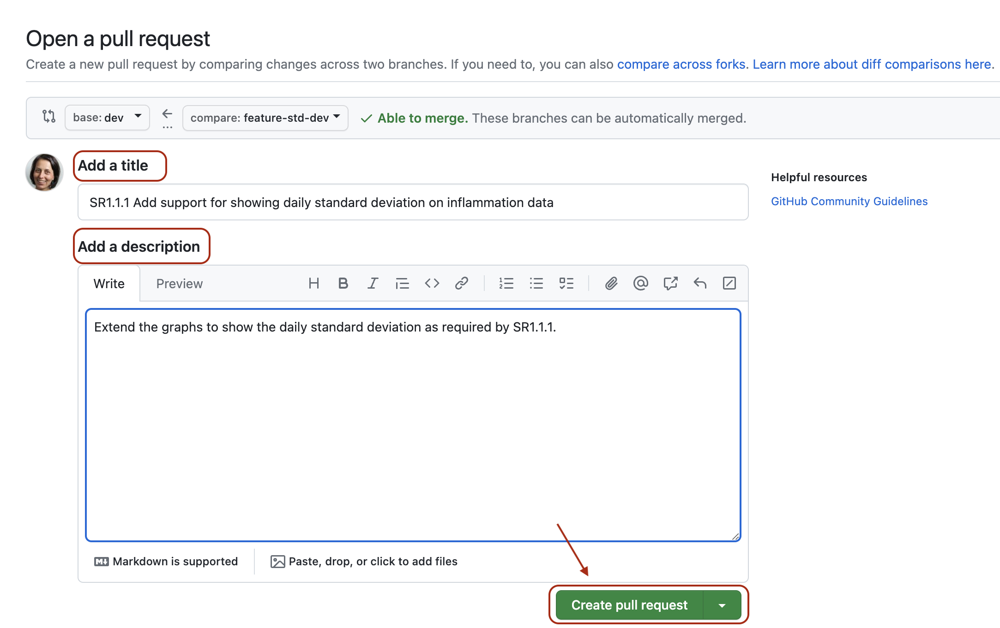
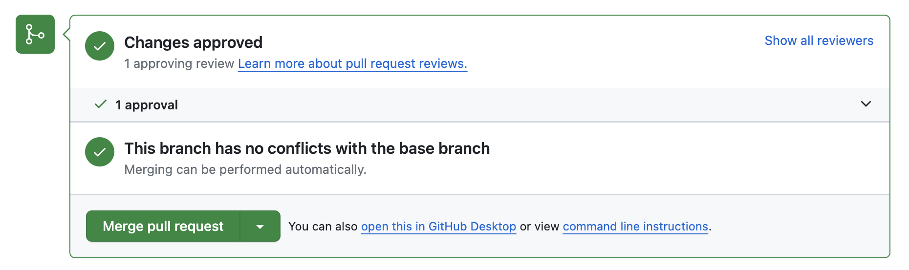

Content from Setting the Scene
Last updated on 2025-07-30 | Edit this page
Estimated time: 15 minutes
Overview
Questions
- What are we teaching in this course?
- What motivated the selection of topics covered in the course?
Objectives
- Setting the scene and expectations
- Making sure everyone has all the necessary software installed
Introduction
So, you have gained basic software development skills either by self-learning or attending, e.g., a novice Software Carpentry course. You have been applying those skills for a while by writing code to help with your work and you feel comfortable developing code and troubleshooting problems. However, your software has now reached a point where there is too much code to be kept in one script. Perhaps it is involving more researchers (developers) and users, and more collaborative development effort is needed to add new functionality while ensuring previous development efforts remain functional and maintainable.
This course provides the next step in software development - it teaches some intermediate software engineering skills and best practices to help you restructure existing code and design more robust, reusable and maintainable code, automate the process of testing and verifying software correctness and support collaborations with others in a way that mimics a typical software development process within a team.
The course uses a number of different software development tools and techniques interchangeably as you would in a real life. We had to make some choices about topics and tools to teach here, based on established best practices, ease of tool installation for the audience, length of the course and other considerations. Tools used here are not mandated though: alternatives exist and we point some of them out along the way. Over time, you will develop a preference for certain tools and programming languages based on your personal taste or based on what is commonly used by your group, collaborators or community. However, the topics covered should give you a solid foundation for working on software development in a team and producing high quality software that is easier to develop and sustain in the future by yourself and others. Skills and tools taught here, while Python-specific, are transferable to other similar tools and programming languages.
The course is organised into the following sections:
Section 1: Setting up Software Environment
In the first section we are going to set up our working environment and familiarise ourselves with various tools and techniques for software development in a typical collaborative code development cycle:
- Virtual environments for isolating a project from other projects developed on the same machine
- Command line for running code and interacting with the command line tool Git for
- Integrated Development Environment for code development, testing and debugging, Version control and using code branches to develop new features in parallel,
- GitHub (central and remote source code management platform supporting version control with Git) for code backup, sharing and collaborative development, and
- Python code style guidelines to make sure our code is documented, readable and consistently formatted.
Section 2: Verifying Software Correctness at Scale
Once we know our way around different code development tools, techniques and conventions, in this section we learn:
- how to set up a test framework and write tests to verify the behaviour of our code is correct, and
- how to automate and scale testing with Continuous Integration (CI) using GitHub Actions (a CI service available on GitHub).
Section 3: Software Development as a Process
In this section, we step away from writing code for a bit to look at software from a higher level as a process of development and its components:
- different types of software requirements and designing and architecting software to meet them, how these fit within the larger software development process and what we should consider when testing against particular types of requirements.
- different programming and software design paradigms, each representing a slightly different way of thinking about, structuring and implementing the code.
Section 4: Collaborative Software Development for Reuse
Advancing from developing code as an individual, in this section you will start working with your fellow learners on a group project (as you would do when collaborating on a software project in a team), and learn:
- how code review can help improve team software contributions, identify wider codebase issues, and increase codebase knowledge across a team.
- what we can do to prepare our software for further development and reuse, by adopting best practices in documenting, licencing, tracking issues, supporting your software, and packaging software for release to others.
Section 5: Managing and Improving Software Over Its Lifetime
Finally, we move beyond just software development to managing a collaborative software project and will look into:
- internal planning and prioritising tasks for future development using agile techniques and effort estimation, management of internal and external communication, and software improvement through feedback.
- how to adopt a critical mindset not just towards our own software project but also to assess other people’s software to ensure it is suitable for us to reuse, identify areas for improvement, and how to use GitHub to register good quality issues with a particular code repository.
Before We Start
A few notes before we start.
Prerequisite Knowledge
This is an intermediate-level software development course intended for people who have already been developing code in Python (or other languages) and applying it to their own problems after gaining basic software development skills. So, it is expected for you to have some prerequisite knowledge on the topics covered, as outlined at the beginning of the lesson. Check out this quiz to help you test your prior knowledge and determine if this course is for you.
Setup, Common Issues & Fixes
Have you setup and installed all the tools and accounts required for this course? Check the list of common issues, fixes & tips if you experience any problems running any of the tools you installed - your issue may be solved there.
Compulsory and Optional Exercises
Exercises are a crucial part of this course and the narrative. They are used to reinforce the points taught and give you an opportunity to practice things on your own. Please do not be tempted to skip exercises as that will get your local software project out of sync with the course and break the narrative. Exercises that are clearly marked as “optional” can be skipped without breaking things but we advise you to go through them too, if time allows. All exercises contain solutions but, wherever possible, try and work out a solution on your own.
Outdated Screenshots
Throughout this lesson we will make use and show content from Graphical User Interface (GUI) tools such as Integrated Development Environments (IDEs) and GitHub. These are evolving tools and platforms, always adding new features and new visual elements. Screenshots in the lesson may then become out-of-sync, refer to or show content that no longer exists or is different to what you see on your machine. If during the lesson you find screenshots that no longer match what you see or have a big discrepancy with what you see, please open an issue describing what you see and how it differs from the lesson content. Feel free to add as many screenshots as necessary to clarify the issue.
- This lesson focuses on core, intermediate skills covering the whole software development life-cycle that will be of most use to anyone working collaboratively on code.
- For code development in teams - you need more than just the right tools and languages. You need a strategy (best practices) for how you’ll use these tools as a team.
- The lesson follows on from the novice Software Carpentry lesson, but this is not a prerequisite for attending as long as you have some basic Python, command line and Git skills and you have been using them for a while to write code to help with your work.
Content from Section 1: Setting Up Environment For Collaborative Code Development
Last updated on 2025-07-30 | Edit this page
Estimated time: 10 minutes
Overview
Questions
- What tools are needed to collaborate on code development effectively?
Objectives
- Provide an overview of all the different tools that will be used in this course.
The first section of the course is dedicated to setting up your environment for collaborative software development and introducing the project that we will be working on throughout the course. In order to build working (research) software efficiently and to do it in collaboration with others rather than in isolation, you will have to get comfortable with using a number of different tools interchangeably as they will make your life a lot easier. There are many options when it comes to deciding which software development tools to use for your daily tasks - we will use a few of them in this course that we believe make a difference. There are sometimes multiple tools for the job - we select one to use but mention alternatives too. As you get more comfortable with different tools and their alternatives, you will select the one that is right for you based on your personal preferences or based on what your collaborators are using.
Here is an overview of the tools we will be using.
Setup, Common Issues & Fixes
Have you setup and installed all the tools and accounts required for this course? Check the list of common issues, fixes & tips if you experience any problems running any of the tools you installed - your issue may be solved there.
Command Line & Python Virtual Development Environment
We will use the command line
(also known as the command line shell/prompt/console) to run our Python
code and interact with the version control tool Git and software sharing
platform GitHub. We will also use command line tools venv
and pip to set
up a Python virtual development environment and isolate our software
project from other Python projects we may work on.
Note: some Windows users experience the issue
where Python hangs from Git Bash (i.e. typing python causes
it to just hang with no error message or output) - see the solution to
this issue.
Integrated Development Environment (IDE)
An IDE integrates a number of tools that we need to develop a software project that goes beyond a single script - including a smart code editor, a code compiler/interpreter, a debugger, etc. It will help you write well-formatted and readable code that conforms to code style guides (such as PEP8 for Python) more efficiently by giving relevant and intelligent suggestions for code completion and refactoring. IDEs often integrate command line console and version control tools - we teach them separately in this course as this knowledge can be ported to other programming languages and command line tools you may use in the future (but is applicable to the integrated versions too).
You have a choice of using PyCharm or Visual Studio Code (VS Code) in this course.
Git & GitHub
Git is a free and open source distributed version control system designed to save every change made to a (software) project, allowing others to collaborate and contribute. In this course, we use Git to version control our code in conjunction with GitHub for code backup and sharing. GitHub is one of the leading integrated products and social platforms for modern software development, monitoring and management - it will help us with version control, issue management, code review, code testing/Continuous Integration, and collaborative development. An important concept in collaborative development is version control workflows (i.e. how to effectively use version control on a project with others).
Python Coding Style
Most programming languages will have associated standards and conventions for how the source code should be formatted and styled. Although this sounds pedantic, it is important for maintaining the consistency and readability of code across a project. Therefore, one should be aware of these guidelines and adhere to whatever the project you are working on has specified. In Python, we will be looking at a convention called PEP8.
Let us get started with setting up our software development environment!
- In order to develop (write, test, debug, backup) code efficiently, you need to use a number of different tools.
- When there is a choice of tools for a task you will have to decide which tool is right for you, which may be a matter of personal preference or what the team or community you belong to is using.
Content from 1.1 Introduction to Our Software Project
Last updated on 2025-07-30 | Edit this page
Estimated time: 30 minutes
Overview
Questions
- What is the design architecture of our example software project?
- Why is splitting code into smaller functional units (modules) good when designing software?
Objectives
- Use Git to obtain a working copy of our software project from GitHub.
- Inspect the structure and architecture of our software project.
- Understand Model-View-Controller (MVC) architecture in software design and its use in our project.
Patient Inflammation Study Project
You have joined a software development team that has been working on the patient inflammation study project developed in Python and stored on GitHub. The project analyses the data to study the effect of a new treatment for arthritis by analysing the inflammation levels in patients who have been given this treatment. It reuses the inflammation datasets from the Software Carpentry Python novice lesson.

Inflammation study pipeline from the Software Carpentry Python novice lesson
What Does Patient Inflammation Data Contain?
Each dataset records inflammation measurements from a separate clinical trial of the drug, and each dataset contains information for 60 patients, who had their inflammation levels recorded (in some arbitrary units of inflammation measurement) for 40 days whilst participating in the trial. A snapshot of one of the data files is shown in the diagram above.
Each of the data files uses the popular comma-separated (CSV) format to represent the data, where:
- each row holds inflammation measurements for a single patient
- each column represents a successive day in the trial
- each cell represents an inflammation reading on a given day for a patient
The project is not finished and contains some errors. You will be working on your own and in collaboration with others to fix and build on top of the existing code during the course.
Downloading Our Software Project
To start working on the project, you will first create a fork of the software project repository from GitHub within your own GitHub account and then obtain a local copy of that project (from your GitHub) on your machine.
- Make sure you have a GitHub account and that you have set up SSH key pair for authentication with GitHub.
Note: while it is possible to use HTTPS with a personal access token for authentication with GitHub, the recommended and supported authentication method to use for this course is SSH with key pairs.
Log into your GitHub account.
Go to the software project repository in GitHub.

- Click the
Forkbutton towards the top right of the repository’s GitHub page to create a fork of the repository under your GitHub account. Remember, you will need to be signed into GitHub for theForkbutton to work.
Note: each participant is creating their own fork of the project to work on.
Note 2: we are creating a fork of the software project repository (instead of copying it from its template) because we want to preserve the history of all commits (with template copying you only get a snapshot of a repository at a given point in time).
- Make sure to select your personal account and set the name of the
project to
python-intermediate-inflammation(you can call it anything you like, but it may be easier for future group exercises if everyone uses the same name). Ensure that you uncheck theCopy the main branch onlyoption. This guarantees you get all the branches from this repository needed for later exercises.

Click the
Create forkbutton and wait for GitHub to create the forked copy of the repository under your account.Locate the forked repository under your own GitHub account. GitHub should redirect you there automatically after creating the fork. If this does not happen, click your user icon in the top right corner and select
Your Repositoriesfrom the drop-down menu, then locate your newly created fork.

Exercise: Obtain the Software Project Locally
Using the command line, clone the copied repository from your GitHub account into the home directory on your computer using SSH. Which command(s) would you use to get a detailed list of contents of the directory you have just cloned?
- Find the SSH URL of the software project repository to clone from your GitHub account. Make sure you do not clone the original repository but rather your own fork, as you should be able to push commits to it later on. Also make sure you select the SSH tab and not the HTTPS one. For this course, SSH is the preferred way of authenticating when sending your changes back to GitHub. If you have only authenticated through HTTPS in the past, please follow the guidance at the top of this section to add an SSH key to your GitHub account.

- Make sure you are located in your home directory in the command line with:
- From your home directory in the command line, do:
Make sure you are cloning your fork of the software project and not the original repository.
- Navigate into the cloned repository folder in your command line with:
Note: If you have accidentally copied the HTTPS URL of your repository instead of the SSH one, you can easily fix that from your project folder in the command line with:
Our Software Project’s Structure
Let’s inspect the content of the software project from the command
line. From the root directory of the project, you can use the command
ls -l to get a more detailed list of the contents. You
should see something similar to the following.
BASH
$ cd ~/python-intermediate-inflammation
$ ls -l
total 24
-rw-r--r-- 1 carpentry users 1055 20 Apr 15:41 README.md
drwxr-xr-x 18 carpentry users 576 20 Apr 15:41 data
drwxr-xr-x 5 carpentry users 160 20 Apr 15:41 inflammation
-rw-r--r-- 1 carpentry users 1122 20 Apr 15:41 inflammation-analysis.py
drwxr-xr-x 4 carpentry users 128 20 Apr 15:41 testsAs can be seen from the above, our software project contains the
README file (that typically describes the project, its
usage, installation, authors and how to contribute), Python script
inflammation-analysis.py, and three directories -
inflammation, data and tests.
The Python script inflammation-analysis.py provides the
main entry point in the application, and on closer inspection, we can
see that the inflammation directory contains two more
Python scripts - views.py and models.py. We
will have a more detailed look into these shortly.
BASH
$ ls -l inflammation
total 24
-rw-r--r-- 1 alex staff 71 29 Jun 09:59 __init__.py
-rw-r--r-- 1 alex staff 838 29 Jun 09:59 models.py
-rw-r--r-- 1 alex staff 649 25 Jun 13:13 views.pyDirectory data contains several files with patients’
daily inflammation information (along with some other files):
BASH
$ ls -l data
total 264
-rw-r--r-- 1 alex staff 5365 25 Jun 13:13 inflammation-01.csv
-rw-r--r-- 1 alex staff 5314 25 Jun 13:13 inflammation-02.csv
-rw-r--r-- 1 alex staff 5127 25 Jun 13:13 inflammation-03.csv
-rw-r--r-- 1 alex staff 5367 25 Jun 13:13 inflammation-04.csv
-rw-r--r-- 1 alex staff 5345 25 Jun 13:13 inflammation-05.csv
-rw-r--r-- 1 alex staff 5330 25 Jun 13:13 inflammation-06.csv
-rw-r--r-- 1 alex staff 5342 25 Jun 13:13 inflammation-07.csv
-rw-r--r-- 1 alex staff 5127 25 Jun 13:13 inflammation-08.csv
-rw-r--r-- 1 alex staff 5327 25 Jun 13:13 inflammation-09.csv
-rw-r--r-- 1 alex staff 5342 25 Jun 13:13 inflammation-10.csv
-rw-r--r-- 1 alex staff 5127 25 Jun 13:13 inflammation-11.csv
-rw-r--r-- 1 alex staff 5340 25 Jun 13:13 inflammation-12.csv
-rw-r--r-- 1 alex staff 22554 25 Jun 13:13 python-novice-inflammation-data.zip
-rw-r--r-- 1 alex staff 12 25 Jun 13:13 small-01.csv
-rw-r--r-- 1 alex staff 15 25 Jun 13:13 small-02.csv
-rw-r--r-- 1 alex staff 12 25 Jun 13:13 small-03.csvAs previously mentioned, each of the inflammation data files contains separate trial data for 60 patients over 40 days.
Exercise: Have a Peek at the Data
Which command(s) would you use to list the contents or a first few
lines of data/inflammation-01.csv file?
- To list the entire content of a file from the project root do:
cat data/inflammation-01.csv. - To list the first 5 lines of a file from the project root do:
OUTPUT
0,0,1,3,1,2,4,7,8,3,3,3,10,5,7,4,7,7,12,18,6,13,11,11,7,7,4,6,8,8,4,4,5,7,3,4,2,3,0,0
0,1,2,1,2,1,3,2,2,6,10,11,5,9,4,4,7,16,8,6,18,4,12,5,12,7,11,5,11,3,3,5,4,4,5,5,1,1,0,1
0,1,1,3,3,2,6,2,5,9,5,7,4,5,4,15,5,11,9,10,19,14,12,17,7,12,11,7,4,2,10,5,4,2,2,3,2,2,1,1
0,0,2,0,4,2,2,1,6,7,10,7,9,13,8,8,15,10,10,7,17,4,4,7,6,15,6,4,9,11,3,5,6,3,3,4,2,3,2,1
0,1,1,3,3,1,3,5,2,4,4,7,6,5,3,10,8,10,6,17,9,14,9,7,13,9,12,6,7,7,9,6,3,2,2,4,2,0,1,1Directory tests contains several tests that have been
implemented already. We will be adding more tests during the course as
our code grows.
BASH
$ ls -l tests
total 16
-rw-r--r-- 1 alex staff 941 18 Dec 11:42 test_models.py
-rw-r--r-- 1 alex staff 182 18 Dec 11:42 test_patient.pyAn important thing to note here is that the structure of our project is not arbitrary. One of the big differences between novice and intermediate software development is planning the structure of your code. This structure includes software components and behavioural interactions between them, including how these components are laid out in a directory and file structure. A novice will often make up the structure of their code as they go along. However, for more advanced software development, we need to plan and design this structure - called a software architecture - beforehand.
Let us have a quick look into what a software architecture is and which architecture is used by our software project before we start adding more code to it.
Software Architecture
A software architecture is the fundamental structure of a software system that is decided at the beginning of project development based on its requirements and cannot be changed that easily once implemented. It refers to a “bigger picture” of a software system that describes high-level components (modules) of the system and how they interact.
In software design and development, large systems or programs are
often decomposed into a set of smaller modules each with a subset of
functionality. Typical examples of modules in programming are software
libraries; some software libraries, such as numpy and
matplotlib in Python, are bigger modules that contain
several smaller sub-modules. Another example of modules are classes in
object-oriented programming languages.
Programming Modules and Interfaces
Although modules are self-contained and independent elements to a large extent (they can depend on other modules), there are well-defined ways of how they interact with one another. These rules of interaction are called programming interfaces - they define how other modules (clients) can use a particular module. Typically, an interface to a module includes rules on how a module can take input from and how it gives output back to its clients. A client can be a human, in which case we also call these user interfaces. Even smaller functional units such as functions/methods have clearly defined interfaces - a function/method’s definition (also known as a signature) states what parameters it can take as input and what it returns as an output.
We are going to talk about software architecture and design a bit more in Section 3 - for now it is sufficient to know that the way our software project’s code is structured is intentional.
Our Project’s Architecture
Our software project uses the Model-View-Controller (MVC) architecture. MVC architecture divides the software logic into three interconnected modules:
- Model (data) - represents the data used by a program and contains operations/rules for manipulating and changing the data in the model (a database, a file, a single data object or a series of objects - for example a table representing patients’ data).
- View (client interface) - provides means of displaying data to users/clients within an application (i.e. provides visualisation of the state of the model). For example, displaying a window with input fields and buttons (Graphical User Interface, GUI) or textual options within a command line (Command Line Interface, CLI) are examples of Views.
- Controller (processes that handle input/output and manipulate the data) - accepts input from the View and performs the corresponding action on the Model (changing the state of the model) and then updates the View accordingly.
In our project, inflammation-analysis.py is the
Controller module that performs basic statistical
analysis over patient data and provides the main entry point into the
application. The View and Model
modules are contained in the files views.py and
models.py, respectively, and are conveniently named. Data
underlying the Model is contained within the directory
data - as we have seen already it contains several files
with patients’ daily inflammation information.
We will revisit the software architecture and MVC topics once again in later episodes when we talk in more detail about software architecture and design. We now proceed to set up our virtual development environment and start working with the code using a more convenient graphical tool - an Integrated Development Environment (IDE).
- Programming interfaces define how individual modules within a software application interact among themselves or how the application itself interacts with its users.
- MVC is a software design architecture which divides the application into three interconnected modules: Model (data), View (user interface), and Controller (input/output and data manipulation).
- The software project we use throughout this course is an example of an MVC application that manipulates patients’ inflammation data and performs basic statistical analysis using Python.
Content from 1.2 Virtual Environments For Software Development
Last updated on 2025-07-30 | Edit this page
Estimated time: 30 minutes
Overview
Questions
- What are virtual environments in software development and why you should use them?
- How can we manage Python virtual environments and external (third-party) libraries?
Objectives
- Set up a Python virtual environment for our software project using
venvandpip. - Run our software from the command line.
Introduction
So far we have cloned our software project from GitHub and inspected its contents and architecture a bit. We now want to run our code to see what it does - let us do that from the command line. For the most part of the course we will run our code and interact with Git from the command line. While we will develop and debug our code using an IDE and it is possible to use Git from the IDE too, typing commands in the command line allows you to familiarise yourself and learn it well. A bonus is that this knowledge is transferable to running code in other programming languages and is independent from any IDE you may use in the future.
If you have a little peek into our code (e.g. run
cat inflammation/views.py from the project root), you will
see the following two lines somewhere at the top.
This means that our code requires two external
libraries (also called third-party packages or dependencies) -
numpy and matplotlib. Python applications
often use external libraries that don’t come as part of the standard
Python distribution. This means that you will have to use a package
manager tool to install them on your system. Applications will also
sometimes need a specific version of an external library (e.g. because
they were written to work with feature, class, or function that may have
been updated in more recent versions), or a specific version of Python
interpreter. This means that each Python application you work with may
require a different setup and a set of dependencies so it is useful to
be able to keep these configurations separate to avoid confusion between
projects. The solution for this problem is to create a self-contained
virtual environment per project, which contains a
particular version of Python installation plus a number of additional
external libraries.
Virtual environments are not just a feature of Python - most modern programming languages use a similar mechanism to isolate libraries or dependencies for a specific project, making it easier to develop, run, test and share code with others. Some examples include Bundler for Ruby, Conan for C++, or Maven with classpath for Java. This can also be achieved with more generic package managers like Spack, which is used extensively in HPC settings to resolve complex dependencies. In this episode, we learn how to set up a virtual environment to develop our code and manage our external dependencies.
Virtual Environments
So what exactly are virtual environments, and why use them?
A Python virtual environment helps us create an isolated working copy of a software project that uses a specific version of Python interpreter together with specific versions of a number of external libraries installed into that virtual environment. Python virtual environments are implemented as directories with a particular structure within software projects, containing links to specified dependencies allowing isolation from other software projects on your machine that may require different versions of Python or external libraries.
As more external libraries are added to your Python project over time, you can add them to its specific virtual environment and avoid a great deal of confusion by having separate (smaller) virtual environments for each project rather than one huge global environment with potential package version clashes. Another big motivator for using virtual environments is that they make sharing your code with others much easier (as we will see shortly). Here are some typical scenarios where the use of virtual environments is highly recommended (almost unavoidable):
- You have an older project that only works under Python 2. You do not have the time to migrate the project to Python 3 or it may not even be possible as some of the third party dependencies are not available under Python 3. You have to start another project under Python 3. The best way to do this on a single machine is to set up two separate Python virtual environments.
- One of your Python 3 projects is locked to use a particular older version of a third party dependency. You cannot use the latest version of the dependency as it breaks things in your project. In a separate branch of your project, you want to try and fix problems introduced by the new version of the dependency without affecting the working version of your project. You need to set up a separate virtual environment for your branch to ‘isolate’ your code while testing the new feature.
You do not have to worry too much about specific versions of external libraries that your project depends on most of the time. Virtual environments also enable you to always use the latest available version without specifying it explicitly. They also enable you to use a specific older version of a package for your project, should you need to.
A Specific Python or Package Version is Only Ever Installed Once
Note that you will not have a separate Python or package installations for each of your projects - they will only ever be installed once on your system but will be referenced from different virtual environments.
Managing Python Virtual Environments
There are several commonly used command line tools for managing Python virtual environments:
-
venv, available by default from the standardPythondistribution fromPython 3.3+ -
virtualenv, needs to be installed separately but supports bothPython 2.7+andPython 3.3+versions -
pipenv, created to fix certain shortcomings ofvirtualenv -
conda, package and environment management system (also included as part of the Anaconda Python distribution often used by the scientific community) -
poetry, a modern Python packaging tool which handles virtual environments automatically
While there are pros and cons for using each of the above, all will
do the job of managing Python virtual environments for you and it may be
a matter of personal preference which one you go for. In this course, we
will use venv to create and manage our virtual environment
(which is the preferred way for Python 3.3+). The upside is that
venv virtual environments created from the command line are
also recognised and picked up automatically by the IDEs we will use in
this course, as we will see in the next episode.
Managing External Packages
Part of managing your (virtual) working environment involves
installing, updating and removing external packages on your system. The
Python package manager tool pip is most commonly used for
this - it interacts and obtains the packages from the central repository
called Python Package Index (PyPI).
pip can now be used with all Python distributions
(including Anaconda).
A Note on Anaconda and conda
Anaconda is an open source Python distribution commonly used for
scientific programming - it conveniently installs Python, package and
environment management conda, and a number of commonly used
scientific computing packages so you do not have to obtain them
separately. conda is an independent command line tool
(available separately from the Anaconda distribution too) with dual
functionality: (1) it is a package manager that helps you find Python
packages from remote package repositories and install them on your
system, and (2) it is also a virtual environment manager. So, you can
use conda for both tasks instead of using venv
and pip.
Many Tools for the Job
Installing and managing Python distributions, external libraries and
virtual environments is, well, complex. There is an abundance of tools
for each task, each with its advantages and disadvantages, and there are
different ways to achieve the same effect (and even different ways to
install the same tool!). Note that each Python distribution comes with
its own version of pip - and if you have several Python
versions installed you have to be extra careful to use the correct
pip to manage external packages for that Python
version.
venv and pip are considered the de
facto standards for virtual environment and package management for
Python 3. However, the advantages of using Anaconda and
conda are that you get (most of the) packages needed for
scientific code development included with the distribution. If you are
only collaborating with others who are also using Anaconda, you may find
that conda satisfies all your needs. It is good, however,
to be aware of all these tools, and use them accordingly. As you become
more familiar with them you will realise that equivalent tools work in a
similar way even though the command syntax may be different (and that
there are equivalent tools for other programming languages too to which
your knowledge can be ported).

Let us have a look at how we can create and manage virtual
environments from the command line using venv and manage
packages using pip.
Making Sure You Can Invoke Python
You can test your Python installation from the command line with:
BASH
$ python3 --version # on Mac/Linux
$ python --version # on Windows — Windows installation comes with a python.exe file rather than a python3.exe file If you are using Windows and invoking python command
causes your Git Bash terminal to hang with no error message or output,
you may need to create an alias for the python executable
python.exe, as explained in the troubleshooting
section.
Creating Virtual Environments Using venv
Creating a virtual environment with venv is done by
executing the following command:
where /path/to/new/virtual/environment is a path to a
directory where you want to place it - conventionally within your
software project so they are co-located. This will create the target
directory for the virtual environment (and any parent directories that
don’t exist already).
What is -m Flag in
python3 Command?
The Python -m flag means “module” and tells the Python
interpreter to treat what follows -m as the name of a
module and not as a single, executable program with the same name. Some
modules (such as venv or pip) have main entry
points and the -m flag can be used to invoke them on the
command line via the python command. The main difference
between running such modules as standalone programs (e.g. executing
“venv” by running the venv command directly) versus using
python3 -m command seems to be that with latter you are in
full control of which Python module will be invoked (the one that came
with your environment’s Python interpreter vs. some other version you
may have on your system). This makes it a more reliable way to set
things up correctly and avoid issues that could prove difficult to trace
and debug.
For our project let us create a virtual environment called “venv”. First, ensure you are within the project root directory, then:
If you list the contents of the newly created directory “venv”, on a Mac or Linux system (slightly different on Windows as explained below) you should see something like:
OUTPUT
total 8
drwxr-xr-x 12 alex staff 384 5 Oct 11:47 bin
drwxr-xr-x 2 alex staff 64 5 Oct 11:47 include
drwxr-xr-x 3 alex staff 96 5 Oct 11:47 lib
-rw-r--r-- 1 alex staff 90 5 Oct 11:47 pyvenv.cfgSo, running the python3 -m venv venv command created the
target directory called “venv” containing:
-
pyvenv.cfgconfiguration file with a home key pointing to the Python installation from which the command was run, -
binsubdirectory (calledScriptson Windows) containing a symlink of the Python interpreter binary used to create the environment and the standard Python library, -
lib/pythonX.Y/site-packagessubdirectory (calledLib\site-packageson Windows) to contain its own independent set of installed Python packages isolated from other projects, and - various other configuration and supporting files and subdirectories.
Naming Virtual Environments
What is a good name to use for a virtual environment? Using “venv” or “.venv” as the name for an environment and storing it within the project’s directory seems to be the recommended way - this way when you come across such a subdirectory within a software project, by convention you know it contains its virtual environment details. A slight downside is that all different virtual environments on your machine then use the same name and the current one is determined by the context of the path you are currently located in. A (non-conventional) alternative is to use your project name for the name of the virtual environment, with the downside that there is nothing to indicate that such a directory contains a virtual environment. In our case, we have settled to use the name “venv” instead of “.venv” since it is not a hidden directory and we want it to be displayed by the command line when listing directory contents (the “.” in its name that would, by convention, make it hidden). In the future, you will decide what naming convention works best for you. Here are some references for each of the naming conventions:
- The Hitchhiker’s Guide to Python notes that “venv” is the general convention used globally
- The Python Documentation indicates that “.venv” is common
- “venv” vs “.venv” discussion
Once you’ve created a virtual environment, you will need to activate it.
On Mac or Linux, it is done as:
On Windows, recall that we have Scripts directory
instead of bin and activating a virtual environment is done
as:
Activating the virtual environment will change your command line’s prompt to show what virtual environment you are currently using (indicated by its name in round brackets at the start of the prompt), and modify the environment so that running Python will get you the particular version of Python configured in your virtual environment.
You can verify you are using your virtual environment’s version of
Python by checking the path using the command which:
OUTPUT
/home/alex/python-intermediate-inflammation/venv/bin/python3When you’re done working on your project, you can exit the environment with:
If you have just done the deactivate, ensure you
reactivate the environment ready for the next part:
Python Within A Virtual Environment
Within an active virtual environment, commands python3
and python should both refer to the version of Python 3 you
created the environment with (note you may have multiple Python 3
versions installed).
However, on some machines with Python 2 installed,
python command may still be hardwired to the copy of Python
2 installed outside of the virtual environment - this can cause errors
and confusion.
You can always check which version of Python you are using in your
virtual environment with the command which python to be
absolutely sure. We continue using python3 in this material
to avoid mistakes, but the command python may work for you
as expected.
Note that, since our software project is being tracked by Git, the newly created virtual environment will show up in version control - we will see how to handle it using Git in one of the subsequent episodes.
Installing External Packages Using pip
We noticed earlier that our code depends on two external
packages/libraries - numpy and
matplotlib. In order for the code to run on your machine,
you need to install these two dependencies into your virtual
environment.
To install the latest version of a package with pip you
use pip’s install command and specify the package’s name,
e.g.:
or like this to install multiple packages at once for short:
How About
pip3 install <package-name> Command?
You may have seen or used the
pip3 install <package-name> command in the past,
which is shorter and perhaps more intuitive than
python3 -m pip install. However, the official
Pip documentation recommends python3 -m pip install and
core Python developer Brett Cannon offers a more detailed
explanation of edge cases when the two commands may produce
different results and why python3 -m pip install is
recommended. In this material, we will use python3 -m
whenever we have to invoke a Python module from command line.
If you run the python3 -m pip install command on a
package that is already installed, pip will notice this and
do nothing.
To install a specific version of a Python package give the package
name followed by == and the version number,
e.g. python3 -m pip install numpy==1.21.1.
To specify a minimum version of a Python package, you can do
python3 -m pip install numpy>=1.20.
To upgrade a package to the latest version,
e.g. python3 -m pip install --upgrade numpy.
To display information about a particular installed package do:
OUTPUT
Name: numpy
Version: 1.26.2
Summary: Fundamental package for array computing in Python
Home-page: https://numpy.org
Author: Travis E. Oliphant et al.
Author-email:
License: Copyright (c) 2005-2023, NumPy Developers.
All rights reserved.
...
Required-by: contourpy, matplotlibTo list all packages installed with pip (in your current
virtual environment):
OUTPUT
Package Version
--------------- -------
contourpy 1.2.0
cycler 0.12.1
fonttools 4.45.0
kiwisolver 1.4.5
matplotlib 3.8.2
numpy 1.26.2
packaging 23.2
Pillow 10.1.0
pip 23.0.1
pyparsing 3.1.1
python-dateutil 2.8.2
setuptools 67.6.1
six 1.16.0To uninstall a package installed in the virtual environment do:
python3 -m pip uninstall <package-name>. You can also
supply a list of packages to uninstall at the same time.
Installing Our Local Project as a Package Using
pip
Often when working on a Python project, the project itself will be a
Python package (like numpy or matplotlib
above) or at the very least it might be useful to treat it like a
package. Said another way, it is usually the case we want a convenient
way to call the Python code we are writing from another location, and
making this code accessible as a package is the best way to do this. We
will save the details of Python packaging for a future episode, and for the
meantime we can use the minimal package setup that our project already
comes with, which is contained in the pyproject.toml file.
Once again, we can use pip to install our local
package:
If the above command fails for you - your pip
installation is older than version 21.3. Such older versions of
pip do not support pyproject.toml as the
package metadata. Given these versions of pip are now over
4 years old, we strongly recommend that you update pip if
you can with:
This is similar syntax to above, with two important differences:
- The
--editableor-eflag indicates that the package we are specifying should be an “editable” install. An “editable” install is one that allows the package in our environment to change dynamically based on source code locally. This is very convenient when we are developing the package because we can instantly see changes when we call the code from within our virtual environment, rather than having to install the local package again to get the updates. - The argument
'.'indicates that the package we want to install is located in the current directory. Thepyproject.tomlfile located in this directory then handles the rest.
If we reissue the pip list command we should now see our
local package with the name
python-intermediate-inflammation in the output:
OUTPUT
Package Version Editable project location
-------------------------------- ----------- ----------------------------------------------------------------------------------------------
contourpy 1.3.1
cycler 0.12.1
exceptiongroup 1.2.2
fonttools 4.56.0
iniconfig 2.0.0
kiwisolver 1.4.8
matplotlib 3.10.0
numpy 2.2.3
packaging 24.2
pillow 11.1.0
pip 22.0.2
pluggy 1.5.0
pyparsing 3.2.1
pytest 8.3.4
python-dateutil 2.9.0.post0
python-intermediate-inflammation 0.0.0 /path/to/your/project/directory/python-intermediate-inflammation
setuptools 59.6.0
six 1.17.0
tomli 2.2.1Exporting/Importing Virtual Environments Using pip
You are collaborating on a project with a team so, naturally, you
will want to share your environment with your collaborators so they can
easily ‘clone’ your software project with all of its dependencies and
everyone can replicate equivalent virtual environments on their
machines. pip has a handy way of exporting, saving and
sharing virtual environments.
To export your active environment use the
python3 -m pip freeze --exclude-editable command to produce
a list of packages installed in the virtual environment. A common
convention is to put this list in a requirements.txt
file:
BASH
(venv) $ python3 -m pip freeze --exclude-editable > requirements.txt
(venv) $ cat requirements.txtOUTPUT
contourpy==1.2.0
cycler==0.12.1
fonttools==4.45.0
kiwisolver==1.4.5
matplotlib==3.8.2
numpy==1.26.2
packaging==23.2
Pillow==10.1.0
pyparsing==3.1.1
python-dateutil==2.8.2
six==1.16.0The first of the above commands will create a
requirements.txt file in your current directory. Yours may
look a little different, depending on the version of the packages you
have installed, as well as any differences in the packages that they
themselves use. Also, we need to use the --exclude-editable
command so that our local package is not included in the output,
otherwise pip will try to pull from a specific commit at the time we
made the editable install, which is not what we want.
The requirements.txt file can then be committed to a
version control system (we will see how to do this using Git in one of
the following episodes) and get shipped as part of your software and
shared with collaborators and/or users. They can then replicate your
environment and install all the necessary packages from the project root
as follows:
As your project grows you may need to update your environment for a
variety of reasons. For example, one of your project’s dependencies has
just released a new version (dependency version number update), you need
an additional package for data analysis (adding a new dependency) or you
have found a better package and no longer need the older package (adding
a new and removing an old dependency). What you need to do in this case
(apart from installing the new and removing the packages that are no
longer needed from your virtual environment) is update the contents of
the requirements.txt file accordingly by re-issuing
pip freeze command and propagate the updated
requirements.txt file to your collaborators via your code
sharing platform (e.g. GitHub).
Official Documentation
For a full list of options and commands, consult the official
venv documentation and the Installing
Python Modules with pip guide. Also check out the guide
“Installing
packages using pip and virtual environments”.
Running Python Scripts From Command Line
Congratulations! Your environment is now activated and set up to run
our inflammation-analysis.py script from the command
line.
You should already be located in the root of the
python-intermediate-inflammation directory (if not, please
navigate to it from the command line now). To run the script, type the
following command:
OUTPUT
usage: inflammation-analysis.py [-h] infiles [infiles ...]
inflammation-analysis.py: error: the following arguments are required: infilesIn the above command, we tell the command line two things:
- to find a Python interpreter (in this case, the one that was configured via the virtual environment), and
- to use it to run our script
inflammation-analysis.py, which resides in the current directory.
As we can see, the Python interpreter ran our script, which threw an
error -
inflammation-analysis.py: error: the following arguments are required: infiles.
It looks like the script expects a list of input files to process, so
this is expected behaviour since we do not supply any.
We should run our code as follows, passing one (or more) data file(s) as input:
Optional Exercises
Have a look at some optional exercises.
- Virtual environments keep Python versions and dependencies required by different projects separate.
- A virtual environment is itself a directory structure.
- Use
venvto create and manage Python virtual environments. - Use
pipto install and manage Python external (third-party) libraries. -
pipallows you to declare all dependencies for a project in a separate file (by convention calledrequirements.txt) which can be shared with collaborators/users and used to replicate a virtual environment. - Use
python3 -m pip freeze --exclude-editable > requirements.txtto take snapshot of your project’s dependencies. - Use
python3 -m pip install -r requirements.txtto replicate someone else’s virtual environment on your machine from therequirements.txtfile.
Content from 1.3 Integrated Software Development Environments
Last updated on 2025-07-30 | Edit this page
Estimated time: 35 minutes
Overview
Questions
- What are Integrated Development Environments (IDEs)?
- What are the advantages of using IDEs for software development?
Objectives
- Set up a (virtual) development environment in an IDE
- Use the IDE to run a Python script
Introduction
As we have seen in the previous episode - even a simple software project is typically split into smaller functional units and modules, which are kept in separate files and subdirectories. As your code starts to grow and becomes more complex, it will involve many different files and various external libraries. You will need an application to help you manage all the complexities of, and provide you with some useful (visual) facilities for, the software development process. Such clever and useful graphical software development applications are called Integrated Development Environments (IDEs).
Integrated Development Environments
An IDE normally consists of at least a source code editor, build automation tools and a debugger. The boundaries between modern IDEs and other aspects of the broader software development process are often blurred. Nowadays IDEs also offer version control support, tools to construct graphical user interfaces (GUI) and web browser integration for web app development, source code inspection for dependencies and many other useful functionalities. The following is a list of the most commonly seen IDE features:
- syntax highlighting - to show the language constructs, keywords and the syntax errors with visually distinct colours and font effects
- code completion - to speed up programming by offering a set of possible (syntactically correct) code options
- code search - finding package, class, function and variable declarations, their usages and referencing
- version control support - to interact with source code repositories
- debugging support - for setting breakpoints in the code editor, step-by-step execution of code and inspection of variables
IDEs are extremely useful and modern software development would be very hard without them. There are a number of IDEs available for Python development; a good overview is available from the Python Project Wiki. In addition to IDEs, there are also a number of code editors that have Python support. Code editors can be as simple as a text editor with syntax highlighting and code formatting capabilities (e.g., GNU EMACS, Vi/Vim). Most good code editors can also execute code and control a debugger, and some can also interact with a version control system. Compared to an IDE, a good dedicated code editor is usually smaller and quicker, but often less feature-rich.
You will have to decide which one is the best for you in your daily work. In this course you have the choice of using two free and open source IDEs - PyCharm Community Edition from JetBrains or Microsoft’s Visual Studio Code (VS Code). A popular alternative to consider is free and open source Spyder IDE - we are not covering it here but it should be possible to switch.
Starting With a Software Project
When you start PyCharm - you may be presented with a dialog box that
asks you what you want to do, e.g. Create New Project,
Open, or Check out from Version Control. If
that is the case - select Open and find the software
project directory python-intermediate-inflammation you
cloned earlier. Alternatively, do the same from the
File -> Open... top menu.
This directory is now the current working directory for PyCharm, so when we run scripts from PyCharm, this is the directory they will run from.
PyCharm may also show you a ‘Tip of the Day’ window which you can safely ignore and close for now. You may also get a warning ‘No Python interpreter configured for the project’ - we will deal with this shortly after we familiarise ourselves with the PyCharm environment. You will notice the IDE shows you a project/file navigator window on the left hand side, to traverse and select the files (and any subdirectories) within the working directory, and an editor window on the right. At the bottom, you would typically have a panel for version control, terminal (the command line within PyCharm) and a TODO list.

Select the inflammation-analysis.py file in the project
navigator on the left so that its contents are displayed in the editor
window.
You may notice a warning about the missing Python interpreter at the
top of the editor panel showing inflammation-analysis.py
file - this is one of the first things you will have to configure for
your project before you can do any work.

You may take the shortcut and click on one of the offered options above but we want to take you through the whole process of setting up your environment in PyCharm shortly as this is important conceptually. If you do not see this warning - do not worry, it just means you may have configured this already on previous usages of PyCharm.
We will take you through the various steps of using VC Code now - also check out the VS Code Python Quick Start guide and Getting Started with Python in VS Code Tutorial.
When you start VS Code, you may be presented with a “Welcome” page
giving you shortcuts to commonly used actions -
e.g. Open File...' and 'Open Folder... (on Windows and
Linux; with similarly named New File... and
Open... actions on Mac OS),
Clone Git repository..., etc.
If that is the case - select Open Folder... and find the
software project directory python-intermediate-inflammation
you cloned earlier. Alternatively, do the same from the
File -> Open Folder... top menu.

You’ll see some icons on the left side, which give you access to key views of VS Code. Hovering your mouse over each one will show a tooltip that names that view:
- Explorer - file navigator to view existing folders containing project files.
- Search - search capability enabling you to search for things in your project (and replace them with other text).
- Source Control - this gives you access to source code control for your project, which includes Git version control functionality. This feature means you can do things like clone Git repositories (for example, from GitHub), add and commit files to a repository, things like that.
- Run and Debug - to run programs you write in a special way with a debugger, which allows you to check the state of your program as it is running, which is very useful and we’ll look into later.
- Extensions - which we’ll look into right now, to install extensions to VSCode to extend its functionality in some way.
- Testing - testing features for test discovery, test coverage, and running and debugging tests your code.
VS Code is a lightweight, general-purpose code editor designed to support a wide range of programming languages and development tasks. Its core “light” functionality is extended through a rich marketplace of extensions, allowing users to add language support, debugging tools, linters, formatters, and more. With extensions, VS Code can seamlessly handle languages (like Python, JavaScript, C++, Java, R, etc.), data formats (like JSON, YAML, CSV, etc.), and so on, making it a flexible choice for developers working across multiple technologies.
This means that VS Code will not support Python our of the box - it needs to be extended for Python development by installing extensions. You would need the following for this course:
- the official Python extension by Microsoft provides essential features such as syntax highlighting, IntelliSense (code completion), linting, debugging, and unit testing support.
- Pylance extension, now integrated in Python extension by Microsoft, enhances performance and offers advanced type checking and code navigation.
- autoDocstring for Python docstring generation.
Developers can also integrate other extensions such as , Black or autopep8 for automatic code formatting, and many more. These extensions transform VS Code into a versatile and efficient Python development environment that suits everything from quick scripts to complex software projects.
We will install and make use of the Python by Microsoft and the autoDocstring extensions. You can do that from the Extensions tab (one of the vertical tabs to the left) by searching the extensions marketplace and installing the ones you need.

You should now be set up to run and develop Python code in VS Code.
Configuring a Virtual Environment
Before you can run the code from an IDE, you need to explicitly tell the IDE the path to the Python interpreter on your system. The same goes for any dependencies your code may have (that form part of the virtual environment together with the Python interpreter) - you need to tell the IDE where to find them, much like we did from the command line in the previous episode.
Luckily for us, we have already set up a virtual environment for our project from the command line already and some IDEs are clever enough to understand it.
Adding a Python Interpreter
While PyCharm will recognise the virtual environment you already have, and the Python interpreter contained in it, it is a good practice to tell your IDE which Python interpreter you want to use for which project. This is because you may have multiple Python versions installed on your system and also because you may not have set a virtual environment from command line so you should do if from the IDE instead.
- Select either
PyCharm -> Settings(Mac) orFile -> Settings(Linux, Windows). - In the window that appears, select
Project: python-intermediate-inflammation -> Python Interpreterfrom the left. You’ll see a number of Python packages displayed as a list, and importantly above that, the current Python interpreter that is being used. These may be blank or set to<No interpreter>, or possibly the default version of Python installed on your system, e.g.Python 2.7 /usr/bin/python2.7, which we do not want to use in this instance. - Select the cog-like button in the top right, then
Add...(orAdd Local...depending on your PyCharm version). AnAdd Python Interpreterwindow will appear. - Select
Virtualenv Environmentfrom the list on the left and ensure thatExisting environmentcheckbox is selected within the popup window. In theInterpreterfield point to the Python 3 executable inside your virtual environment’sbindirectory (make sure you navigate to it and select it from the file browser rather than just accept the default offered by PyCharm). Note that there is also an option to create a new virtual environment, but we are not using that option as we want to reuse the one we created from the command line in the previous episode.
- Select
Make available to all projectscheckbox so we can also use this environment for other projects if we wish. - Select
OKin theAdd Python Interpreterwindow. Back in thePreferenceswindow, you should select “Python 3.11 (python-intermediate-inflammation)” or similar (that you have just added) from theProject Interpreterdrop-down list.
Note that a number of external libraries have magically appeared
under the “Python 3.11 (python-intermediate-inflammation)” interpreter,
including numpy and matplotlib. PyCharm has
recognised the virtual environment we created from the command line
using venv and has added these libraries effectively
replicating our virtual environment in PyCharm (referred to as “Python
3.11 (python-intermediate-inflammation)”).

Also note that, although the names are not the same - this is one and the same virtual environment and changes done to it in PyCharm will propagate to the command line and vice versa.
As covered in the episode on virtual environments for software
development, we want to create a new or activate an existing virtual
environment for our project to work in. Since we have already created a
virtual environment, we just need to activate it within a terminal
environment in VS Code. To do so, from the top menu select
Terminal > New Terminal to open a new command line
terminal for your project, and run the following command to activate
your existing virtual environment in this terminal:
Technically, this should set the Python interpreter to be the one contained in your virtual environment. Still, it is a good idea to check and set the Python interpreter manually in VS Code to make sure things are configured correctly for your project.
You can do that as follows:
- Navigate to the location of the Python binary within the virtual
environment using the file browser. The Python binary will be located
in, e.g.
venv/bin/python3within the project directory.

- Right-click on the binary and select Copy Path.
- Use the keyboard shortcut
CTRL-SHIFT-P(Windows, Linux) orCMD-SHIFT-P(macOS) or to bring up the VS Code Command Palette, then search forPython: Select Interpreter. - Click
Enter interpreter path..., and paste the path you copied followed by Enter.

If everything is setup correctly, when you select a Python file in the file explorer you should see the interpreter and virtual environment stated in the information bar at the bottom of VS Code. Any new terminal you open now will start with the activated virtual environment.

Adding an External Dependency from IDE
We have already added packages numpy and
matplotlib to our virtual environment from the command line
in the previous episode, so we are up-to-date with all external
libraries we require at the moment. However, we will need library
pytest soon to implement tests for our code. We will use
this opportunity to install it from the IDE in order to see an
alternative way of doing this and how it propagates to the command
line.
- Select either
PyCharm -> Settings(Mac) orFile -> Settings(Linux, Windows). - In the preferences window that appears, select
Project: python-intermediate-inflammation -> Project Interpreterfrom the left. - Select the
+icon at the top of the window. In the window that appears, search for the name of the library (pytest), select it from the list, then selectInstall Package. Once it finishes installing, you can close that window.
- Select
OKin thePreferences/Settingswindow.
It may take a few minutes for PyCharm to install it. After it is
done, the pytest library is added to our virtual
environment. You can also verify this from the command line by listing
the venv/lib/python3.11/site-packages subdirectory. Note,
however, that requirements.txt is not updated - as we
mentioned earlier this is something you have to do manually. Let us do
this as an exercise.

{kind=link}
Update Requirements File After Adding a New Dependency
Export the newly updated virtual environment into
requirements.txt file.
Let us verify first that the newly installed library
pytest is appearing in our virtual environment but not in
requirements.txt. First, let us check the list of installed
packages:
OUTPUT
Package Version
***
contourpy 1.2.0
cycler 0.12.1
fonttools 4.45.0
iniconfig 2.0.0
kiwisolver 1.4.5
matplotlib 3.8.2
numpy 1.26.2
packaging 23.2
Pillow 10.1.0
pip 23.0.1
pluggy 1.3.0
pyparsing 3.1.1
pytest 7.4.3
python-dateutil 2.8.2
setuptools 67.6.1
six 1.16.0We can see the pytest library appearing in the listing
above. However, if we do:
OUTPUT
contourpy==1.2.0
cycler==0.12.1
fonttools==4.45.0
kiwisolver==1.4.5
matplotlib==3.8.2
numpy==1.26.2
packaging==23.2
Pillow==10.1.0
pyparsing==3.1.1
python-dateutil==2.8.2
six==1.16.0pytest is missing from requirements.txt. To
add it, we need to update the file by repeating the command:
pytest is now present in
requirements.txt:
OUTPUT
contourpy==1.2.0
cycler==0.12.1
fonttools==4.45.0
iniconfig==2.0.0
kiwisolver==1.4.5
matplotlib==3.8.2
numpy==1.26.2
packaging==23.2
Pillow==10.1.0
pluggy==1.3.0
pyparsing==3.1.1
pytest==7.4.3
python-dateutil==2.8.2
six==1.16.0Adding a Run Configuration for Our Project
Having configured a virtual environment, we now need to tell PyCharm to use it for our project. This is done by creating and adding a Run Configuration to a project. Run Configurations in PyCharm are named sets of startup properties that define which main Python script to execute and what (optional) runtime parameters/environment variables (i.e. additional configuration options) to pass and use on top of virtual environments.
- To add a new Run Configuration for a project - select
Run -> Edit Configurations...from the top menu. - Select
Add new run configuration...thenPython.
- In the new popup window, in the
Script pathfield select the folder button and find and selectinflammation-analysis.py. This tells PyCharm which script to run (i.e. what the main entry point to our application is).
- In the same window, select “Python 3.11
(python-intermediate-inflammation)” (i.e. the virtual environment and
interpreter you configured earlier in this episode) in the
Python interpreterfield. - You can give this run configuration a name at the top of the window
if you like - e.g. let us name it
inflammation analysis. - You can optionally configure run parameters and environment variables in the same window - we do not need this at the moment.
- Select
Applyto confirm these settings.
We configured the Python interpreter to use for our project by pointing PyCharm to the virtual environment we created from the command line (which encapsulates a Python interpreter and external libraries our code needs to run). Recall that you can create several virtual environments based on the same Python interpreter but with different external libraries - this is helpful when you need to develop different types of applications. For example, you can create one virtual environment based on Python 3.11 to develop Django Web applications and another virtual environment based on the same Python 3.11 to work with scientific libraries.
Run Configurations provided by PyCharm are one extra layer on top of virtual environments - you can vary a run configuration each time your code is executed and you can have separate configurations for running, debugging and testing your code.
You can configure Visual Studio Code through a number of settings. Nearly every part of VS Code’s editor, user interface, and functional behavior has options you can modify.
VS Code provides different scopes for settings:
- User settings - settings that apply globally to any instance of VS Code you open.
- Workspace settings - settings stored inside your workspace (current project) and only apply when that workspace is opened.
VS Code stores setting values in settings JSON file. Depending on your platform, the user settings file is located in:
-
%APPDATA%\Code\User\settings.jsonon Windows -
$HOME/Library/Application\ Support/Code/User/settings.jsonon macOS -
$HOME/.config/Code/User/settings.jsonon Linux
The workspace settings file settings.json is located
under the .vscode folder in your project’s root folder, and
overrides the user settings.
You can access and change user/workspace settings values in a few ways:
- Select the
Preferences: Open User SettingsorPreferences: Open User Settings (JSON)in the Command Palette (via keyboard shortcutCTRL-SHIFT-P/CMD-SHIFT-P) - for user settings - Select the
Preferences: Open Workspace SettingsorPreferences: Open Workspace Settings (JSON)in the Command Palette (via keyboard shortcutCTRL-SHIFT-P/CMD-SHIFT-P) - for workspace settings - Select the User or Workspace tab in the Settings
editor (via
File -> Preferences -> Settingson Windows and Linux orCode -> Settings -> Settingson Mac OS, or keyboard shortcutCTRL-,/CMD-,)

We have already configured Python interpreter via the Command Palette. Other Python commands available through the Python extensions can be accessed through the Command Palette in a similar way - bring up the Command Palette and enter “Python:” to find them.
For simple applications or debugging scenarios, you can run and debug a program without specific debugging configurations. However, for some more complex run or debugging scenarios you need to create a launch configuration - to specify the application entry point or set environment variables. Creating a launch configuration file is also beneficial because it allows you to configure and save debugging setup details with your project.
VS Code stores such configuration information in a
launch.json file located in the .vscode folder
in your workspace (project root folder), or in your user settings or
workspace settings. VS Code also supports compound launch configurations
for starting multiple configurations at the same time - e.g. for more
complex testing and debugging scenarios.
We do not have anything to put in the launch configuration for the
time being, so you do not need to create and configure
launch.json file. However, it may be useful to know where
such information is configured, should you need to do so in the future.
To create an initial launch.json file - you can go to the
Run and Debug view, then click Create a launch.json file
and follow the instructions.

Now you know how to configure and manipulate your environment in both tools (command line and IDE), which is a useful parallel to be aware of. As you may have noticed, using the command line terminal facility integrated into an IDE allows you to run commands (e.g. to manipulate files, interact with version control, etc.) and execute code without leaving the development environment, making it easier and faster to work by having all essential tools in one window.
Let us have a look at some other features afforded to us by IDEs.
Syntax Highlighting
The first thing you may notice is that code is displayed using different colours. Syntax highlighting is a feature that displays source code terms in different colours and fonts according to the syntax category the highlighted term belongs to. It also makes syntax errors visually distinct. Highlighting does not affect the meaning of the code itself - it is intended only for humans to make reading code and finding errors easier.


Code Completion
As you start typing code, the IDE will offer to complete some of the code for you in the form of an auto completion popup. This is a context-aware code completion feature that speeds up the process of coding (e.g. reducing typos and other common mistakes) by offering available variable names, functions from available packages, parameters of functions, hints related to syntax errors, etc.


Code Definition & Documentation References
You will often need code reference information to help you code. The IDE shows this useful information, such as definitions of symbols (e.g. functions, parameters, classes, fields, and methods) and documentation references by means of quick popups and inline tooltips.
For a selected piece of code, you can access various code reference
information from the Go menu (or via various keyboard
shortcuts or sometimes simply by hovering over a symbol), including:
- Quick Definition - where and how symbols (functions, parameters, classes, fields, and methods) are defined
- Quick Type Definition - type definition of variables, fields or any other symbols
- Quick Documentation - inline documentation (docstrings for any symbol created in accordance with PEP-257)
- Parameter Info - the names and expected types of parameters in method and function calls. Use this when cursor is on the argument of a function call.
- Type Info - type of an expression

For a selected piece of code, you can access various code reference
information from the View menu (or via various keyboard
shortcuts or sometimes simply by hovering over a symbol), including:
- Go to Symbol - to navigate and find symbols inside a file or a workspace
- Go to Definition - this will take you to the definition of a symbol
- Go to Declaration - some (statically-typed) languages support separate declarations and definitions of symbols so this will take you to the declaration (for Python, which is dynamically typed, there is not much difference between definition and declaration)
- Go to Type Definition - this will take you to the definition of the type of a symbol
- Go to Implementations - this shows all the implementors of the interface and for abstract methods, this shows all concrete implementations of that method
- Go to References - this shows all references of the symbol in the code.

Code Search
You can search for (and replace) a text string within a project, use different scopes to narrow your search process, use regular expressions for complex searches, include/exclude certain files from your search, find usages/references and occurrences.
To find a search string in the whole project - from the main menu,
select Edit | Find | Find in Path ... (or
Edit | Find | Find in Files... depending on your version of
PyCharm).
Type your search string in the search field of the popup.
Alternatively, in the editor, highlight the string you want to find and
press CMD-SHIFT-F (Mac) or CTRL-SHIFT-F
(Windows). PyCharm places the highlighted string into the search field
of the popup.

If you need, specify the additional options in the popup. PyCharm will list the search strings and all the files that contain them.
Check the results in the preview area of the dialog where you can
replace the search string or select another string, or press
CMD-SHIFT-F (Mac) or CTRL-SHIFT-F (Windows)
again to start a new search.
To see the list of occurrences in a separate panel, click the
Open in Find Window button in the bottom right corner. The
find panel will appear at the bottom of the main window; use this panel
and its options to group the results, preview them, and work with them
further.

To find a search string in the whole project - from the main menu,
select Edit | Find in Files. An alternative menu option
Edit | Find will just look for the search string in the
current file.

In the search window that pops up - type in your search string in the search field/box.

The results will show in the search window - you can further filter the results by matching case, matching the whole word or use regular expressions for more advanced filtering.

You can also search from the code directly - by selecting the word to
search for, right clicking and selecting the search option
(Find All References or
Find All Implementations) from the menu that pops up.

You will get a search window with results as before, where you can further filter things out.
Version Control
PyCharm supports a directory-based versioning model, which means that each project directory can be associated with a different version control system. Our project was already under Git version control and PyCharm recognised it. It is also possible to add an unversioned project directory to version control directly from PyCharm.
During this course, we will do all our version control commands from the command line terminal but it is worth noting that PyCharm supports a comprehensive subset of Git commands (i.e. it is possible to perform a set of common Git commands from PyCharm but not all). A very useful version control feature in PyCharm is graphically comparing changes you made locally to a file with the version of the file in a repository, a different commit version or a version in a different branch - this is something that cannot be done equally well from the text-based command line.
You can get a full documentation on PyCharm’s built-in version control support online.

VS Code has integrated source control management (SCM) and includes Git support out-of-the-box. Many other source control tools are available through extensions.
Our project was already under Git version control and VS Code recognised it. It is also possible to add an unversioned project directory to version control directly from VS Code.
During this course, we will do all our version control commands from the command line terminal but it is worth noting that VS Code supports a comprehensive subset of Git commands (i.e. it is possible to perform a set of common Git commands from PyCharm but not all). A very useful version control feature in VS Code is graphically comparing changes you made locally to a file with the version of the file in a repository, a different commit version or a version in a different branch - this is something that cannot be done equally well from the text-based command line.
You can get a full documentation on VS Code’s built-in version control support online.
This functionality in VS Code is available from the Source Control view (from the left-hand side menu).

Running Code from IDE
We have configured our environment and explored some of the most commonly used IDE features and are now ready to run our Python script from the IDE.
Running code using the graphical interface of an IDE provides a simple, user-friendly way to execute programs with just a click, reducing the need type commands manually in the command line terminal. On the other hand, running code from a terminal window in an IDE offers the flexibility and control of the command line — both approaches complement each other by supporting different user preferences and tasks within the same unified environment.
In this lesson, we prioritise using the command line and typing commands whenever possible, as these skills are easily transferable across different IDEs (with a note that you should feel free to use other equivalent ways for doing things that suit you more). However, for tasks like debugging - where the graphical interface offers significant advantages — we will make use of the IDE’s built-in visual tools.
The new terminal window will open at the bottom of the IDE window (or could be on the side - depending on how panes are split in your IDE), the script will be run inside it and the result will be displayed as:
OUTPUT
/Users/alex/work/python-intermediate-inflammation/venv/bin/python /Users/alex/work/python-intermediate-inflammation/inflammation-analysis.py
usage: inflammation-analysis.py [-h] infiles [infiles ...]
inflammation-analysis.py: error: the following arguments are required: infiles
Process finished with exit code 2This is the same error we got when running the script from the
command line! Essentially what happened was the IDE opened a command
line terminal within its interface and executed the Python command to
run the script for us (python3 inflammation-analysis.py) -
saving us some typing. You can carry on to run the Python script in
whatever way you find more convenient - some developers prefer to type
the commands in a terminal manually as that gives the feel of having
more control over what is happening and what commands are being
executed.
We will get back to the above error shortly - for now, the good thing is that we managed to set up our project for development both from the command line and IDE and are getting the same outputs. Before we move on to fixing errors and writing more code, let us have a look at the last set of tools for collaborative code development which we will be using in this course - Git and GitHub.
Optional exercises
Checkout this optional exercise to try out different IDEs and code editors.
- An IDE is an application that provides a comprehensive set of facilities for software development, including syntax highlighting, code search and completion, version control, testing and debugging.
- IDEs like PyCharm and VS Code recognise virtual environments
configured from the command line using
venvandpip.
Content from 1.4 Software Development Using Git and GitHub
Last updated on 2025-07-30 | Edit this page
Estimated time: 35 minutes
Overview
Questions
- What are Git branches and why are they useful for code development?
- What are some best practices when developing software collaboratively using Git?
Objectives
- Commit changes in a software project to a local repository and publish them in a remote repository on GitHub
- Create branches for managing different threads of code development
- Learn to use feature branch workflow to effectively collaborate with a team on a software project
Introduction
So far we have checked out our software project from GitHub and used command line tools to configure a virtual environment for our project and run our code. We have also familiarised ourselves with our IDE of choice - a graphical tool we will use for code development, testing and debugging. We are now going to start using another set of tools from the collaborative code development toolbox - namely, the version control system Git and code sharing platform GitHub. These two will enable us to track changes to our code and share it with others.
You may recall that we have already made some changes to our project
locally - we created a virtual environment in the directory called
“venv” and exported it to the requirements.txt file. We
should now decide which of those changes we want to check in and share
with others in our team. This is a typical software development workflow
- you work locally on code, test it to make sure it works correctly and
as expected, then record your changes using version control and share
your work with others via a shared and centrally backed-up
repository.
Firstly, let us remind ourselves how to work with Git from the command line.
Git Refresher
Git is a version control system for tracking changes in computer files and coordinating work on those files among multiple people. It is primarily used for source code management in software development but it can be used to track changes in files in general - it is particularly effective for tracking text-based files (e.g. source code files, CSV, Markdown, HTML, CSS, Tex, etc. files).
Git has several important characteristics:
- support for non-linear development allowing you and your colleagues to work on different parts of a project concurrently,
- support for distributed development allowing for multiple people to be working on the same project (even the same file) at the same time,
- every change recorded by Git remains part of the project history and can be retrieved at a later date, so even if you make a mistake you can revert to a point before it.
The diagram below shows a typical software development lifecycle with Git (in our case starting from making changes in a local branch that “tracks” a remote branch) and the commonly used commands to interact with different parts of the Git infrastructure, including:
-
working tree - a local directory (including any
subdirectories) where your project files live and where you are
currently working. It is also known as the “untracked” area of Git or
“working directory”. Any changes to files will be marked by Git in the
working tree. If you make changes to the working tree and do not
explicitly tell Git to save them - you will likely lose those changes.
Using
git add filenamecommand, you tell Git to start tracking changes to filefilenamewithin your working tree. -
staging area (index) - once you tell Git to start
tracking changes to files (with
git add filenamecommand), Git saves those changes in the staging area on your local machine. Each subsequent change to the same file needs to be followed by anothergit add filenamecommand to tell Git to update it in the staging area. To see what is in your working tree and staging area at any moment (i.e. what changes is Git tracking), run the commandgit status. -
local repository - stored within the
.gitworking tree of your project locally, this is where Git wraps together all your changes from the staging area and puts them using thegit commitcommand. Each commit is a new, permanent snapshot (checkpoint, record) of your project in time, which you can share or revert to. -
remote repository - this is a version of your
project that is hosted somewhere on the Internet (e.g., on GitHub,
GitLab or somewhere else). While your project is nicely
version-controlled in your local repository, and you have snapshots of
its versions from the past, if your machine crashes - you still may lose
all your work. Furthermore, you cannot share or collaborate on this
local work with others easily. Working with a remote repository involves
pushing your local changes remotely (using
git push) and pulling other people’s changes from a remote repository to your local copy (usinggit fetchorgit pull) to keep the two in sync in order to collaborate (with a bonus that your work also gets backed up to another machine). Note that a common best practice when collaborating with others on a shared repository is to always do agit pullbefore agit push, to ensure you have any latest changes before you push your own.

Checking-in Changes to Our Project
Let us check-in the changes we have done to our project so far. The first thing to do upon navigating into our software project’s directory root is to check the current status of our local working directory and repository.
OUTPUT
On branch main
Your branch is up to date with 'origin/main'.
Untracked files:
(use "git add <file>..." to include in what will be committed)
requirements.txt
venv/
nothing added to commit but untracked files present (use "git add" to track)As expected, Git is telling us that we have some untracked files -
requirements.txt and directory “venv” - present in our
working directory which we have not staged nor committed to our local
repository yet. You do not want to commit the newly created directory
“venv” and share it with others because this directory is specific to
your machine and setup only (i.e. it contains local paths to libraries
on your system that most likely would not work on any other machine).
You do, however, want to share requirements.txt with your
team as this file can be used to replicate the virtual environment on
your collaborators’ systems.
To tell Git to intentionally ignore and not track certain files and
directories, you need to specify them in the .gitignore
text file. A common place to put this file is in the project root. Our
project already has .gitignore, but in cases where you do
not have it - you can simply create it yourself. In our case, we want to
tell Git to ignore the “venv” directory (and “.venv” as another naming
convention for directories containing virtual environments) and stop
notifying us about it. Edit your .gitignore file in your
IDE and add a line containing “venv/” and another one containing
“.venv/”. It does not matter much in this case where within the file you
add these lines, so let us do it at the end. Your
.gitignore should look something like this:
OUTPUT
# IDEs
.vscode/
.idea/
# Intermediate Coverage file
.coverage
# Output files
*.png
# Python runtime
*.pyc
*.egg-info
.pytest_cache
# Virtual environments
venv/
.venv/You may notice that we are already not tracking certain files and
directories with useful comments about what exactly we are ignoring. You
may also notice that each line in .gitignore is actually a
pattern, so you can ignore multiple files that match a pattern
(e.g. “*.png” will ignore all PNG files in the current directory).
If you run the git status command now, you will notice
that Git has cleverly understood that you want to ignore changes to the
“venv” directory so it is not warning us about it any more. However, it
has now detected a change to .gitignore file that needs to
be committed.
OUTPUT
On branch main
Your branch is up to date with 'origin/main'.
Changes not staged for commit:
(use "git add <file>..." to update what will be committed)
(use "git restore <file>..." to discard changes in working directory)
modified: .gitignore
Untracked files:
(use "git add <file>..." to include in what will be committed)
requirements.txt
no changes added to commit (use "git add" and/or "git commit -a")To commit the changes .gitignore and
requirements.txt to the local repository, we first have to
add these files to staging area to prepare them for committing. We can
do that at the same time as:
Now we can commit them to the local repository with:
Remember to use meaningful messages for your commits.
So far we have been working in isolation - all the changes we have
done are still only stored locally on our individual machines. In order
to share our work with others, we should push our changes to the remote
repository on GitHub. Before we push our changes however, we should
first do a git pull. This is considered best practice,
since any changes made to the repository - notably by other people - may
impact the changes we are about to push. This could occur, for example,
by two collaborators making different changes to the same lines in a
file. By pulling first, we are made aware of any changes made by others,
in particular if there are any conflicts between their changes and
ours.
Now we have ensured our repository is synchronised with the remote one, we can now push our changes:
In the above command, origin is an alias for the remote
repository you used when cloning the project locally (it is called that
by convention and set up automatically by Git when you run
git clone remote_url command to replicate a remote
repository locally); main is the name of our main (and
currently only) development branch.
Git Remotes
Note that systems like Git allow us to synchronise work between any two or more copies of the same repository - the ones that are not located on your machine are “Git remotes” for you. In practice, though, it is easiest to agree with your collaborators to use one copy as a central hub (such as GitHub or GitLab), where everyone pushes their changes to. This also avoid risks associated with keeping the “central copy” on someone’s laptop. You can have more than one remote configured for your local repository, each of which generally is either read-only or read/write for you. Collaborating with others involves managing these remote repositories and pushing and pulling information to and from them when you need to share work.

Git - distributed version control system
From
W3Docs
(freely available)
Git Branches
When we do git status, Git also tells us that we are
currently on the main branch of the project. A branch is
one version of your project (the files in your repository) that can
contain its own set of commits. We can create a new branch, make changes
to the code which we then commit to the branch, and, once we are happy
with those changes, merge them back to the main branch. To see what
other branches are available, do:
OUTPUT
* mainAt the moment, there is only one branch (main) and hence
only one version of the code available. When you create a Git repository
for the first time, by default you only get one version (i.e. branch) -
main. Let us have a look at why having different branches
might be useful.
Feature Branch Software Development Workflow
While it is technically OK to commit your changes directly to
main branch, and you may often find yourself doing so for
some minor changes, the best practice is to use a new branch for each
separate and self-contained unit/piece of work you want to add to the
project. This unit of work is also often called a feature and
the branch where you develop it is called a feature branch.
Each feature branch should have its own meaningful name - indicating its
purpose (e.g. “issue23-fix”). If we keep making changes and pushing them
directly to main branch on GitHub, then anyone who
downloads our software from there will get all of our work in progress -
whether or not it is ready to use! So, working on a separate branch for
each feature you are adding is good for several reasons:
- it enables the main branch to remain stable while you and the team explore and test the new code on a feature branch,
- it enables you to keep the untested and not-yet-functional feature branch code under version control and backed up,
- you and other team members may work on several features at the same time independently from one another, and
- if you decide that the feature is not working or is no longer needed - you can easily and safely discard that branch without affecting the rest of the code.
Branches are commonly used as part of a feature-branch workflow, shown in the diagram below.

Git feature branches
Adapted from
Git
Tutorial by sillevl (Creative Commons Attribution 4.0 International
License)
In the software development workflow, we typically have a main branch
which is the version of the code that is tested, stable and reliable.
Then, we normally have a development branch (called develop
or dev by convention) that we use for work-in-progress
code. As we work on adding new features to the code, we create new
feature branches that first get merged into develop after a
thorough testing process. After even more testing - develop
branch will get merged into main. The points when feature
branches are merged to develop, and develop to
main depend entirely on the practice/strategy established
in the team. For example, for smaller projects (e.g. if you are working
alone on a project or in a very small team), feature branches sometimes
get directly merged into main upon testing, skipping the
develop branch step. In other projects, the merge into
main happens only at the point of making a new software
release. Whichever is the case for you, a good rule of thumb is -
nothing that is broken should be in main.
Creating Branches
Let us create a develop branch to work on:
This command does not give any output, but if we run
git branch again, without giving it a new branch name, we
can see the list of branches we have - including the new one we have
just made.
OUTPUT
develop
* mainThe * indicates the currently active branch. So how do
we switch to our new branch? We use the git switch command
with the name of the branch:
OUTPUT
Switched to branch 'develop'Updating Branches
If we start updating and committing files now, the commits will
happen on the develop branch and will not affect the
version of the code in main. We add and commit things to
develop branch in the same way as we do to
main.
Let us make a small modification to
inflammation/models.py in the IDE, and, say, change the
spelling of “2d” to “2D” in docstrings for functions
daily_mean(), daily_max() and
daily_min() to see updating branches in action.
If we do:
OUTPUT
On branch develop
Changes not staged for commit:
(use "git add <file>..." to update what will be committed)
(use "git restore <file>..." to discard changes in working directory)
modified: inflammation/models.py
no changes added to commit (use "git add" and/or "git commit -a")Git is telling us that we are on branch develop and
which tracked files have been modified in our working directory.
We can now add and commit the changes in
the usual way.
Currently Active Branch
Remember, add and commit commands always
act on the currently active branch. You have to be careful and aware of
which branch you are working with at any given moment.
git status can help with that, and you will find yourself
invoking it very often.
Pushing New Branch Remotely
We push the contents of the develop branch to GitHub in
the same way as we pushed the main branch. However, as we
have just created this branch locally, it still does not exist in our
remote repository. You can check that in GitHub by listing all
branches.

To push a new local branch remotely for the first time, you could use
the -u flag and the name of the branch you are creating and
pushing to:
Git Push With -u Flag
Using the -u switch with the git push
command is a handy shortcut for: (1) creating the new remote branch and
(2) setting your local branch to automatically track the remote one at
the same time. You need to use the -u switch only once to
set up that association between your branch and the remote one
explicitly. After that you could simply use git push
without specifying the remote repository, if you wished so. We still
prefer to explicitly state this information in commands.
Let us confirm that the new branch develop now exists
remotely on GitHub too. From the Code tab in your
repository in GitHub, click the branch dropdown menu (currently showing
the default branch main). You should see your
develop branch in the list too.

You may also have noticed GitHub’s notification about the latest push
to your develop branch just on top of the repository files
and branches drop-down menu.
Now the others can check out the develop branch too and
continue to develop code on it.
After the initial push of the new branch, each next time we push to
it in the usual manner (i.e. without the -u switch):
What is the Relationship Between Originating and New Branches?
it is natural to think that new branches have a parent/child relationship with their originating branch, but in actual Git terms, branches themselves do not have parents but single commits do. Any commit can have zero parents (a root, or initial, commit), one parent (a regular commit), or multiple parents (a merge commit), and using this structure, we can build a ‘view’ of branches from a set of commits and their relationships. A common way to look at it is that Git branches are really only lightweight, movable pointers to commits. So as a new commit is added to a branch, the branch pointer is moved to the new commit.
What this means is that when you accomplish a merge between two branches, Git is able to determine the common ‘commit ancestor’ through the commits in a ‘branch’, and use that common ancestor to determine which commits need to be merged onto the destination branch. It also means that, in theory, you could merge any branch with any other at any time… although it may not make sense to do so!
Merging Into Main Branch
Once you have tested your changes on the develop branch,
you will want to merge them onto the main branch. To do so,
make sure you have committed all your changes on the
develop branch and then switch to main:
OUTPUT
Switched to branch 'main'
Your branch is up to date with 'origin/main'.To merge the develop branch on top of main
do:
OUTPUT
Updating 05e1ffb..be60389
Fast-forward
inflammation/models.py | 6 +++---
1 files changed, 3 insertions(+), 3 deletions(-)If there are no conflicts, Git will merge the branches without
complaining and replay all commits from develop on top of
the last commit from main. If there are merge conflicts
(e.g. a team collaborator modified the same portion of the same file you
are working on and checked in their changes before you), the particular
files with conflicts will be marked and you will need to resolve those
conflicts and commit the changes before attempting to merge again. Since
we have no conflicts, we can now push the main branch to
the remote repository:
All Branches Are Equal
In Git, all branches are equal - there is nothing special about the
main branch. It is called that by convention and is created
by default, but it can also be called something else. A good example is
gh-pages branch which is often the source branch for
website projects hosted on GitHub (rather than main).
Keeping Main Branch Stable
Good software development practice is to keep the main
branch stable while you and the team develop and test new
functionalities on feature branches (which can be done in parallel and
independently by different team members). The next step is to merge
feature branches onto the develop branch, where more
testing can occur to verify that the new features work well with the
rest of the code (and not just in isolation). We talk more about
different types of code testing in one of the following episodes.
- A branch is one version of your project that can contain its own set of commits.
- Feature branches enable us to develop / explore / test new code
features without affecting the stable
maincode.
Content from 1.5 Python Code Style Conventions
Last updated on 2025-07-30 | Edit this page
Estimated time: 40 minutes
Overview
Questions
- Why should you follow software code style conventions?
- Who is setting code style conventions?
- What code style conventions exist for Python?
Objectives
- Understand the benefits of following community coding conventions
Introduction
We now have all the tools we need for software development and are raring to go. But before you dive into writing some more code and sharing it with others, ask yourself what kind of code should you be writing and publishing? It may be worth spending some time learning a bit about Python coding style conventions to make sure that your code is consistently formatted and readable by yourself and others.
“Any fool can write code that a computer can understand. Good programmers write code that humans can understand.”
— Martin Fowler, British software engineer, author and international speaker on software development
Python Coding Style Guide
One of the most important things we can do to make sure our code is readable by other developers (and ourselves a few months down the line) is to make sure that it is descriptive, cleanly and consistently formatted and uses sensible, descriptive names for variable, function and module names. In order to help us format our code, we generally follow guidelines known as a style guide. A style guide is a set of conventions that we agree upon with our colleagues or community, to ensure that everyone contributing to the same project is producing code which looks similar in style. While a group of developers may choose to write and agree upon a new style guide unique to each project, in practice many programming languages have a single style guide which is adopted almost universally by the communities around the world. In Python, although we do have a choice of style guides available, the PEP 8 style guide is most commonly used. PEP here stands for Python Enhancement Proposals; PEPs are design documents for the Python community, typically specifications or conventions for how to do something in Python, a description of a new feature in Python, etc.
Style consistency
One of the key insights from Guido van Rossum, the creator of the Python programming language and one of the PEP 8 authors, is that code is read much more often than it is written. Style guidelines are intended to improve the readability of code and make it consistent across the wide spectrum of Python code. Consistency with the style guide is important. Consistency within a project is more important. Consistency within one module or function is the most important. However, know when to be inconsistent - sometimes style guide recommendations are just not applicable. When in doubt, use your best judgment. Look at other examples and decide what looks best. And do not hesitate to ask!
As we have already covered in the episode on IDEs, they highlight the language constructs (reserved words) and syntax errors to help us with coding. IDEs also give us recommendations for formatting the code - these recommendations are mostly taken from the PEP 8 style guide.
A full list of style guidelines for this style is available from the PEP 8 website; here we highlight a few.
Indentation
Python is a kind of language that uses indentation as a way of grouping statements that belong to a particular block of code. Spaces are the recommended indentation method in Python code. The guideline is to use 4 spaces per indentation level - so 4 spaces on level one, 8 spaces on level two and so on. Many people prefer the use of tabs to spaces to indent the code for many reasons (e.g. additional typing, easy to introduce an error by missing a single space character, accessibility for individuals using screen readers, etc.) and do not follow this guideline. Whether you decide to follow this guideline or not, be consistent and follow the style already used in the project.
Indentation in Python 2 vs Python 3
Python 2 allowed code indented with a mixture of tabs and spaces. Python 3 disallows mixing the use of tabs and spaces for indentation. Whichever you choose, be consistent throughout the project.
IDEs typically let you control text indentation and whether you would like to use spaces or tab stops. Such IDEs have built-in support for converting tab indentation to spaces “under the hood” for Python code in order to conform to PEP 8. So, you can type a tab character and your IDE will automatically convert it to 4 spaces. You can also control the amount of spaces that the IDE uses to replace one tab character or you can decide to keep the tab character altogether and prevent automatic conversion.
By default, PyCharm inserts spaces and uses 4 spaces per tab key. You
can modify these settings in PyCharm’s
Settings -> Editor -> Code Style -> Python.

You can also tell the editor to show non-printable characters if you
are ever unsure what character exactly is being used by selecting
Settings -> Editor -> General -> Appearance then
checking “Show whitespaces” option.

By default, VS Code inserts spaces and uses 4 spaces per tab key. You
can modify these settings in VS Code’s user or workspace settings
(File -> Preferences -> Settings on Windows and Linux
or Code -> Settings -> Settings on Mac OS, then
search for tabSize and enter the value you want). You also
need to make sure Editor: Detect Indentation field is
checked.

If you are editing settings.json file manually - these
are the 2 properties you need to set:
There are more complex rules on indenting single units of code that
continue over several lines, e.g. function, list or dictionary
definitions can all take more than one line. The preferred way of
wrapping such long lines is by using Python’s implied line continuation
inside delimiters such as parentheses (()), brackets
([]) and braces ({}), or a hanging indent.
PYTHON
# Add an extra level of indentation (extra 4 spaces) to distinguish arguments from the rest of the code that follows
def long_function_name(
var_one, var_two, var_three,
var_four):
print(var_one)
# Aligned with opening delimiter
foo = long_function_name(var_one, var_two,
var_three, var_four)
# Use hanging indents to add an indentation level like paragraphs of text where all the lines in a paragraph are
# indented except the first one
foo = long_function_name(
var_one, var_two,
var_three, var_four)
# Using hanging indent again, but closing bracket aligned with the first non-blank character of the previous line
a_long_list = [
[[1, 2, 3], [4, 5, 6], [7, 8, 9]], [[0.33, 0.66, 1], [0.66, 0.83, 1], [0.77, 0.88, 1]]
]
# Using hanging indent again, but closing bracket aligned with the start of the multiline contruct
a_long_list2 = [
1,
2,
3,
# ...
79
]More details on good and bad practices for continuation lines can be found in PEP 8 guideline on indentation.
Maximum Line Length
All lines should be up to 80 characters long; for lines containing
comments or docstrings (to be covered later) the line length limit
should be 73 - see this
discussion for reasoning behind these numbers. Some teams strongly
prefer a longer line length, and seemed to have settled on the length of
100. Long lines of code can be broken over multiple lines by wrapping
expressions in delimiters, as mentioned above (preferred method), or
using a backslash (\) at the end of the line to indicate
line continuation (slightly less preferred method).
Should a Line Break Before or After a Binary Operator?
Lines should break before binary operators so that the operators do not get scattered across different columns on the screen. In the example below, the eye does not have to do the extra work to tell which items are added and which are subtracted:
Blank Lines
Top-level function and class definitions should be surrounded with two blank lines. Method definitions inside a class should be surrounded by a single blank line. You can use blank lines in functions, sparingly, to indicate logical sections.
Whitespace in Expressions and Statements
Avoid extraneous whitespace in the following situations:
-
immediately inside parentheses, brackets or braces
-
Immediately before a comma, semicolon, or colon (unless doing slicing where the colon acts like a binary operator in which case it should should have equal amounts of whitespace on either side)
-
Immediately before the open parenthesis that starts the argument list of a function call
-
Immediately before the open parenthesis that starts an indexing or slicing
-
More than one space around an assignment (or other) operator to align it with another
Avoid trailing whitespace anywhere - it is not necessary and can cause errors. For example, if you use backslash (
\) for continuation lines and have a space after it, the continuation line will not be interpreted correctly.Surround these binary operators with a single space on either side: assignment (=), augmented assignment (+=, -= etc.), comparisons (==, <, >, !=, <>, <=, >=, in, not in, is, is not), booleans (and, or, not).
-
Do not use spaces around the = sign when used to indicate a keyword argument assignment or to indicate a default value for an unannotated function parameter
String Quotes
In Python, single-quoted strings and double-quoted strings are the same. PEP 8 does not make a recommendation for this apart from picking one rule and consistently sticking to it. When a string contains single or double quote characters, use the other one to avoid backslashes in the string as it improves readability.
Naming Conventions
There are a lot of different naming styles in use, including:
- lower_case_with_underscores (or snake_case)
- UPPER_CASE_WITH_UNDERSCORES
- CapitalisedWords (or PascalCase) (note: when using acronyms in CapitalisedWords, capitalise all the letters of the acronym, e.g HTTPServerError)
- camelCase (differs from CapitalisedWords/PascalCase by the initial lowercase character)
- Capitalised_Words_With_Underscores
As with other style guide recommendations - consistency is key. Follow the one already established in the project, if there is one. If there is not, follow any standard language style (such as PEP 8 for Python). Failing that, just pick one, document it and stick to it.
Some things to be wary of when naming things in the code:
- Avoid any names that could cause confusion (e.g.
l(lower case L) is hard to distinguish from a1(one),O(uppercase o) from a0(zero),I(uppercase i) froml(lowercase L)). - Avoid using non-ASCII (e.g. Unicode) characters for identifiers as these can trip up software that does not support Unicode.
- If your audience is international and English is the common language, try to use English words for identifiers and comments whenever possible but try to avoid abbreviations/local slang as they may not be understood by everyone. Also consider sticking with either ‘American’ or ‘British’ English spellings and try not to mix the two.
Function, Variable, Class, Module, Package Naming in Python
- Function and variable names should use lower_case_with_underscores
- Avoid single character names in almost all instances.
- Variable names should tell you what they store, and not just the
type (e.g.
name_of_patientis better thanstring) - Function names should tell you what the function does.
- Class names should use the CapitalisedWords convention.
- Modules should have short, all-lowercase names. Underscores can be used in the module name if it improves readability.
- Packages should also have short, all-lowercase names, although the use of underscores is discouraged.
A more detailed guide on naming functions, modules, classes and variables is available from PEP 8.
Comments
Comments allow us to provide the reader with additional information on what the code does - reading and understanding source code is slow, laborious and can lead to misinterpretation, plus it is always a good idea to keep others in mind when writing code. A good rule of thumb is to assume that someone will always read your code at a later date, and this includes a future version of yourself. It can be easy to forget why you did something a particular way in six months’ time. Write comments as complete sentences and in English unless you are 100% sure the code will never be read by people who do not speak your language.
The Good, the Bad, and the Ugly Comments
As a side reading, check out the ‘Putting comments in code: the good, the bad, and the ugly’ blogpost. Remember - a comment should answer the ‘why’ question”. Occasionally the “what” question. The “how” question should be answered by the code itself.
Block comments generally apply to some (or all) code that follows
them, and are indented to the same level as that code. Each line of a
block comment starts with a # and a single space (unless it
is indented text inside the comment).
PYTHON
def fahr_to_cels(fahr):
# Block comment example: convert temperature in Fahrenheit to Celsius
cels = (fahr + 32) * (5 / 9)
return celsAn inline comment is a comment on the same line as a statement.
Inline comments should be separated by at least two spaces from the
statement. They should start with a # and a single space
and should be used sparingly.
PYTHON
def fahr_to_cels(fahr):
cels = (fahr + 32) * (5 / 9) # Inline comment example: convert temperature in Fahrenheit to Celsius
return celsPython does not have any multi-line comments, like you may have seen in other languages like C++ or Java. However, there are ways to do it using docstrings as we will see in a moment.
The reader should be able to understand a single function or method from its code and its comments, and should not have to look elsewhere in the code for clarification. The kind of things that need to be commented are:
- Why certain design or implementation decisions were adopted, especially in cases where the decision may seem counter-intuitive
- The names of any algorithms or design patterns that have been implemented
- The expected format of input files or database schemas
However, there are some restrictions. Comments that simply restate what the code does are redundant, and comments must be accurate and updated with the code, because an incorrect comment causes more confusion than no comment at all.
Exercise: Improve Code Style of Our Project
let us look at improving the coding style of our project. First, from
the project root, use git switch to create a new feature
branch called style-fixes from our develop branch. (Note
that at this point develop and main branches
are pointing at the same commit so it does not really matter which one
we are branching off - in real collaborative software development
environments, you’d likely be expected to branch off
develop as it would contain the latest code developed by
your team.)
Next look at the inflammation-analysis.py file in the
IDE and identify where the above guidelines have not been followed. Fix
the discovered inconsistencies and commit them to the feature
branch.
Modify inflammation-analysis.py from your IDE, which is
helpfully marking inconsistencies with coding guidelines by underlying
them. There are a few things to fix in
inflammation-analysis.py, for example:
- Line 30 in
inflammation-analysis.pyis too long and not very readable. A better style would be to use multiple lines and hanging indent, with the closing brace `}’ aligned either with the first non-whitespace character of the last line of list or the first character of the line that starts the multiline construct or simply moved to the end of the previous line. All three acceptable modifications are shown below.
PYTHON
# Using hanging indent, with the closing '}' aligned with the first non-blank character of the previous line
view_data = {
'average': models.daily_mean(inflammation_data),
'max': models.daily_max(inflammation_data),
'min': models.daily_min(inflammation_data)
}PYTHON
# Using hanging indent with the, closing '}' aligned with the start of the multiline contruct
view_data = {
'average': models.daily_mean(inflammation_data),
'max': models.daily_max(inflammation_data),
'min': models.daily_min(inflammation_data)
}PYTHON
# Using hanging indent where all the lines of the multiline contruct are indented except the first one
view_data = {
'average': models.daily_mean(inflammation_data),
'max': models.daily_max(inflammation_data),
'min': models.daily_min(inflammation_data)}Variable ‘InFiles’ in
inflammation-analysis.pyuses CapitalisedWords naming convention which is recommended for class names but not variable names. By convention, variable names should be in lowercase with optional underscores so you should rename the variable ‘InFiles’ to, e.g., ‘infiles’ or ‘in_files’.There are two blank lines starting from line 19 in
inflammation-analysis.py. Normally, you should not use blank lines in the middle of the code unless you want to separate logical units - in which case only one blank line is used. Note how PyCharm is warning us by underlining the whole line below.Only one blank line after the end of definition of function
mainand the rest of the code below line 27 ininflammation-analysis.py- should be two blank lines (PEP 8 recommends surrounding top-level function (and class) definitions with two blank lines). Note how PyCharm is warning us by underlining the whole line below.
Finally, let us add and commit our changes to the feature branch. We will check the status of our working directory first.
OUTPUT
On branch style-fixes
Changes not staged for commit:
(use "git add <file>..." to update what will be committed)
(use "git restore <file>..." to discard changes in working directory)
modified: inflammation-analysis.py
no changes added to commit (use "git add" and/or "git commit -a")Git tells us we are on branch style-fixes and that we
have unstaged and uncommited changes to
inflammation-analysis.py. let us commit them to the local
repository.
Optional Exercise: Improve Code Style of Your Other Python Projects
If you have another Python project, check to which extent it conforms to PEP 8 coding style.
Documentation Strings aka Docstrings
If the first thing in a function is a string that is not assigned to a variable, that string is attached to the function as its documentation. Consider the following code implementing function for calculating the nth Fibonacci number:
PYTHON
def fibonacci(n):
"""Calculate the nth Fibonacci number.
A recursive implementation of Fibonacci array elements.
:param n: integer
:raises ValueError: raised if n is less than zero
:returns: Fibonacci number
"""
if n < 0:
raise ValueError('Fibonacci is not defined for N < 0')
if n == 0:
return 0
if n == 1:
return 1
return fibonacci(n - 1) + fibonacci(n - 2)Note here we are explicitly documenting our input variables, what is
returned by the function, and also when the ValueError
exception is raised. Along with a helpful description of what the
function does, this information can act as a contract for
readers to understand what to expect in terms of behaviour when using
the function, as well as how to use it.
A special comment string like this is called a
docstring. We do not need to use triple quotes when
writing one, but if we do, we can break the text across multiple lines.
Docstrings can also be used at the start of a Python module (a file
containing a number of Python functions) or at the start of a Python
class (containing a number of methods) to list their contents as a
reference. You should not confuse docstrings with comments though -
docstrings are context-dependent and should only be used in specific
locations (e.g. at the top of a module and immediately after
class and def keywords as mentioned). Using
triple quoted strings in locations where they will not be interpreted as
docstrings or using triple quotes as a way to ‘quickly’ comment out an
entire block of code is considered bad practice.
In our example case, we used the Sphinx/ReadTheDocs
docstring style formatting for the param,
raises and returns - other docstring formats
exist as well.
Python PEP 257 - Recommendations for Docstrings
PEP 257 is another one of Python Enhancement Proposals and this one deals with docstring conventions to standardise how they are used. For example, on the subject of module-level docstrings, PEP 257 says:
The docstring for a module should generally list
the classes,
exceptions
and functions
(and any other objects)
that are exported by the module, with a one-line summary of each.
(These summaries generally give less detail than the summary line in the object's docstring.)
The docstring for a package
(i.e., the docstring of the package's `__init__.py` module)
should also list the modules and subpackages exported by the package.Note that __init__.py file used to be a required part of
a package (pre Python 3.3) where a package was typically implemented as
a directory containing an __init__.py file which got
implicitly executed when a package was imported.
So, at the beginning of a module file we can just add a docstring
explaining the nature of a module. For example, if
fibonacci() was included in a module with other functions,
our module could have at the start of it:
PYTHON
"""A module for generating numerical sequences of numbers that occur in nature.
Functions:
fibonacci - returns the Fibonacci number for a given integer
golden_ratio - returns the golden ratio number to a given Fibonacci iteration
...
"""
...The docstring for a function or a module is returned when calling the
help function and passing its name - for example from the
interactive Python console/terminal available from the command line or
when rendering code documentation online (e.g. see Python
documentation).
Your IDE will also display the docstring for a function/module in a little help popup window when using tab-completion or when hovering your mouse over the function/module name.
Exercise: Fix the Docstrings
Look into models.py in PyCharm and improve docstrings
for functions daily_mean , daily_min,
daily_max. Commit those changes to feature branch
style-fixes.
For example, the improved docstrings for the above functions would contain explanations for parameters and return values.
PYTHON
def daily_mean(data):
"""Calculate the daily mean of a 2D inflammation data array for each day.
:param data: A 2D data array with inflammation data (each row contains measurements for a single patient across all days).
:returns: An array of mean values of measurements for each day.
"""
return np.mean(data, axis=0)PYTHON
def daily_max(data):
"""Calculate the daily maximum of a 2D inflammation data array for each day.
:param data: A 2D data array with inflammation data (each row contains measurements for a single patient across all days).
:returns: An array of max values of measurements for each day.
"""
return np.max(data, axis=0)PYTHON
def daily_min(data):
"""Calculate the daily minimum of a 2D inflammation data array for each day.
:param data: A 2D data array with inflammation data (each row contains measurements for a single patient across all days).
:returns: An array of minimum values of measurements for each day.
"""
return np.min(data, axis=0)Once we are happy with modifications, as usual before staging and commit our changes, we check the status of our working directory:
OUTPUT
On branch style-fixes
Changes not staged for commit:
(use "git add <file>..." to update what will be committed)
(use "git restore <file>..." to discard changes in working directory)
modified: inflammation/models.py
no changes added to commit (use "git add" and/or "git commit -a")As expected, Git tells us we are on branch style-fixes
and that we have unstaged and uncommited changes to
inflammation/models.py. Let us commit them to the local
repository.
In the previous exercises, we made some code improvements on feature
branch style-fixes. We have committed our changes locally
but have not pushed this branch remotely for others to have a look at
our code before we merge it onto the develop branch. Let us
do that now, namely:
- push
style-fixesto GitHub - merge
style-fixesintodevelop(once we are happy with the changes) - push updates to
developbranch to GitHub (to keep it up to date with the latest developments) - finally, merge
developbranch into the stablemainbranch
Here is a set commands that will achieve the above set of actions
(remember to use git status often in between other Git
commands to double check which branch you are on and its status):
BASH
$ git push -u origin style-fixes
$ git switch develop
$ git merge style-fixes
$ git push origin develop
$ git switch main
$ git merge develop
$ git push origin mainTypical Code Development Cycle
What you have done in the exercises in this episode mimics a typical software development workflow - you work locally on code on a feature branch, test it to make sure it works correctly and as expected, then record your changes using version control and share your work with others via a centrally backed-up repository. Other team members work on their feature branches in parallel and similarly share their work with colleagues for discussions. Different feature branches from around the team get merged onto the development branch, often in small and quick development cycles. After further testing and verifying that no code has been broken by the new features - the development branch gets merged onto the stable main branch, where new features finally resurface to end-users in bigger “software release” cycles.
- Always assume that someone else will read your code at a later date, including yourself.
- Community coding conventions help you create more readable software projects that are easier to contribute to.
- Python Enhancement Proposals (or PEPs) describe a recommended convention or specification for how to do something in Python.
- Style checking to ensure code conforms to coding conventions is often part of IDEs.
- Consistency with the style guide is important - whichever style you choose.
Content from 1.6 Verifying Code Style Using Linters
Last updated on 2025-07-30 | Edit this page
Estimated time: 20 minutes
Overview
Questions
- What tools can help with maintaining a consistent code style?
- How can we automate code style checking?
Objectives
- Use code linting tools to verify a program’s adherence to a Python coding style convention.
Verifying Code Style Using Linters
We have seen how we can use an IDE to help us format our Python code
in a consistent style. This aids reusability, since consistent-looking
code is easier to modify since it is easier to read and understand. We
can also use tools, called code
linters, to identify consistency issues in a report-style.
Linters analyse source code to identify and report on stylistic and even
programming errors. Let us look at a very well used one of these called
pylint.
First, let us ensure we are on the style-fixes branch
once again.
Pylint is just a Python package so we can install it in our virtual environment using:
We should also update our requirements.txt with this new
addition:
Pylint is a command-line tool that can help our code in many ways:
- Check PEP 8 compliance: whilst in-IDE context-sensitive highlighting helps us stay consistent with PEP 8 as we write code, this tool provides a full report
- Perform basic error detection: Pylint can look for certain Python type errors
- Check variable naming conventions: Pylint often goes beyond PEP 8 to include other common conventions, such as naming variables outside of functions in upper case
- Customisation: you can specify which errors and conventions you wish to check for, and those you wish to ignore
Pylint can also identify code smells.
How Does Code Smell?
There are many ways that code can exhibit bad design whilst not breaking any rules and working correctly. A code smell is a characteristic that indicates that there is an underlying problem with source code, e.g. large classes or methods, methods with too many parameters, duplicated statements in both if and else blocks of conditionals, etc. They aren’t functional errors in the code, but rather are certain structures that violate principles of good design and impact design quality. They can also indicate that code is in need of maintenance and refactoring.
The phrase has its origins in Chapter 3 “Bad smells in code” by Kent Beck and Martin Fowler in Fowler, Martin (1999). Refactoring. Improving the Design of Existing Code. Addison-Wesley. ISBN 0-201-48567-2.
Pylint recommendations are given as warnings or errors, and Pylint
also scores the code with an overall mark. We can look at a specific
file (e.g. inflammation-analysis.py), or a package
(e.g. inflammation). Let us look at our
inflammation package and code inside it (namely
models.py and views.py). From the project root
do:
You should see an output similar to the following:
OUTPUT
************* Module inflammation.models
inflammation/models.py:13:23: C0303: Trailing whitespace (trailing-whitespace)
inflammation/models.py:34:0: C0305: Trailing newlines (trailing-newlines)
************* Module inflammation.views
inflammation/views.py:4:0: W0611: Unused numpy imported as np (unused-import)
------------------------------------------------------------------
Your code has been rated at 8.50/10 (previous run: 8.50/10, +0.00)Your own outputs of the above commands may vary depending on how you have implemented and fixed the code in previous exercises and the coding style you have used.
The five digit codes, such as C0303, are unique
identifiers for warnings, with the first character indicating the type
of warning. There are five different types of warnings that Pylint looks
for, and you can get a summary of them by doing:
Near the end you’ll see:
OUTPUT
Output:
Using the default text output, the message format is :
MESSAGE_TYPE: LINE_NUM:[OBJECT:] MESSAGE
There are 5 kind of message types :
* (C) convention, for programming standard violation
* (R) refactor, for bad code smell
* (W) warning, for python specific problems
* (E) error, for probable bugs in the code
* (F) fatal, if an error occurred which prevented pylint from doing
further processing.So for an example of a Pylint Python-specific warning,
see the “W0611: Unused numpy imported as np (unused-import)”
warning.
It is important to note that while tools such as Pylint are great at giving you a starting point to consider how to improve your code, they will not find everything that may be wrong with it.
How Does Pylint Calculate the Score?
The Python formula used is (with the variables representing numbers
of each type of infraction and statement indicating the
total number of statements):
For example, with a total of 31 statements of models.py and views.py, with a count of the errors shown above, we get a score of 8.00. Note whilst there is a maximum score of 10, given the formula, there is no minimum score - it is quite possible to get a negative score!
Exercise: Further Improve Code Style of Our Project
Select and fix a few of the issues with our code that Pylint detected. Make sure you do not break the rest of the code in the process and that the code still runs. After making any changes, run Pylint again to verify you have resolved these issues.
Make sure you commit and push requirements.txt and any
file with further code style improvements you did on to
style-fixes branch and then merge all these changes into
your development branch.
For the time being, we will not merge the development branch onto
main until we finish testing our code a bit further and
automating those tests with GitHub’s Continuous Integration service
called GitHub Actions (to be covered in the next section). Note that it
is also possible to automate the linting kinds of code checks with
GitHub Actions - we will come back to automated linting in the episode
on “Diagnosing
Issues and Improving Robustness”.
BASH
$ git add requirements.txt
$ git commit -m "Added Pylint library"
$ git push origin style-fixes
$ git switch develop
$ git merge style-fixes
$ git push origin developOptional Exercise: Improve Code Style of Your Other Python Projects
If you have a Python project you are working on or you worked on in the past, run it past Pylint to see what issues with your code are detected, if any.
Optional Exercise: More on Pylint
Checkout this optional
exercise to learn more about pylint.
- Use linting tools on the command line (or via continuous integration) to automatically check your code style.
Content from 1.7 Optional Exercises
Last updated on 2025-07-30 | Edit this page
Estimated time: 45 minutes
Overview
Questions
- How can I further fine-tune my coding environment?
Objectives
- Explore different options for your coding environment.
This episode has some optional exercises for Section 1. The exercises have an explorative nature, so feel free to go off in any direction that interests you. You will be looking at some tools that either complement or are alternatives to those already introduced. Even if you find something that you really like, for the sake of following through with the course, we still recommend sticking with the tools that we introduced prior to this episode and then switching to something else afterwards.
Exercise: Apply to your own project(s)
Apply what you learned in this section to your own project(s). This is the time to ask any questions of your instructors, helpers or fellow learners. Everyone has different preferences for tooling, so getting input from experienced developers is a great opportunity to learn new things or different perspectives.
Exercise: Try out different Integrated Development Environments
Install different Integrated Development Environments (IDEs) and test them out. Which one do you like the most and why?
Some suggestions to try:
The IDEs listed above are advanced source code editors capable of functioning as IDEs by manually installing plugins and add-ons for these tools to obtain more advanced features - such as support for a specific programming language or unit testing.
What do you prefer, a lot of tooling out of the box or a lightweight editor with optional extensions?
If you want an even more lightweight setup you can try out these configurable source code editors:
Exercise: Customise the command line tool
You can customise the command line tool or use alternatives to
bash, such as:
- Bash Prompt Generator - it lets you try out different prompts, depending on the information you want displayed.
- z, a simple tool to more quickly move around directories.
- Z shell (zsh), a shell designed for interactive use.
-
Oh My ZSH, which is a theming and
package manager of the
zshterminal. - fish, a smart and user-friendly command line shell.
Exercise: Try out different virtual environment managers
So far we have used venv, but there are other virtual
environment managers for Python:
- Poetry, which we will explore using in Section 4.
-
conda, which is part of Anaconda Distribution.
Anaconda is widely used in academia, but the current license does not allow use for research in most circumstances. An open-source alternative is mini-forge.
Exercise: Customise pylint
Tell pylint to accept the maximum line length of 100
characters instead of the default 80.
Hint: find out different ways in which you can configure
pylint (e.g. via pylint command line interface
or its configuration file).
Content from Section 2: Ensuring Correctness of Software at Scale
Last updated on 2025-07-30 | Edit this page
Estimated time: 5 minutes
Overview
Questions
- What should we do to ensure our code is correct?
Objectives
- Introduce the testing tools, techniques, and infrastructure that will be used in this section.
We have just set up a suitable environment for the development of our software project and are ready to start coding. However, we want to make sure that the new code we contribute to the project is actually correct and is not breaking any of the existing code. So, in this section, we will look at testing approaches that can help us ensure that the software we write is behaving as intended, and how we can diagnose and fix issues once faults are found. Using such approaches requires us to change our practice of development. This can take time, but potentially saves us considerable time in the medium to long term by allowing us to more comprehensively and rapidly find such faults, as well as giving us greater confidence in the correctness of our code - so we should try and employ such practices early on. We will also make use of techniques and infrastructure that allow us to do this in a scalable, automated and more performant way as our codebase grows.

In this section we will:
- Make use of a test framework called Pytest, a free and open source Python library to help us structure and run automated tests.
- Design, write and run unit tests using Pytest to verify the correct behaviour of code and identify faults, making use of test parameterisation to increase the number of different test cases we can run.
- Automatically run a set of unit tests using GitHub Actions - a Continuous Integration infrastructure that allows us to automate tasks when things happen to our code, such as running those tests when a new commit is made to a code repository.
- Use a debugger integrated into our IDE to help us locate a fault in our code while it is running, and then fix it.
- Using testing requires us to change our practice of code development, but saves time in the long run by allowing us to more comprehensively and rapidly find faults in code, as well as giving us greater confidence in the correctness of our code.
- The use of test techniques and infrastructures such as parameterisation and Continuous Integration can help scale and further automate our testing process.
Content from 2.1 Automatically Testing Software
Last updated on 2025-07-30 | Edit this page
Estimated time: 45 minutes
Overview
Questions
- Does the code we develop work the way it should do?
- Can we (and others) verify these assertions for themselves?
- To what extent are we confident of the accuracy of results that are generated by code and appear in publications?
Objectives
- Explain the reasons why testing is important
- Describe the three main types of tests and what each are used for
- Implement and run unit tests to verify the correct behaviour of program functions
Introduction
Being able to demonstrate that a process generates the right results is important in any field of research, whether it is software generating those results or not. So when writing software we need to ask ourselves some key questions:
- Does the code we develop work the way it should do?
- Can we (and others) verify these assertions for themselves?
- Perhaps most importantly, to what extent are we confident of the accuracy of results that software produces?
If we are unable to demonstrate that our software fulfills these criteria, why would anyone use it? Having well-defined tests for our software is useful for this, but manually testing software can prove an expensive process.
Automation can help, and automation where possible is a good thing - it enables us to define a potentially complex process in a repeatable way that is far less prone to error than manual approaches. Once defined, automation can also save us a lot of effort, particularly in the long run. In this episode we will look into techniques of automated testing to improve the predictability of a software change, make development more productive, and help us produce code that works as expected and produces desired results.
What Is Software Testing?
For the sake of argument, if each line we write has a 99% chance of being right, then a 70-line program will be wrong more than half the time. We need to do better than that, which means we need to test our software to catch these mistakes.
We can and should extensively test our software manually, and manual testing is well-suited to testing aspects such as graphical user interfaces and reconciling visual outputs against inputs. However, even with a good test plan, manual testing is very time consuming and prone to error. Another style of testing is automated testing, where we write code that tests the functions of our software. Since computers are very good and efficient at automating repetitive tasks, we should take advantage of this wherever possible.
There are three main types of automated tests:
- Unit tests are tests for fairly small and specific units of functionality, e.g. determining that a particular function returns output as expected given specific inputs.
- Functional or integration tests work at a higher level, and test functional paths through your code, e.g. given some specific inputs, a set of interconnected functions across a number of modules (or the entire code) produce the expected result. These are particularly useful for exposing faults in how functional units interact.
- Regression tests make sure that your program’s output hasn’t changed, for example after making changes your code to add new functionality or fix a bug.
For the purposes of this course, we will focus on unit tests. But the principles and practices we will talk about can be built on and applied to the other types of tests too.
Set Up a New Feature Branch for Writing Tests
We are going to look at how to run some existing tests and also write
some new ones, so let us ensure we are initially on our
develop branch. We will create a new feature branch called
test-suite off the develop branch - a common
term we use to refer to sets of tests - that we will use for our test
writing work:
Good practice is to write our tests around the same time we write our code on a feature branch. But since the code already exists, we are creating a feature branch for just these extra tests. Git branches are designed to be lightweight, and where necessary, transient, and use of branches for even small bits of work is encouraged.
Later on, once we have finished writing these tests and are convinced
they work properly, we will merge our test-suite branch
back into develop. Once bigger code changes are completed,
merged to develop from various feature branches and tested
together with existing code - which of course may also have
been changed by other developers in the meantime - we will merge all of
the work into main.
Inflammation Data Analysis
Let us go back to our patient
inflammation software project. Recall that it is based on a clinical
trial of inflammation in patients who have been given a new treatment
for arthritis. There are a number of datasets in the data
directory recording inflammation information in patients (each file
representing a different trial), and are each stored in comma-separated
values (CSV) format: each row holds information for a single patient,
and the columns represent successive days when inflammation was measured
in patients.
Let us take a quick look at the data now from within the Python
command line console. Change directory to the repository root (which
should be in your home directory
~/python-intermediate-inflammation), ensure you have your
virtual environment activated in your command line terminal
(particularly if opening a new one), and then start the Python console
by invoking the Python interpreter without any parameters, e.g.:
The last command will start the Python console within your shell, which enables us to execute Python commands interactively. Inside the console enter the following:
PYTHON
import numpy as np
data = np.loadtxt(fname='data/inflammation-01.csv', delimiter=',')
data.shapeOUTPUT
(60, 40)The data in this case is two-dimensional - it has 60 rows (one for each patient) and 40 columns (one for each day). Each cell in the data represents an inflammation reading on a given day for a patient.
Our patient inflammation application has a number of statistical
functions held in inflammation/models.py:
daily_mean(), daily_max() and
daily_min(), for calculating the mean average, the maximum,
and the minimum values for a given number of rows in our data. For
example, the daily_mean() function looks like this:
PYTHON
def daily_mean(data):
"""Calculate the daily mean of a 2D inflammation data array for each day.
:param data: A 2D data array with inflammation data (each row contains measurements for a single patient across all days).
:returns: An array of mean values of measurements for each day.
"""
return np.mean(data, axis=0)Here, we use NumPy’s np.mean() function to calculate the
mean vertically across the data (denoted by
axis=0), which is then returned from the function. So, if
data was a NumPy array of three rows like…
…the function would return a 1D NumPy array of [3, 4] -
each value representing the mean of each column (which are,
coincidentally, the same values as the second row in the above data
array).
To show this working with our patient data, we can use the function like this, passing the first four patient rows to the function in the Python console:
Note we use a different form of import here - only
importing the daily_mean function from our
models instead of everything. This also has the effect that
we can refer to the function using only its name, without needing to
include the module name too
(i.e. inflammation.models.daily_mean()).
The above code will return the mean inflammation for each day column across the first four patients (as a 1D NumPy array of shape (40, 0)):
OUTPUT
array([ 0. , 0.5 , 1.5 , 1.75, 2.5 , 1.75, 3.75, 3. , 5.25,
6.25, 7. , 7. , 7. , 8. , 5.75, 7.75, 8.5 , 11. ,
9.75, 10.25, 15. , 8.75, 9.75, 10. , 8. , 10.25, 8. ,
5.5 , 8. , 6. , 5. , 4.75, 4.75, 4. , 3.25, 4. ,
1.75, 2.25, 0.75, 0.75])The other statistical functions are similar. Note that in real situations functions we write are often likely to be more complicated than these, but simplicity here allows us to reason about what’s happening - and what we need to test - more easily.
Let us now look into how we can test each of our application’s statistical functions to ensure they are functioning correctly.
Writing Tests to Verify Correct Behaviour
One Way to Do It
One way to test our functions would be to write a series of checks or
tests, each executing a function we want to test with known inputs
against known valid results, and throw an error if we encounter a result
that is incorrect. So, referring back to our simple
daily_mean() example above, we could use
[[1, 2], [3, 4], [5, 6]] as an input to that function and
check whether the result equals [3, 4]:
PYTHON
import numpy.testing as npt
test_input = np.array([[1, 2], [3, 4], [5, 6]])
test_result = np.array([3, 4])
npt.assert_array_equal(daily_mean(test_input), test_result)So we use the assert_array_equal() function - part of
NumPy’s testing library - to test that our calculated result is the same
as our expected result. This function explicitly checks the array’s
shape and elements are the same, and throws an
AssertionError if they are not. In particular, note that we
cannot just use == or other Python equality methods, since
these will not work properly with NumPy arrays in all cases.
We could then add to this with other tests that use and test against other values, and end up with something like:
PYTHON
test_input = np.array([[2, 0], [4, 0]])
test_result = np.array([2, 0])
npt.assert_array_equal(daily_mean(test_input), test_result)
test_input = np.array([[0, 0], [0, 0], [0, 0]])
test_result = np.array([0, 0])
npt.assert_array_equal(daily_mean(test_input), test_result)
test_input = np.array([[1, 2], [3, 4], [5, 6]])
test_result = np.array([3, 4])
npt.assert_array_equal(daily_mean(test_input), test_result)However, if we were to enter these in this order, we will find we get the following after the first test:
OUTPUT
...
AssertionError:
Arrays are not equal
Mismatched elements: 1 / 2 (50%)
Max absolute difference: 1.
Max relative difference: 0.5
x: array([3., 0.])
y: array([2, 0])This tells us that one element between our generated and expected arrays does not match, and shows us the different arrays.
We could put these tests in a separate script to automate the running of these tests. But a Python script halts at the first failed assertion, so the second and third tests aren’t run at all. It would be more helpful if we could get data from all of our tests every time they are run, since the more information we have, the faster we are likely to be able to track down bugs. It would also be helpful to have some kind of summary report: if our set of tests - known as a test suite - includes thirty or forty tests (as it well might for a complex function or library that’s widely used), we would like to know how many passed or failed.
Going back to our failed first test, what was the issue? As it turns out, the test itself was incorrect, and should have read:
PYTHON
test_input = np.array([[2, 0], [4, 0]])
test_result = np.array([3, 0])
npt.assert_array_equal(daily_mean(test_input), test_result)Which highlights an important point: as well as making sure our code is returning correct answers, we also need to ensure the tests themselves are also correct. Otherwise, we may go on to fix our code only to return an incorrect result that appears to be correct. So a good rule is to make tests simple enough to understand so we can reason about both the correctness of our tests as well as our code. Otherwise, our tests hold little value.
Using a Testing Framework
Keeping these things in mind, here’s a different approach that builds on the ideas we have seen so far but uses a unit testing framework. In such a framework we define our tests we want to run as functions, and the framework automatically runs each of these functions in turn, summarising the outputs. And unlike our previous approach, it will run every test regardless of any encountered test failures.
Most people do not enjoy writing tests, so if we want them to actually do it, it must be easy to:
- Add or change tests,
- Understand the tests that have already been written,
- Run those tests, and
- Understand those tests’ results
Test results must also be reliable. If a testing tool says that code is working when it is not, or reports problems when there actually aren’t any, people will lose faith in it and stop using it.
Look at tests/test_models.py:
PYTHON
"""Tests for statistics functions within the Model layer."""
import numpy as np
import numpy.testing as npt
from inflammation.models import daily_mean
def test_daily_mean_zeros():
"""Test that mean function works for an array of zeros."""
test_input = np.array([[0, 0],
[0, 0],
[0, 0]])
test_result = np.array([0, 0])
# Need to use NumPy testing functions to compare arrays
npt.assert_array_equal(daily_mean(test_input), test_result)
def test_daily_mean_integers():
"""Test that mean function works for an array of positive integers."""
test_input = np.array([[1, 2],
[3, 4],
[5, 6]])
test_result = np.array([3, 4])
# Need to use NumPy testing functions to compare arrays
npt.assert_array_equal(daily_mean(test_input), test_result)
...Here, although we have specified two of our previous manual tests as separate functions, they run the same assertions. Each of these test functions, in a general sense, are called test cases - these are a specification of:
- Inputs, e.g. the
test_inputNumPy array - Execution conditions - what we need to do to set up the testing
environment to run our test, e.g. importing the
daily_mean()function so we can use it. Note that for clarity of testing environment, we only import the necessary library function we want to test within each test function - Testing procedure, e.g. running
daily_mean()with ourtest_inputarray and usingassert_array_equal()to test its validity - Expected outputs, e.g. our
test_resultNumPy array that we test against
Also, we are defining each of these things for a test case we can run independently that requires no manual intervention.
Going back to our list of requirements, how easy is it to run these
tests? We can do this using a Python package called pytest.
Pytest is a testing framework that allows you to write test cases using
Python. You can use it to test things like Python functions, database
operations, or even things like service APIs - essentially anything that
has inputs and expected outputs. We will be using Pytest to write unit
tests, but what you learn can scale to more complex functional testing
for applications or libraries.
What About Unit Testing Frameworks in Python and Other Languages?
Other unit testing frameworks exist for Python, including Nose2 and Unittest, with Unittest supplied as part of the standard Python library. It is also worth noting that Pytest supports tests written for Unittest, a useful feature if you wish to prioritise use of the standard library initially, but retain the option to move Pytest in the future.
The unit testing approach can be translated to (and is supported within) other languages as well, e.g. pFUnit for Fortran, JUnit for Java (the original unit testing framework), Catch or gtest for C++, etc.
Why Use pytest over unittest?
We could alternatively use another Python unit test framework, unittest, which has the advantage of being installed by default as part of Python. This is certainly a solid and established option, however pytest has many distinct advantages, particularly for learning, including:
- unittest requires additional knowledge of object-oriented frameworks (covered later in the course) to write unit tests, whereas in pytest these are written in simpler functions so is easier to learn
- Being written using simpler functions, pytest’s scripts are more concise and contain less boilerplate, and thus are easier to read
- pytest output, particularly in regard to test failure output, is generally considered more helpful and readable
- pytest has a vast ecosystem of plugins available if ever you need additional testing functionality
- unittest-style unit tests can be run from pytest out of the box!
A common challenge, particularly at the intermediate level, is the selection of a suitable tool from many alternatives for a given task. Once you have become accustomed to object-oriented programming you may find unittest a better fit for a particular project or team, so you may want to revisit it at a later date.
Installing Pytest
If you have already installed pytest package in your
virtual environment, you can skip this step. Otherwise, make sure you do
it - e.g. via the command line terminal:
Whether we do this via the IDE or the command line, the results are
exactly the same: our virtual environment will now have the
pytest package installed for use.
Running Tests
Now we can run these tests using pytest:
Here, we use -m flag of the python3 command
to invoke the pytest module, and specify the
tests/test_models.py file to run the tests in that file
explicitly.
Why Run Pytest Using
python3 -m pytest and Not pytest?
pytest is another Python module that can be run via its
own command but this is a good example why invoking Python modules via
python3 -m may be better (recall the explanation of Python interpreter’s
-m flag). Had we used
pytest tests/test_models.py command directly, this would
have led to a “ModuleNotFoundError: No module named ‘inflammation’”
error. This is because pytest command (unlike
python3 -m pytest) does not add the current directory to
its list of directories to search for modules, hence the
inflammation subdirectory’s contents are not being ‘seen’
by pytest causing the ModuleNotFoundError.
There are ways to work around this problem but
python3 -m pytest ensures it does not happen in the first
place.
OUTPUT
============================================== test session starts =================================
platform darwin -- Python 3.11.4, pytest-7.4.3, pluggy-1.3.0
rootdir: /Users/alex/work/SSI/training/lessons/python-intermediate-inflammation
plugins: anyio-4.0.0
collected 2 items
tests/test_models.py .. [100%]
=============================================== 2 passed in 0.79s ==================================Pytest looks for functions whose names also start with the letters
‘test_’ and runs each one. Notice the .. after our test
script:
- If the function completes without an assertion being triggered, we
count the test as a success (indicated as
.). - If an assertion fails, or we encounter an error, we count the test
as a failure (indicated as
F). The error is included in the output so we can see what went wrong.
So if we have many tests, we essentially get a report indicating which tests succeeded or failed. Going back to our list of requirements (the bullet points under Using a Testing Framework section), do we think these results are easy to understand?
Exercise: Write Some Unit Tests
We already have a couple of test cases in
test/test_models.py that test the daily_mean()
function. Looking at inflammation/models.py, write at least
two new test cases that test the daily_max() and
daily_min() functions, adding them to
test/test_models.py. Here are some hints:
- You could choose to format your functions very similarly to
daily_mean(), defining test input and expected result arrays followed by the equality assertion. - Try to choose cases that are suitably different, and remember that these functions take a 2D array and return a 1D array with each element the result of analysing each column of the data.
Once added, run all the tests again with
python -m pytest tests/test_models.py, and you should also
see your new tests pass.
PYTHON
from inflammation.models import daily_max, daily_mean, daily_min
...
def test_daily_max():
"""Test that max function works for an array of positive integers."""
test_input = np.array([[4, 2, 5],
[1, 6, 2],
[4, 1, 9]])
test_result = np.array([4, 6, 9])
npt.assert_array_equal(daily_max(test_input), test_result)
def test_daily_min():
"""Test that min function works for an array of positive and negative integers."""
test_input = np.array([[ 4, -2, 5],
[ 1, -6, 2],
[-4, -1, 9]])
test_result = np.array([-4, -6, 2])
npt.assert_array_equal(daily_min(test_input), test_result)
...The big advantage is that as our code develops we can update our test cases and commit them back, ensuring that ourselves (and others) always have a set of tests to verify our code at each step of development. This way, when we implement a new feature, we can check a) that the feature works using a test we write for it, and b) that the development of the new feature does not break any existing functionality.
What About Testing for Errors?
There are some cases where seeing an error is actually the correct
behaviour, and Python allows us to test for exceptions. Add this test in
tests/test_models.py:
PYTHON
import pytest
from inflammation.models import daily_min
...
def test_daily_min_string():
"""Test for TypeError when passing strings"""
with pytest.raises(TypeError):
error_expected = daily_min([['Hello', 'there'], ['General', 'Kenobi']])Note that you need to import the pytest library at the
top of our test_models.py file with
import pytest so that we can use pytest’s
raises() function.
Run all your tests as before.
Since we have installed pytest to our environment, we
should also regenerate our requirements.txt:
Finally, let us commit our new test_models.py file,
requirements.txt file, and test cases to our
test-suite branch, and push this new branch and all its
commits to GitHub:
BASH
$ git add requirements.txt tests/test_models.py
$ git commit -m "Add initial test cases for daily_max() and daily_min()"
$ git push -u origin test-suiteWhy Should We Test Invalid Input Data?
Testing the behaviour of inputs, both valid and invalid, is a really good idea and is known as data validation. Even if you are developing command line software that cannot be exploited by malicious data entry, testing behaviour against invalid inputs prevents generation of erroneous results that could lead to serious misinterpretation (as well as saving time and compute cycles which may be expensive for longer-running applications). It is generally best not to assume your user’s inputs will always be rational.
- The three main types of automated tests are unit tests, functional tests and regression tests.
- We can write unit tests to verify that functions generate expected output given a set of specific inputs.
- It should be easy to add or change tests, understand and run them, and understand their results.
- We can use a unit testing framework like Pytest to structure and simplify the writing of tests in Python.
- We should test for expected errors in our code.
- Testing program behaviour against both valid and invalid inputs is important and is known as data validation.
Content from 2.2 Scaling Up Unit Testing
Last updated on 2025-03-07 | Edit this page
Estimated time: 15 minutes
Overview
Questions
- How can we make it easier to write lots of tests?
- How can we know how much of our code is being tested?
Objectives
- Use parameterisation to automatically run tests over a set of inputs
- Use code coverage to understand how much of our code is being tested using unit tests
Introduction
We are starting to build up a number of tests that test the same function, but just with different parameters. However, continuing to write a new function for every single test case is not likely to scale well as our development progresses. How can we make our job of writing tests more efficient? And importantly, as the number of tests increases, how can we determine how much of our code base is actually being tested?
Parameterising Our Unit Tests
So far, we have been writing a single function for every new test we need. But when we simply want to use the same test code but with different data for another test, it would be great to be able to specify multiple sets of data to use with the same test code. Test parameterisation gives us this.
So instead of writing a separate function for each different test, we
can parameterise the tests with multiple test inputs.
For example, in tests/test_models.py let us rewrite the
test_daily_mean_zeros() and
test_daily_mean_integers() into a single test function:
PYTHON
from inflammation.models import daily_mean
@pytest.mark.parametrize(
"test, expected",
[
([ [0, 0], [0, 0], [0, 0] ], [0, 0]),
([ [1, 2], [3, 4], [5, 6] ], [3, 4]),
])
def test_daily_mean(test, expected):
"""Test mean function works for array of zeroes and positive integers."""
npt.assert_array_equal(daily_mean(np.array(test)), np.array(expected))Here, we use Pytest’s mark capability to add
metadata to this specific test - in this case, marking that it is a
parameterised test. parameterize() function is actually a
Python
decorator. A decorator, when applied to a function,
adds some functionality to it when it is called, and here, what we want
to do is specify multiple input and expected output test cases so the
function is called over each of these inputs automatically when this
test is called.
We specify these as arguments to the parameterize()
decorator, firstly indicating the names of these arguments that will be
passed to the function (test, expected), and
secondly the actual arguments themselves that correspond to each of
these names - the input data (the test argument), and the
expected result (the expected argument). In this case, we
are passing in two tests to test_daily_mean() which will be
run sequentially.
So our first test will run daily_mean() on
[ [0, 0], [0, 0], [0, 0] ] (our test
argument), and check to see if it equals [0, 0] (our
expected argument). Similarly, our second test will run
daily_mean() with [ [1, 2], [3, 4], [5, 6] ]
and check it produces [3, 4].
The big plus here is that we do not need to write separate functions for each of the tests - our test code can remain compact and readable as we write more tests and adding more tests scales better as our code becomes more complex.
Exercise: Write Parameterised Unit Tests
Rewrite your test functions for daily_max() and
daily_min() to be parameterised, adding in new test cases
for each of them.
PYTHON
from inflammation.models import daily_max, daily_min
...
@pytest.mark.parametrize(
"test, expected",
[
([ [0, 0, 0], [0, 0, 0], [0, 0, 0] ], [0, 0, 0]),
([ [4, 2, 5], [1, 6, 2], [4, 1, 9] ], [4, 6, 9]),
([ [4, -2, 5], [1, -6, 2], [-4, -1, 9] ], [4, -1, 9]),
])
def test_daily_max(test, expected):
"""Test max function works for zeroes, positive integers, mix of positive/negative integers."""
npt.assert_array_equal(daily_max(np.array(test)), np.array(expected))
@pytest.mark.parametrize(
"test, expected",
[
([ [0, 0, 0], [0, 0, 0], [0, 0, 0] ], [0, 0, 0]),
([ [4, 2, 5], [1, 6, 2], [4, 1, 9] ], [1, 1, 2]),
([ [4, -2, 5], [1, -6, 2], [-4, -1, 9] ], [-4, -6, 2]),
])
def test_daily_min(test, expected):
"""Test min function works for zeroes, positive integers, mix of positive/negative integers."""
npt.assert_array_equal(daily_min(np.array(test)), np.array(expected))
...Try them out!
Let us commit our revised test_models.py file and test
cases to our test-suite branch (but do not push them to the
remote repository just yet!):
Code Coverage - How Much of Our Code is Tested?
Pytest cannot think of test cases for us. We still have to decide
what to test and how many tests to run. Our best guide here is
economics: we want the tests that are most likely to give us useful
information that we do not already have. For example, if
daily_mean(np.array([[2, 0], [4, 0]]))) works, there is
probably not much point testing
daily_mean(np.array([[3, 0], [4, 0]]))), since it is hard
to think of a bug that would show up in one case but not in the
other.
Now, we should try to choose tests that are as different from each other as possible, so that we force the code we are testing to execute in all the different ways it can - to ensure our tests have a high degree of code coverage.
A simple way to check the code coverage for a set of tests is to
install an additional package pytest-cov to our virtual
environment, which is used by pytest to tell us how many
statements in our code are being tested.
BASH
$ python3 -m pip install pytest-cov
$ python3 -m pytest --cov=inflammation.models tests/test_models.pySo here, we specify the additional named argument --cov
to pytest specifying the code to analyse for test
coverage.
OUTPUT
============================= test session starts ==============================
platform darwin -- Python 3.11.4, pytest-7.4.3, pluggy-1.3.0
rootdir: /Users/alex/work/SSI/training/lessons/python-intermediate-inflammation
plugins: cov-4.1.0
collected 9 items
tests/test_models.py ......... [100%]
---------- coverage: platform darwin, python 3.11.4-final-0 ----------
Name Stmts Miss Cover
--------------------------------------------
inflammation/models.py 9 1 89%
--------------------------------------------
TOTAL 9 1 89%
============================== 9 passed in 0.26s ===============================Here we can see that our tests are doing very well - 89% of
statements in inflammation/models.py have been executed.
But which statements are not being tested? The additional argument
--cov-report term-missing can tell us:
OUTPUT
...
Name Stmts Miss Cover Missing
------------------------------------------------------
inflammation/models.py 9 1 89% 18
------------------------------------------------------
TOTAL 9 1 89%
...So there is still one statement not being tested at line 18, and it
turns out it is in the function load_csv(). Here we should
consider whether or not to write a test for this function, and, in
general, any other functions that may not be tested. Of course, if there
are hundreds or thousands of lines that are not covered it may not be
feasible to write tests for them all. But we should prioritise the ones
for which we write tests, considering how often they are used, how
complex they are, and importantly, the extent to which they affect our
program’s results.
Again, we should also update our requirements.txt file
with our latest package environment, which now also includes
pytest-cov, and commit it:
You’ll notice pytest-cov and coverage have
been added. Let us commit this file and push our new branch to
GitHub:
What about Testing Against Indeterminate Output?
What if your implementation depends on a degree of random behaviour? This can be desired within a number of applications, particularly in simulations (for example, molecular simulations) or other stochastic behavioural models of complex systems. So how can you test against such systems if the outputs are different when given the same inputs?
One way is to remove the randomness during testing. For those portions of your code that use a language feature or library to generate a random number, you can instead produce a known sequence of numbers instead when testing, to make the results deterministic and hence easier to test against. You could encapsulate this different behaviour in separate functions, methods, or classes and call the appropriate one depending on whether you are testing or not. This is essentially a type of mocking, where you are creating a “mock” version that mimics some behaviour for the purposes of testing.
Another way is to control the randomness during testing to
provide results that are deterministic - the same each time.
Implementations of randomness in computing languages, including Python,
are actually never truly random - they are
pseudorandom: the sequence of ‘random’ numbers are
typically generated using a mathematical algorithm. A
seed value is used to initialise an implementation’s
random number generator, and from that point, the sequence of numbers is
actually deterministic. Many implementations just use the system time as
the default seed, but you can set your own. By doing so, the generated
sequence of numbers is the same, e.g. using Python’s random
library to randomly select a sample of ten numbers from a sequence
between 0-99:
PYTHON
import random
random.seed(1)
print(random.sample(range(0, 100), 10))
random.seed(1)
print(random.sample(range(0, 100), 10))Will produce:
OUTPUT
[17, 72, 97, 8, 32, 15, 63, 57, 60, 83]
[17, 72, 97, 8, 32, 15, 63, 57, 60, 83]So since your program’s randomness is essentially eliminated, your tests can be written to test against the known output. The trick of course, is to ensure that the output being testing against is definitively correct!
The other thing you can do while keeping the random behaviour, is to test the output data against expected constraints of that output. For example, if you know that all data should be within particular ranges, or within a particular statistical distribution type (e.g. normal distribution over time), you can test against that, conducting multiple test runs that take advantage of the randomness to fill the known “space” of expected results. Note that this is not as precise or complete, and bear in mind this could mean you need to run a lot of tests which may take considerable time.
Test Driven Development
In the previous episode we learnt how to create unit tests to make sure our code is behaving as we intended. Test Driven Development (TDD) is an extension of this. If we can define a set of tests for everything our code needs to do, then why not treat those tests as the specification.
When doing Test Driven Development, we write our tests first and only write enough code to make the tests pass. We tend to do this at the level of individual features - define the feature, write the tests, write the code. The main advantages are:
- It forces us to think about how our code will be used before we write it
- It prevents us from doing work that we do not need to do, e.g. “I might need this later…”
- It forces us to test that the tests fail before we have implemented the code, meaning we do not inadvertently forget to add the correct asserts.
You may also see this process called Red, Green, Refactor: ‘Red’ for the failing tests, ‘Green’ for the code that makes them pass, then ‘Refactor’ (tidy up) the result.
For the challenges from here on, try to first convert the specification into a unit test, then try writing the code to pass the test.
Limits to Testing
Like any other piece of experimental apparatus, a complex program requires a much higher investment in testing than a simple one. Putting it another way, a small script that is only going to be used once, to produce one figure, probably does not need separate testing: its output is either correct or not. A linear algebra library that will be used by thousands of people in twice that number of applications over the course of a decade, on the other hand, definitely does. The key is identify and prioritise against what will most affect the code’s ability to generate accurate results.
it is also important to remember that unit testing cannot catch every bug in an application, no matter how many tests you write. To mitigate this manual testing is also important. Also remember to test using as much input data as you can, since very often code is developed and tested against the same small sets of data. Increasing the amount of data you test against - from numerous sources - gives you greater confidence that the results are correct.
Our software will inevitably increase in complexity as it develops. Using automated testing where appropriate can save us considerable time, especially in the long term, and allows others to verify against correct behaviour.
Optional exercises
Checkout these optional exercises to learn more about code coverage.
- We can assign multiple inputs to tests using parametrisation.
- it is important to understand the coverage of our tests across our code.
- Writing unit tests takes time, so apply them where it makes the most sense.
Content from 2.3 Continuous Integration for Automated Testing
Last updated on 2025-05-30 | Edit this page
Estimated time: 45 minutes
Overview
Questions
- How can I automate the testing of my repository’s code in a way that scales well?
- What can I do to make testing across multiple platforms easier?
Objectives
- Describe the benefits of using Continuous Integration for further automation of testing
- Enable GitHub Actions Continuous Integration for public open source repositories
- Use continuous integration to automatically run unit tests and code coverage when changes are committed to a version control repository
- Use a build matrix to specify combinations of operating systems and Python versions to run tests over
Introduction
So far we have been manually running our tests as we require. Once we have made a change, or added a new feature with accompanying tests, we can re-run our tests, giving ourselves (and others who wish to run them) increased confidence that everything is working as expected. Now we are going to take further advantage of automation in a way that helps testing scale across a development team with very little overhead, using Continuous Integration.
What is Continuous Integration?
The automated testing we have done so far only takes into account the state of the repository we have on our own machines. In a software project involving multiple developers working and pushing changes on a repository, it would be great to know holistically how all these changes are affecting our codebase without everyone having to pull down all the changes and test them. If we also take into account the testing required on different target user platforms for our software and the changes being made to many repository branches, the effort required to conduct testing at this scale can quickly become intractable for a research project to sustain.
Continuous Integration (CI) aims to reduce this burden by further automation, and automation - wherever possible - helps us to reduce errors and makes predictable processes more efficient. The idea is that when a new change is committed to a repository, CI clones the repository, builds it if necessary, and runs any tests. Once complete, it presents a report to let you see what happened.
There are many CI infrastructures and services, free and paid for, and subject to change as they evolve their features. We will be looking at GitHub Actions - which unsurprisingly is available as part of GitHub.
Continuous Integration with GitHub Actions
A Quick Look at YAML
YAML is a text format used by GitHub Action workflow files. It is also increasingly used for configuration files and storing other types of data, so it is worth taking a bit of time looking into this file format.
YAML (a recursive acronym which stands for “YAML Ain’t Markup Language”) is a language designed to be human readable. A few basic things you need to know about YAML to get started with GitHub Actions are key-value pairs, arrays, maps and multi-line strings.
So firstly, YAML files are essentially made up of
key-value pairs, in the form key: value,
for example:
In general, you do not need quotes for strings, but you can use them
when you want to explicitly distinguish between numbers and strings,
e.g. height_metres: "5892" would be a string, but in the
above example it is an integer. It turns out Hans Meyer is not the only
first ascender of Kilimanjaro, so one way to add this person as another
value to this key is by using YAML arrays, like
this:
An alternative to this format for arrays is the following, which would have the same meaning:
If we wanted to express more information for one of these values we could use a feature known as maps (dictionaries/hashes), which allow us to define nested, hierarchical data structures, e.g.
YAML
...
height:
value: 5892
unit: metres
measured:
year: 2008
by: Kilimanjaro 2008 Precise Height Measurement Expedition
...So here, height itself is made up of three keys
value, unit, and measured, with
the last of these being another nested key with the keys
year and by. Note the convention of using two
spaces for tabs, instead of Python’s four.
We can also combine maps and arrays to describe more complex data. Let us say we want to add more detail to our list of initial ascenders:
YAML
...
first_scaled_by:
- name: Hans Meyer
date_of_birth: 1858-03-22
nationality: German
- name: Ludwig Purtscheller
date_of_birth: 1849-10-06
nationality: AustrianSo here we have a YAML array of our two mountaineers, each with additional keys offering more information.
GitHub Actions also makes use of | symbol to indicate a
multi-line string that preserves new lines. For example:
YAML
shakespeare_couplet: |
Good night, good night. Parting is such sweet sorrow
That I shall say good night till it be morrow.They key shakespeare_couplet would hold the full two
line string, preserving the new line after sorrow.
As we will see shortly, GitHub Actions workflows will use all of these.
Defining Our Workflow
With a GitHub repository there is a way we can set up CI to run our
tests automatically when we commit changes. Let us do this now by adding
a new file to our repository whilst on the test-suite
branch. First, create the new directories
.github/workflows:
This directory is used specifically for GitHub Actions, allowing us
to specify any number of workflows that can be run under a variety of
conditions, which is also written using YAML. So let us add a new YAML
file called main.yml (note its extension is
.yml without the a) within the new
.github/workflows directory:
YAML
name: CI
# We can specify which Github events will trigger a CI build
on: push
# now define a single job 'build' (but could define more)
jobs:
build:
# we can also specify the OS to run tests on
runs-on: ubuntu-latest
# a job is a seq of steps
steps:
# Next we need to checkout out repository, and set up Python
# A 'name' is just an optional label shown in the log - helpful to clarify progress - and can be anything
- name: Checkout repository
uses: actions/checkout@v4
- name: Set up Python 3.11
uses: actions/setup-python@v5
with:
python-version: "3.11"
- name: Install Python dependencies
run: |
python3 -m pip install --upgrade pip
python3 -m pip install -r requirements.txt .
- name: Test with PyTest
run: |
python3 -m pytest --cov=inflammation.models tests/test_models.pyNote: be sure to create this file as
main.yml within the newly created
.github/workflows directory, or it will not work!
So as well as giving our workflow a name - CI - we indicate with
on that we want this workflow to run when we
push commits to our repository. The workflow itself is made
of a single job named build, and we could
define any number of jobs after this one if we wanted, and each one
would run in parallel.
Next, we define what our build job will do. With runs-on
we first state which operating systems we want to use, in this case just
Ubuntu for now. We will be looking at ways we can scale this up to
testing on more systems later.
Lastly, we define the steps that our job will undertake
in turn, to set up the job’s environment and run our tests. You can
think of the job’s environment initially as a blank slate: much like a
freshly installed machine (albeit virtual) with very little installed on
it, we need to prepare it with what it needs to be able to run our
tests. Each of these steps are:
-
Checkout repository for the job:
usesindicates that want to use a GitHub Action calledcheckoutthat does this -
Set up Python version: here we use the
setup-pythonAction, indicating that we want Python version 3.11. Note we specify the version within quotes, to ensure that this is interpreted as a complete string. Otherwise, if we wanted to test against for example Python 3.10, by specifying3.10without the quotes, it would be interpreted as the number3.1which - although it is the same number as3.10- would be interpreted as the wrong version! -
Install latest version of pip, dependencies, and our
inflammation package: In order to locally install our
inflammationpackage it is good practice to upgrade the version of pip that is present first, then we use pip to install our package dependencies. Notice that it is fine to omit the--editableflag in this case because the source code will be static and therefore we don’t need this to be an “editable” install like when we are developing locally. We userunhere to run theses commands in the CI shell environment -
Test with PyTest: lastly, we run
python3 -m pytest, with the same arguments we used manually before
What about other Actions?
Our workflow here uses standard GitHub Actions (indicated by
actions/*). Beyond the standard set of actions, others are
available via the GitHub
Marketplace. It contains many third-party actions (as well as apps)
that you can use with GitHub for many tasks across many programming
languages, particularly for setting up environments for running tests,
code analysis and other tools, setting up and using infrastructure (for
things like Docker or Amazon’s AWS cloud), or even managing repository
issues. You can even contribute your own.
Triggering a Build on GitHub Actions
Now if we commit and push this change a CI run will be triggered:
BASH
$ git add .github
$ git commit -m "Add GitHub Actions configuration"
$ git push origin test-suiteSince we are only committing the GitHub Actions configuration file to
the test-suite branch for the moment, only the contents of
this branch will be used for CI. We can pass this file upstream into
other branches (i.e. via merges) when we are happy it works, which will
then allow the process to run automatically on these other branches.
This again highlights the usefulness of the feature-branch model - we
can work in isolation on a feature until it is ready to be passed
upstream without disrupting development on other branches, and in the
case of CI, we are starting to see its scaling benefits across a larger
scale development team working across potentially many branches.
Checking Build Progress and Reports
Handily, we can see the progress of the build from our repository on
GitHub by selecting the test-suite branch from the dropdown
menu (which currently says main), and then selecting
commits (located just above the code directory listing on
the right, alongside the last commit message and a small image of a
timer).

You’ll see a list of commits for this branch, and likely see an
orange marker next to the latest commit (clicking on it yields
Some checks haven't completed yet) meaning the build is
still in progress. This is a useful view, as over time, it will give you
a history of commits, who did them, and whether the commit resulted in a
successful build or not.
Hopefully after a while, the marker will turn into a green tick
indicating a successful build. Clicking it gives you even more
information about the build, and selecting Details link
takes you to a complete log of the build and its output.

The logs are actually truncated; selecting the arrows next to the
entries - which are the name labels we specified in the
main.yml file - will expand them with more detail,
including the output from the actions performed.

GitHub Actions offers these continuous integration features as a completely free service for public repositories, and supplies 2000 build minutes a month on as many private repositories that you like. Paid levels are available too.
Scaling Up Testing Using Build Matrices
Now we have our CI configured and building, we can use a feature called build matrices which really shows the value of using CI to test at scale.
Suppose the intended users of our software use either Ubuntu, Mac OS, or Windows, and have Python versions 3.10 through 3.12 installed, and we want to support all of these. Assuming we have a suitable test suite, it would take a considerable amount of time to set up testing platforms to run our tests across all these platform combinations. Fortunately, CI can do the hard work for us very easily.
Using a build matrix we can specify testing environments and parameters (such as operating system, Python version, etc.) and new jobs will be created that run our tests for each permutation of these.
Let us see how this is done using GitHub Actions. To support this, we
define a strategy as a matrix of operating
systems and Python versions within build. We then use
matrix.os and matrix.python-version to
reference these configuration possibilities instead of using hardcoded
values - replacing the runs-on and
python-version parameters to refer to the values from the
matrix. So, our .github/workflows/main.yml should look like
the following:
YAML
# Same key-value pairs as in "Defining Our Workflow" section
name: CI
on: push
jobs:
build:
# Here we add the matrices definition:
strategy:
matrix:
os: ["ubuntu-latest", "macos-latest", "windows-latest"]
python-version: ["3.10", "3.11", "3.12"]
# Here we add the reference to the os matrix values
runs-on: ${{ matrix.os }}
# Same key-value pairs as in "Defining Our Workflow" section
steps:
- name: Checkout repository
uses: actions/checkout@v4
- name: Set up Python ${{ matrix.python-version }}
uses: actions/setup-python@v5
with:
# Here we add the reference to the python-version matrix values
python-version: ${{ matrix.python-version }}
# Same steps as in "Defining Our Workflow" section
- name: Install Python dependencies
run: |
python3 -m pip install --upgrade pip
python3 -m pip install -r requirements.txt .
- name: Test with PyTest
run: |
python3 -m pytest --cov=inflammation.models tests/test_models.pyThe {{ }} are used as a means to reference configuration
values from the matrix. This way, every possible permutation of Python
versions 3.10 through 3.12 with the latest versions of Ubuntu, Mac OS
and Windows operating systems will be tested, and we can expect 9 build
jobs in total. We can also use this in the name key of the
step to accurately reflect what it is doing (e.g. which Python version
is being setup). This will be reflected in the GitHub Action output,
making parsing those logs easier.
Let us commit and push this change and see what happens:
BASH
$ git add .github/workflows/main.yml
$ git commit -m "Add GA build matrix for os and Python version"
$ git push origin test-suiteIf we go to our GitHub build now, we can see that a new job has been created for each permutation.

Note all jobs running in parallel (up to the limit allowed by our account) which potentially saves us a lot of time waiting for testing results. Overall, this approach allows us to massively scale our automated testing across platforms we wish to test.
Failed CI Builds
A CI build can fail when, e.g. a used Python package no longer supports a particular version of Python indicated in a GitHub Actions CI build matrix. In this case, the solution is either to upgrade the Python version in the build matrix (when possible) or downgrade the package version (and not use the latest one like we have been doing in this course).
Also note that, if one job fails in the build for any reason - all subsequent jobs will get cancelled because of the default behavior of GitHub Actions. From GitHub’s documentation:
GitHub will cancel all in-progress and queued jobs in the matrix
if any job in the matrix fails. This behaviour can be controlled by
changing the value of the fail-fast property:
- Continuous Integration can run tests automatically to verify changes as code develops in our repository.
- CI builds are typically triggered by commits pushed to a repository.
- We need to write a configuration file to inform a CI service what to do for a build.
- We can specify a build matrix to specify multiple platforms and programming language versions to test against
- Builds can be enabled and configured separately for each branch.
- We can run - and get reports from - different CI infrastructure builds simultaneously.
Content from 2.4 Diagnosing Issues and Improving Robustness
Last updated on 2025-07-30 | Edit this page
Estimated time: 45 minutes
Overview
Questions
- Once we know our program has errors, how can we locate them in the code?
- How can we make our programs more resilient to failure?
Objectives
- Use a debugger to explore behaviour of a running program
- Describe and identify edge and corner test cases and explain why they are important
- Apply error handling and defensive programming techniques to improve robustness of a program
- Integrate linting tool style checking into a continuous integration job
Introduction
Unit testing can tell us something is wrong in our code and give a rough idea of where the error is by which test(s) are failing. But it does not tell us exactly where the problem is (i.e. what line of code), or how it came about. To give us a better idea of what is going on, we can:
- output program state at various points, e.g. by using print statements to output the contents of variables,
- use a logging capability to output the state of everything as the program progresses, or
- look at intermediately generated files.
But such approaches are often time consuming and sometimes not enough to fully pinpoint the issue. In complex programs, like simulation codes, we often need to get inside the code while it is running and explore. This is where using a debugger can be useful.
Setting the Scene
Let us add a new function called patient_normalise() to
our inflammation example to normalise a given inflammation data array so
that all entries fall between 0 and 1. (Make sure you create a new
feature branch for this work off your develop branch.) To
normalise each patient’s inflammation data we need to divide it by the
maximum inflammation experienced by that patient. To do so, we can add
the following code to inflammation/models.py:
PYTHON
def patient_normalise(data):
"""Normalise patient data from a 2D inflammation data array."""
max = np.max(data, axis=0)
return data / max[:, np.newaxis]Note: there are intentional mistakes in the above code, which will be detected by further testing and code style checking below so bear with us for the moment.
In the code above, we first go row by row and find the maximum
inflammation value for each patient and store these values in a
1-dimensional NumPy array max. We then want to use NumPy’s
element-wise division, to divide each value in every row of inflammation
data (belonging to the same patient) by the maximum value for that
patient stored in the 1D array max. However, we cannot do
that division automatically as data is a 2D array (of shape
(60, 40)) and max is a 1D array (of shape
(60, )), which means that their shapes are not
compatible.
Hence, to make sure that we can perform this division and get the
expected result, we need to convert max to be a 2D array by
using the newaxis index operator to insert a new axis into
max, making it a 2D array of shape
(60, 1).

Now the division will give us the expected result. Even though the
shapes are not identical, NumPy’s automatic broadcasting
(adjustment of shapes) will make sure that the shape of the 2D
max array is now “stretched” (“broadcast”) to match that of
data - i.e. (60, 40), and element-wise
division can be performed.

Broadcasting
The term broadcasting describes how NumPy treats arrays with different shapes during arithmetic operations. Subject to certain constraints, the smaller array is “broadcast” across the larger array so that they have compatible shapes. Be careful, though, to understand how the arrays get stretched to avoid getting unexpected results.
Note there is an assumption in this calculation that the minimum value we want is always zero. This is a sensible assumption for this particular application, since the zero value is a special case indicating that a patient experienced no inflammation on a particular day.
Let us now add a new test in tests/test_models.py to
check that the normalisation function is correct for some test data.
PYTHON
from inflammation.models import patient_normalise
@pytest.mark.parametrize(
"test, expected",
[
([[1, 2, 3], [4, 5, 6], [7, 8, 9]], [[0.33, 0.67, 1], [0.67, 0.83, 1], [0.78, 0.89, 1]])
])
def test_patient_normalise(test, expected):
"""Test normalisation works for arrays of one and positive integers.
Test with a relative and absolute tolerance of 0.01."""
result = patient_normalise(np.array(test))
npt.assert_allclose(result, np.array(expected), rtol=1e-2, atol=1e-2)Note that we are using the assert_allclose() Numpy
testing function instead of assert_array_equal(), since it
allows us to test against values that are close to each
other. This is very useful when we have numbers with arbitrary decimal
places and are only concerned with a certain degree of precision, like
the test case above.
Relative and absolute tolerance
Relative tolerance in unit testing means that the acceptable difference between the expected and actual results depends on the size of the expected result itself. So, if your expected result is 100, a relative tolerance of 0.1 (or 10%) means the actual result can be anywhere from 90 to 110 and still be considered correct.
Absolute tolerance, on the other hand, sets a fixed allowable difference regardless of the magnitude of the expected result. For example, if you set an absolute tolerance of 5, it means the actual result can be within 5 units of the expected result, regardless of whether the expected result is 10 or 1000.
Run the tests again using
python -m pytest tests/test_models.py and you will note
that the new test is failing, with an error message that does not give
many clues as to what went wrong.
OUTPUT
E AssertionError:
E Not equal to tolerance rtol=0.01, atol=0.01
E
E Mismatched elements: 6 / 9 (66.7%)
E Max absolute difference: 0.57142857
E Max relative difference: 0.57356077
E x: array([[0.142857, 0.285714, 0.428571],
E [0.5 , 0.625 , 0.75 ],
E [0.777778, 0.888889, 1. ]])
E y: array([[0.33, 0.67, 1. ],
E [0.67, 0.83, 1. ],
E [0.78, 0.89, 1. ]])
tests/test_models.py:53: AssertionErrorLet us use a debugger at this point to see what is going on and why the function failed.
Debugging in an IDE
Think of debugging like performing exploratory surgery - on code! Debuggers allow us to peer at the internal workings of a program, such as variables and other state, as it performs its functions.
Firstly, to make it easier to track what’s going on, we can set up our IDE to run and debug our tests instead of running them from the command line.
Configuring the Test Framework
If you have not done so already, you will first need to configure the Pytest framework in VS Code. Open the Test Explorer view (click on the test beaker icon on the VS Code Activity Bar on the left hand side).
You should see a Configure Python Tests button if a test
framework is not enabled. Clicking on it prompts you to select a test
framework and a folder containing your tests (which in this project, is
the tests subfolder).

Tests can be configured anytime by using the
Python: Configure Tests command from the Command Palette or
by setting python.testing.pytestEnabled in the Settings
editor or settings.json file (described in the VS Code
Settings in the episode on IDEs). Each
testing framework also has further specific configuration settings as
described in the Test
configuration settings of the VS Code documentation for Python.
Running the Tests
We can now run pytest over our tests in the IDE,
similarly to how we ran our inflammation-analysis.py script
before.
Right-click the test_models.py file under the
tests directory in the file navigation window on the left,
and select Run 'pytest in test_model...'. You’ll see the
results of the tests appear in PyCharm in a bottom panel. If you scroll
down in that panel you should see the failed
test_patient_normalise() test result looking something like
the following:

We can also run our test functions individually. First, let us check
that our PyCharm running and testing configurations are correct. Select
Run > Edit Configurations... from the
PyCharm menu, and you should see something like the following:

PyCharm allows us to configure multiple ways of running our code.
Looking at the figure above, the first of these -
inflammation-analysis under Python - was
configured when we set up how to run our script from within PyCharm. The
second - pytest in test_models.py under
Python tests - is our recent test configuration. If you see
just these, you are good to go. We do not need any others, so select any
others you see and click the - button at the top to remove
them. This will avoid any confusion when running our tests separately.
Click OK when done.
Note that, whenever a Python program prints text to the terminal or to a file, it first stores this text in an output buffer. When the buffer becomes full or is flushed, the contents of the buffer are written to the terminal / file in one go and the buffer is cleared. This is usually done to increase performance by effectively converting multiple output operations into just one. Printing text to the terminal is a relatively slow operation, so in some cases this can make quite a big difference to the total execution time of a program.
However, using buffered output can make debugging more difficult, as
we can no longer be quite sure when a log message will be displayed. In
order to make debugging simpler, PyCharm automatically adds the
environment variable PYTHONUNBUFFERED we see in the
screenshot above, which disables output buffering.
Now, if you select the green arrow next to a test function in our
test_models.py script in PyCharm, and select
Run 'pytest in test_model...', we can run just that
test:
Click on the “run” button next to
test_patient_normalise, and you will be able to see that
PyCharm runs just that test function, and we see the same
AssertionError that we saw before.
In VS Code - one you have configured the test framework to use - you can run tests either from the Project Explorer or Test Explorer in the VS Code Activity Bar.
From the Project Explorer, right-click on the test folder and select “Run Tests”.

Alternatively, from the Test Explorer view in VS Code (click on the
test beaker icon on the VS Code Activity Bar on the left hand side) -
locate python-intermediate-inflammation and hover over it.
You will see a few “run” buttons next to it - click either the play
button (Run Test) or the play button with the little check
(Run Test with Coverage).

In either case, you should get the test results on the test results
pane at the bottom of the window and you should see the same
AssertionError that we saw before from the command
line.
Once we have run all our tests - you can run an individual (single) test from the test result pane or from the Test Explorer view (e.g. just the failing test) without rerunning all.

Running the Debugger
Now we want to use the debugger to investigate what is happening
inside the patient_normalise function. To do this we will
add a breakpoint in the code. A breakpoint will pause execution
at that point allowing us to explore the state of the program.
To set a breakpoint, navigate to the models.py file and
move your mouse to the return statement of the
patient_normalise function. Click to just to the right of
the line number for that line and a small red dot will appear,
indicating that you have placed a breakpoint on that line.

Now if you select the green arrow next to the
test_patient_normalise function and instead select
Debug 'pytest in test_model...', you will notice that
execution will be paused at the return statement of
patient_normalise. In the debug panel that appears below,
we can now investigate the exact state of the program prior to it
executing this line of code.
In the debug panel below, in the Debugger tab you will
be able to see two sections that looks something like the following:

- The
Framessection on the left, which shows the call stack (the chain of functions that have been executed to lead to this point). We can traverse this chain of functions if we wish, to observe the state of each function. - The
Variablessection on the right, which displays the local and global variables currently in memory. You will be able to see thedataarray that is input to thepatient_normalisefunction, as well as themaxlocal array that was created to hold the maximum inflammation values for each patient.
We also have the ability run any Python code we wish at this point to
explore the state of the program even further! This is useful if you
want to view a particular combination of variables, or perhaps a single
element or slice of an array to see what went wrong. Select the
Console tab in the panel (next to the Debugger
tab), and you’ll be presented with a Python prompt. Try putting in the
expression max[:, np.newaxis] into the console, and you
will be able to see the column vector that we are dividing
data by in the return line of the function.


Now if you select the test_patient_normalise function in
the Test Explorer and instead select Debug Test option, you
will notice that execution will be paused at the return
statement of patient_normalise. In the debug panel that
appears below, we can now investigate the exact state of the program
prior to it executing this line of code.
The Variables section on the left displays the local and
global variables currently in memory. You will be able to see the
data array that is input to the
patient_normalise function, as well as the max
local array that was created to hold the maximum inflammation values for
each patient.
Now, looking at the max variable, we can see that
something looks wrong, as the maximum values for each patient do not
correspond to the data array. Recall that the input
data array we are using for the function is
So the maximum inflammation for each patient should be
[3, 6, 9], whereas the debugger shows
[7, 8, 9]. You can see that the latter corresponds exactly
to the last column of data, and we can immediately conclude
that we took the maximum along the wrong axis of data. Now
we have our answer, stop the debugging process.
So to fix the patient_normalise function in
models.py, change axis=0 in the first line of
the function to axis=1. With this fix in place, running all
the tests again should result in all tests passing.

NumPy Axis
Getting the axes right in NumPy is not trivial - the following tutorial offers a good explanation on how axes work when applying NumPy functions to arrays.
Debugging Outside of an IDE
It is worth being aware of the fact that you do not need to use an
IDE to debug code, although it does certainly make it easier! The Python
standard library comes with a command-line capable debugger built in,
called pdb. The
easiest way to use it is to put one of these lines anywhere in your code
you would like the debugger to stop:
import pdb; pdb.set_trace() or breakpoint().
Then you are able to run your Python program from the command line like
you normally would, but instead of completing or erroring out, a
different prompt for the debugger will come up in your terminal. The
debugger has its own commands that you can read about in the
documentation for pdb.
Corner or Edge Cases
The test case that we have currently written for
patient_normalise is parameterised with a fairly standard
data array. However, when writing your test cases, it is important to
consider parameterising them by unusual or extreme values, in order to
test all the edge or corner cases that your code could be exposed to in
practice. Generally speaking, it is at these extreme cases that you will
find your code failing, so it is beneficial to test them beforehand.
What is considered an “edge case” for a given component depends on
what that component is meant to do. In the case of
patient_normalise function, the goal is to normalise a
numeric array of numbers. For numerical values, extreme cases could be
zeros, very large or small values, not-a-number (NaN) or
infinity values. Since we are specifically considering an array
of values, an edge case could be that all the numbers of the array are
equal.
For all the given edge cases you might come up with, you should also
consider their likelihood of occurrence. It is often too much effort to
exhaustively test a given function against every possible input, so you
should prioritise edge cases that are likely to occur. For our
patient_normalise function, some common edge cases might be
the occurrence of zeros, and the case where all the values of the array
are the same.
When you are considering edge cases to test for, try also to think
about what might break your code. For patient_normalise we
can see that there is a division by the maximum inflammation value for
each patient, so this will clearly break if we are dividing by zero
here, resulting in NaN values in the normalised array.
With all this in mind, let us add a few edge cases to our
parametrisation of test_patient_normalise. We will add two
extra tests, corresponding to an input array of all 0, and an input
array of all 1.
PYTHON
@pytest.mark.parametrize(
"test, expected",
[
([[0, 0, 0], [0, 0, 0], [0, 0, 0]], [[0, 0, 0], [0, 0, 0], [0, 0, 0]]),
([[1, 1, 1], [1, 1, 1], [1, 1, 1]], [[1, 1, 1], [1, 1, 1], [1, 1, 1]]),
([[1, 2, 3], [4, 5, 6], [7, 8, 9]], [[0.33, 0.67, 1], [0.67, 0.83, 1], [0.78, 0.89, 1]]),
])Running the tests now from the command line results in the following assertion error, due to the division by zero as we predicted.
OUTPUT
E AssertionError:
E Not equal to tolerance rtol=0.01, atol=0.01
E
E x and y nan location mismatch:
E x: array([[nan, nan, nan],
E [nan, nan, nan],
E [nan, nan, nan]])
E y: array([[0, 0, 0],
E [0, 0, 0],
E [0, 0, 0]])
tests/test_models.py:88: AssertionErrorHow can we fix this? Luckily, there is a NumPy function that is
useful here, np.isnan(),
which we can use to replace all the NaN’s with our desired result, which
is 0. We can also silence the run-time warning using np.errstate:
PYTHON
...
def patient_normalise(data):
"""
Normalise patient data from a 2D inflammation data array.
NaN values are ignored, and normalised to 0.
Negative values are rounded to 0.
"""
max = np.nanmax(data, axis=1)
with np.errstate(invalid='ignore', divide='ignore'):
normalised = data / max[:, np.newaxis]
normalised[np.isnan(normalised)] = 0
normalised[normalised < 0] = 0
return normalised
...Exercise: Exploring Tests for Edge Cases
Think of some more suitable edge cases to test our
patient_normalise() function and add them to the
parametrised tests. After you have finished remember to commit your
changes.
PYTHON
from inflammation.models import patient_normalise
@pytest.mark.parametrize(
"test, expected",
[
(
[[0, 0, 0], [0, 0, 0], [0, 0, 0]],
[[0, 0, 0], [0, 0, 0], [0, 0, 0]],
),
(
[[1, 1, 1], [1, 1, 1], [1, 1, 1]],
[[1, 1, 1], [1, 1, 1], [1, 1, 1]],
),
(
[[float('nan'), 1, 1], [1, 1, 1], [1, 1, 1]],
[[0, 1, 1], [1, 1, 1], [1, 1, 1]],
),
(
[[1, 2, 3], [4, 5, float('nan')], [7, 8, 9]],
[[0.33, 0.67, 1], [0.8, 1, 0], [0.78, 0.89, 1]],
),
(
[[-1, 2, 3], [4, 5, 6], [7, 8, 9]],
[[0, 0.67, 1], [0.67, 0.83, 1], [0.78, 0.89, 1]],
),
(
[[1, 2, 3], [4, 5, 6], [7, 8, 9]],
[[0.33, 0.67, 1], [0.67, 0.83, 1], [0.78, 0.89, 1]],
)
])
def test_patient_normalise(test, expected):
"""Test normalisation works for arrays of one and positive integers."""
result = patient_normalise(np.array(test))
npt.assert_allclose(result, np.array(expected), rtol=1e-2, atol=1e-2)
...You could also, for example, test and handle the case of a whole row of NaNs.
Defensive Programming
In the previous section, we made a few design choices for our
patient_normalise function:
- We are implicitly converting any
NaNand negative values to 0, - Normalising a constant 0 array of inflammation results in an identical array of 0s,
- We do not warn the user of any of these situations.
This could have be handled differently. We might decide that we do not want to silently make these changes to the data, but instead to explicitly check that the input data satisfies a given set of assumptions (e.g. no negative values) and raise an error if this is not the case. Then we can proceed with the normalisation, confident that our normalisation function will work correctly.
Checking that input to a function is valid via a set of preconditions
is one of the simplest forms of defensive programming
which is used as a way of avoiding potential errors. Preconditions are
checked at the beginning of the function to make sure that all
assumptions are satisfied. These assumptions are often based on the
value of the arguments, like we have already discussed.
However, in a dynamic language like Python one of the more common
preconditions is to check that the arguments of a function are of the
correct type. Currently there is nothing stopping someone from
calling patient_normalise with a string, a dictionary, or
another object that is not an ndarray.
As an example, let us change the behaviour of the
patient_normalise() function to raise an error on negative
inflammation values. Edit the inflammation/models.py file,
and add a precondition check to the beginning of the
patient_normalise() function like so:
We can then modify our test function in
tests/test_models.py to check that the function raises the
correct exception - a ValueError - when input to the test
contains negative values (i.e. input case
[[-1, 2, 3], [4, 5, 6], [7, 8, 9]]). The ValueError
exception is part of the standard Python library and is used to indicate
that the function received an argument of the right type, but of an
inappropriate value.
PYTHON
from inflammation.models import patient_normalise
@pytest.mark.parametrize(
"test, expected, expect_raises",
[
... # previous test cases here, with None for expect_raises, except for the next one - add ValueError
... # as an expected exception (since it has a negative input value)
(
[[-1, 2, 3], [4, 5, 6], [7, 8, 9]],
[[0, 0.67, 1], [0.67, 0.83, 1], [0.78, 0.89, 1]],
ValueError,
),
(
[[1, 2, 3], [4, 5, 6], [7, 8, 9]],
[[0.33, 0.67, 1], [0.67, 0.83, 1], [0.78, 0.89, 1]],
None,
),
])
def test_patient_normalise(test, expected, expect_raises):
"""Test normalisation works for arrays of one and positive integers."""
if expect_raises is not None:
with pytest.raises(expect_raises):
patient_normalise(np.array(test))
else:
result = patient_normalise(np.array(test))
npt.assert_allclose(result, np.array(expected), rtol=1e-2, atol=1e-2)Notice that under the pytest.raises context manager, it
isn’t necessary to perform the npt.assert_allclose because
just the call to patient_normalise() will raise the
ValueError.
Be sure to commit your changes so far and push them to GitHub.
Optional Exercise: Add a Precondition to Check the Correct Type and Shape of Data
Add preconditions to check that data is an ndarray
object and that it is of the correct shape. Add corresponding tests to
check that the function raises the correct exception. You will find the
Python function isinstance
useful here, as well as the Python exception TypeError.
You can take this even further if your solution code involves
multiple ValueErrors or TypeError’s being
raised at different locations. In this case, you want to make sure the
function is raising the precise Exception that occurs at a
specific point in your function. You might have noticed that
Exceptions can take a string argument corresponding to a
message / description of the exception that has occurred. The pytest.raises()
context manager can query this message with its match=
argument. See if you can use that to more precisely test the exceptions
raised by your function.
Once you are done, commit your new files, and push the new commits to your remote repository on GitHub.
In inflammation/models.py:
PYTHON
...
def patient_normalise(data):
"""
Normalise patient data between 0 and 1 of a 2D inflammation data array.
Any NaN values are ignored, and normalised to 0
:param data: 2D array of inflammation data
:type data: ndarray
"""
if not isinstance(data, np.ndarray):
raise TypeError('data input should be ndarray')
if len(data.shape) != 2:
raise ValueError('inflammation array should be 2-dimensional')
if np.any(data < 0):
raise ValueError('inflammation values should be non-negative')
max = np.nanmax(data, axis=1)
with np.errstate(invalid='ignore', divide='ignore'):
normalised = data / max[:, np.newaxis]
normalised[np.isnan(normalised)] = 0
return normalised
...In test/test_models.py:
PYTHON
from inflammation.models import patient_normalise
...
@pytest.mark.parametrize(
"test, expected, expect_raises",
[
...
(
'hello',
None,
TypeError,
),
(
3,
None,
TypeError,
),
(
[4, 5, 6],
None,
ValueError,
),
(
[[1, 2, 3], [4, 5, 6], [7, 8, 9]],
[[0.33, 0.67, 1], [0.67, 0.83, 1], [0.78, 0.89, 1]],
None,
)
])
def test_patient_normalise(test, expected, expect_raises):
"""Test normalisation works for arrays of one and positive integers."""
if isinstance(test, list):
test = np.array(test)
if expect_raises is not None:
with pytest.raises(expect_raises):
patient_normalise(test)
else:
result = patient_normalise(test)
npt.assert_allclose(result, np.array(expected), rtol=1e-2, atol=1e-2)
...Or, if you decided to match the specific exceptions in
test/test_models.py:
PYTHON
from inflammation.models import patient_normalise
...
@pytest.mark.parametrize(
"test, expected, expect_raises",
[
...
(
[[-1, 2, 3], [4, 5, 6], [7, 8, 9]],
None,
ValueError('inflammation values should be non-negative'),
),
(
[4, 5, 6],
None,
ValueError('inflammation array should be 2-dimensional'),
),
(
'hello',
None,
TypeError('data input should be ndarray'),
),
(
3,
None,
TypeError('data input should be ndarray'),
),
(
[[1, 2, 3], [4, 5, 6], [7, 8, 9]],
[[0.33, 0.67, 1], [0.67, 0.83, 1], [0.78, 0.89, 1]],
None,
)
])
def test_patient_normalise(test, expected, expect_raises):
"""Test normalisation works for arrays of one and positive integers."""
if isinstance(test, list):
test = np.array(test)
if expect_raises is not None:
with pytest.raises(expect_raises, match=str(expect_raises)):
patient_normalise(test)
else:
result = patient_normalise(test)
npt.assert_allclose(result, np.array(expected), rtol=1e-2, atol=1e-2)
...Note the conversion from list to np.array
has been moved out of the call to npt.assert_allclose()
within the test function, and is now only applied to list items (rather
than all items). This allows for greater flexibility with our test
inputs, since this wouldn’t work in the test case that uses a
string.
If you do the challenge, again, be sure to commit your changes and push them to GitHub.
BASH
$ git add inflammation/models.py tests/test_models.py
$ git commit -m "Add test cases"
$ git push origin test-suiteYou should not take it too far by trying to code preconditions for
every conceivable eventuality. You should aim to strike a balance
between making sure you secure your function against incorrect use, and
writing an overly complicated and expensive function that handles cases
that are likely never going to occur. For example, it would be sensible
to validate the shape of your inflammation data array when it is
actually read from the csv file (in load_csv), and
therefore there is no reason to test this again in
patient_normalise. You can also decide against adding
explicit preconditions in your code, and instead state the assumptions
and limitations of your code for users of your code in the docstring and
rely on them to invoke your code correctly. This approach is useful when
explicitly checking the precondition is too costly.
Improving Robustness with Automated Code Style Checks
Let us re-run Pylint over our project after having added some more code to it. From the project root do:
You may see something like the following in Pylint’s output:
BASH
************* Module inflammation.models
...
inflammation/models.py:60:4: W0622: Redefining built-in 'max' (redefined-builtin)
...The above output indicates that by using the local variable called
max in the patient_normalise function, we have
redefined a built-in Python function called max. This is
not a good idea and may have some undesired effects (e.g. if you
redefine a built-in name in a global scope you may cause yourself some
trouble which may be difficult to trace).
Exercise: Fix Code Style Errors
Rename our local variable max to something else
(e.g. call it max_data), then rerun your tests and commit
these latest changes and push them to GitHub using our usual feature
branch workflow.
It may be hard to remember to run linter tools every now and then.
Luckily, we can now add this Pylint execution to our continuous
integration builds as one of the extra tasks. To add Pylint to our CI
workflow, we can add the following step to our steps in
.github/workflows/main.yml:
BASH
...
- name: Check style with Pylint
run: |
python3 -m pylint --fail-under=0 --reports=y inflammation
...Note we need to add --fail-under=0 otherwise the builds
will fail if we do not get a ‘perfect’ score of 10! This seems unlikely,
so let us be more pessimistic. We have also added
--reports=y which will give us a more detailed report of
the code analysis.
Then we can just add this to our repo and trigger a build:
BASH
$ git add .github/workflows/main.yml
$ git commit -m "Add Pylint run to build"
$ git push origin test-suiteThen once complete, under the build(s) reports you should see an entry with the output from Pylint as before, but with an extended breakdown of the infractions by category as well as other metrics for the code, such as the number and line percentages of code, docstrings, comments, and empty lines.
So we specified a score of 0 as a minimum which is very low. If we decide as a team on a suitable minimum score for our codebase, we can specify this instead. There are also ways to specify specific style rules that shouldn’t be broken which will cause Pylint to fail, which could be even more useful if we want to mandate a consistent style.
We can specify overrides to Pylint’s rules in a file called
.pylintrc which Pylint can helpfully generate for us. In
our repository root directory:
Looking at this file, you’ll see it is already pre-populated. No
behaviour is currently changed from the default by generating this file,
but we can amend it to suit our team’s coding style. For example, a
typical rule to customise - favoured by many projects - is the one
involving line length. You’ll see it is set to 100, so let us set that
to a more reasonable 120. While we are at it, let us also set our
fail-under in this file:
BASH
...
# Specify a score threshold to be exceeded before program exits with error.
fail-under=0
...
# Maximum number of characters on a single line.
max-line-length=120
...do not forget to remove the --fail-under argument to
Pytest in our GitHub Actions configuration file too, since we do not
need it anymore.
Now when we run Pylint we will not be penalised for having a reasonable line length. For some further hints and tips on how to approach using Pylint for a project, see this article.
Merging to develop Branch
Now we are happy with our test suite, we can merge this work (which
currently only exist on our test-suite branch) with our
parent develop branch. Again, this reflects us working with
impunity on a logical unit of work, involving multiple commits, on a
separate feature branch until it is ready to be escalated to the
develop branch.
Be sure to commit all your changes to test-suite and
then merge to the develop branch in the usual manner.
Then, assuming there are no conflicts, we can push these changes back to the remote repository as we have done before:
Now these changes have migrated to our parent develop
branch, develop will also inherit the configuration to run
CI builds, so these will run automatically on this branch as well.
This highlights a big benefit of CI when you perform merges (and
apply pull requests). As new branch code is merged into upstream
branches like develop and main these newly
integrated code changes are automatically tested together with
existing code - which of course may also have been changed by other
developers working on the code at the same time.
- Unit testing can show us what does not work, but does not help us locate problems in code.
- Use a debugger to help you locate problems in code.
- A debugger allows us to pause code execution and examine its state by adding breakpoints to lines in code.
- Use preconditions to ensure correct behaviour of code.
- Ensure that unit tests check for edge and corner cases too.
- Using linting tools to automatically flag suspicious programming language constructs and stylistic errors can help improve code robustness.
Content from 2.5 Optional Exercises for Section 2
Last updated on 2024-12-06 | Edit this page
Estimated time: 45 minutes
Overview
Questions
- What is a desirable way to measure and use test coverage?
Objectives
- Further explore how to measure and use test coverage.
This episode holds some optional exercises for section 2. The exercises have an explorative nature, so feel free to go off in any direction that interests you. You will be looking at some tools that either complement or are alternatives to those already introduced. Even if you find something that you really like, we still recommend sticking with the tools that were introduced prior to this episode when you move onto other sections of the course.
Exercise: Apply to your own project(s)
Apply what you learned in this section to your own project(s). You can think of adding unit tests, add continuous integration pipelines, or measure the test coverage of your project(s) This is the time to ask any questions to your instructors or helpers.
Exercise: Branch coverage versus line coverage
For your test coverage, have a look at the concept of branch coverage as opposed to just line coverage. Which do you prefer and why?
Exercise: Desirable test coverage
Look at the projects below and see how much test coverage they have. Should 100% line (or branch) coverage always be the goal? Why or why not?
Content from Section 3: Software Development as a Process
Last updated on 2024-12-06 | Edit this page
Estimated time: 10 minutes
Overview
Questions
- How can we design and write ‘good’ software that meets its goals and requirements?
Objectives
- Describe the differences between writing code and engineering software.
- Define the fundamental stages in a software development process.
- List the benefits of following a process of software development.
In this section, we will take a step back from coding development practices and tools and look at the bigger picture of software as a process of development.
“If you fail to plan, you are planning to fail.”
— Benjamin Franklin
Writing Code vs Engineering Software
Traditionally in academia, software - and the process of writing it - is often seen as a necessary but throwaway artefact in research. For example, there may be research questions for a given research project, code is created to answer those questions, the code is run over some data and analysed, and finally a publication is written based on those results. These steps are often taken informally.
The terms programming (or even coding) and software engineering are often used interchangeably. They are not. Programmers or coders tend to focus on one part of software development: implementation, more than any other. In academic research, often they are writing software for themselves, where they are their own stakeholders. And ideally, they write software from a design, that fulfils a research goal to publish research papers.
Someone who is engineering software takes a wider view:
- The lifecycle of software: recognises that software development is a process that proceeds from understanding what is needed, to writing the software and using/releasing it, to what happens afterwards.
- Who will (or may) be involved: software is written for stakeholders. This may only be the researcher initially, but there is an understanding that others may become involved later (even if that is not evident yet). A good rule of thumb is to always assume that code will be read and used by others later on, which includes yourself!
- Software (or code) is an asset: software inherently contains value - for example, in terms of what it can do, the lessons learned throughout its development, and as an implementation of a research approach (i.e. a particular research algorithm, process, or technical approach).
- As an asset, it could be reused: again, it may not be evident initially that the software will have use beyond its initial purpose or project, but there is an assumption that the software - or even just a part of it - could be reused in the future.
Software Development Process
The typical stages of a software development process can be categorised as follows:
- Requirements gathering: the process of identifying and recording the exact requirements for a software project before it begins. This helps maintain a clear direction throughout development, and sets clear targets for what the software needs to do.
- Design: where the requirements are translated into an overall design for the software. It covers what will be the basic software ‘components’ and how they will fit together, as well as the tools and technologies that will be used, which will together address the requirements identified in the first stage.
- Implementation: the software is developed according to the design, implementing the solution that meets the requirements set out in the requirements gathering stage.
- Testing: the software is tested with the intent to discover and rectify any defects, and also to ensure that the software meets its defined requirements, i.e. does it actually do what it should do reliably?
- Deployment: where the software is deployed or in some way released, and used for its intended purpose within its intended environment.
- Maintenance: where updates are made to the software to ensure it remains fit for purpose, which typically involves fixing any further discovered issues and evolving it to meet new or changing requirements.
The process of following these stages, particularly when undertaken in this order, is referred to as the waterfall model of software development: each stage’s outputs flow into the next stage sequentially.
Whether projects or people that develop software are aware of them or not, these stages are followed implicitly or explicitly in every software project. What is required for a project (during requirements gathering) is always considered, for example, even if it is not explored sufficiently or well understood.
Following a process of development offers some major benefits:
- Stage gating: a quality gate at the end of each stage, where stakeholders review the stage’s outcomes to decide if that stage has completed successfully before proceeding to the next one (and even if the next stage is not warranted at all - for example, it may be discovered during requirements of design that development of the software is not practical or even required).
- Predictability: each stage is given attention in a logical sequence; the next stage should not begin until prior stages have completed. Returning to a prior stage is possible and may be needed, but may prove expensive, particularly if an implementation has already been attempted. However, at least this is an explicit and planned action.
- Transparency: essentially, each stage generates output(s) into subsequent stages, which presents opportunities for them to be published as part of an open development process.
- Time saving: a well-known result from empirical software engineering studies is that fixing software mistakes is exponentially more expensive in later software development stages. For example, if a mistake takes 1 hour to fix in the requirements stage, it may take 5 times that during design, and perhaps as much as 20 times that to fix if discovered during testing.
In this section we will place the actual writing of software (implementation) within the context of a typical software development process:
- Explore the importance of software requirements, different classes of requirements, and how we can interpret and capture them.
- How requirements inform and drive the design of software, the importance, role, and examples of software architecture, and the ways we can describe a software design.
- How to improve existing code to be more readable, testable and maintainable.
- Consider different strategies for writing well designed code, including using pure functions, classes and abstractions.
- How to create, assess and improve software design.
- Software engineering takes a wider view of software development beyond programming (or coding).
- Ensuring requirements are sufficiently captured is critical to the success of any project.
- Following a process makes software development predictable, saves time in the long run, and helps ensure each stage of development is given sufficient consideration before proceeding to the next.
- Once you get the hang of a programming language, writing code to do what you want is relatively easy. The hard part is writing code that is easy to adapt when your requirements change.
Content from 3.1 Software Requirements
Last updated on 2025-02-25 | Edit this page
Estimated time: 40 minutes
Overview
Questions
- Where do we start when beginning a new software project?
- How can we capture and organise what is required for software to function as intended?
Objectives
- Describe the different types of software requirements.
- Explain the difference between functional and non-functional requirements.
- Describe some of the different kinds of software and explain how the environment in which software is used constrains its design.
- Derive new user and solution requirements from business requirements.
Introduction
The requirements of our software are the basis on which the whole project rests - if we get the requirements wrong, we will build the wrong software. However, it is unlikely that we will be able to determine all of the requirements upfront. Especially when working in a research context, requirements are flexible and may change as we develop our software.
Types of Requirements
Requirements can be categorised in many ways, but at a high level a useful way to split them is into business requirements, user requirements, and solution requirements. Let us take a look at these now.
Business Requirements
Business requirements describe what is needed from the perspective of the organisation, and define the strategic path of the project, e.g. to increase profit margin or market share, or embark on a new research area or collaborative partnership. These are captured in something like a Business Requirements Specification.
For adapting our inflammation software project, example business requirements could include:
- BR1: improving the statistical quality of clinical trial reporting to meet the needs of external audits
- BR2: increasing the throughput of trial analyses to meet higher demand during peak periods
Exercise: New Business Requirements
Think of a new hypothetical business-level requirements for this software. This can be anything you like, but be sure to keep it at the high-level of the business itself.
One hypothetical new business requirement (BR3) could be extending our clinical trial system to keep track of doctors who are being involved in the project.
Another hypothetical new business requirement (BR4) may be adding a new parameter to the treatment and checking if it improves the effect of the drug being tested - e.g. taking it in conjunction with omega-3 fatty acids and/or increasing physical activity while taking the drug therapy.
User (or Stakeholder) Requirements
These define what particular stakeholder groups each expect from an eventual solution, essentially acting as a bridge between the higher-level business requirements and specific solution requirements. These are typically captured in a User Requirements Specification.
For our inflammation project, they could include things for trial managers such as (building on the business requirements):
- UR1.1 (from BR1): add support for statistical measures in generated trial reports as required by revised auditing standards (standard deviation, …)
- UR1.2 (from BR1): add support for producing textual representations of statistics in trial reports as required by revised auditing standards
- UR2.1 (from BR2): ability to have an individual trial report processed and generated in under 30 seconds (if we assume it usually takes longer than that)
Exercise: New User Requirements
Break down your new business requirements from the previous exercise into a number of logical user requirements, ensuring they stay above the level and detail of implementation.
For our business requirement BR3 from the previous exercise, the new user/stakeholder requirements may be the ability to see all the patients a doctor is being responsible for (UR3.1), and to find out a doctor looking after any individual patient (UR3.2).
For our business requirement BR4 from the previous exercise, the new user/stakeholder requirements may be the ability to see the effect of the drug with and without the additional parameters in all reports and graphs (UR4.1).
Solution Requirements
Solution (or product) requirements describe characteristics that software must have to satisfy the stakeholder requirements. They fall into two key categories:
-
Functional requirements focus on functions and features of
a solution. For our software, building on our user requirements, e.g.:
- SR1.1.1 (from UR1.1): add standard deviation to data model and include a graph visualisation view
- SR1.2.1 (from UR1.2): add a new view to generate a textual representation of statistics, which is invoked by an optional command line argument
-
Non-functional requirements focus on how the
behaviour of a solution is expressed or constrained, e.g. performance,
security, usability, or portability. These are also known as quality
of service requirements. For our project, e.g.:
- SR2.1.1 (from UR2.1): generate graphical statistics report on clinical workstation configuration in under 30 seconds
Labelling Requirements
Note that the naming scheme we used for labelling our requirements is quite arbitrary - you should reference them in a way that is consistent and makes sense within your project and team.
The Importance of Non-functional Requirements
When considering software requirements, it is very tempting to just think about the features users need. However, many design choices in a software project quite rightly depend on the users themselves and the environment in which the software is expected to run, and these aspects should be considered as part of the software’s non-functional requirements.
Exercise: Types of Software
Think about some software you are familiar with (could be software you have written yourself or by someone else) and how the environment it is used in have affected its design or development. Here are some examples of questions you can use to get started:
- What environment does the software run in?
- How do people interact with it?
- Why do people use it?
- What features of the software have been affected by these factors?
- If the software needed to be used in a different environment, what difficulties might there be?
Some examples of design / development choices constrained by environment might be:
- Mobile Apps
- Must have graphical interface suitable for a touch display
- Usually distributed via a controlled app store
- Users will not (usually) modify / compile the software themselves
- Should work on a range of hardware specifications with a range of
Operating System (OS) versions
- But OS is unlikely to be anything other than Android or iOS
- Documentation probably in the software itself or on a Web page
- Typically written in one of the platform preferred languages (e.g. Java, Kotlin, Swift)
- Embedded Software
- May have no user interface - user interface may be physical buttons
- Usually distributed pre-installed on a physical device
- Often runs on low power device with limited memory and CPU performance - must take care to use these resources efficiently
- Exact specification of hardware is known - often not necessary to support multiple devices
- Documentation probably in a technical manual with a separate user manual
- May need to run continuously for the lifetime of the device
- Typically written in a lower-level language (e.g. C) for better control of resources
- Desktop Application
- Has a graphical interface for use with mouse and keyboard
- May need to work on multiple, very different operating systems
- May be intended for users to modify / compile themselves
- Should work on a wide range of hardware configurations
- Documentation probably either in a manual or in the software itself
- Command-line Application - UNIX Tool
- User interface is text based, probably via command-line arguments
- Intended to be modified / compiled by users - though most will choose not to
- Documentation has standard formats - also accessible from the command line
- Should be usable as part of a pipeline
- Command-line Application - High Performance Computing
- Similar to a UNIX Tool
- Usually supports running across multiple networked machines simultaneously
- Usually operated via a scheduler - interface should be scriptable
- May need to run on a wide range of hardware (e.g. different CPU architectures)
- May need to process large amounts of data
- Often entirely or partially written in a lower-level language for performance (e.g. C, C++, Fortran)
- Web Application
- Usually has components which run on server and components which run on the user’s device
- Graphical interface should usually support both Desktop and Mobile devices
- Client-side component should run on a range of browsers and operating systems
- Documentation probably part of the software itself
- Client-side component typically written in JavaScript
Exercise: New Solution Requirements
Now break down your new user requirements from the earlier exercise into a number of logical solution requirements (functional and non-functional), that address the detail required to be able to implement them in the software.
For our new hypothetical business requirement BR3, new functional solution requirements could be extending the clinical trial system to keep track of:
- the names of all patients (SR3.1.1) and doctors (SR3.1.2) involved in the trial
- the name of the doctor for a particular patient (SR3.1.3)
- a group of patients being administered by a particular doctor (SR3.2.1).
Optional Exercise: Requirements for Your Software Project
Think back to a piece of code or software (either small or large) you have written, or which you have experience using. First, try to formulate a few of its key business requirements, then derive these into user and then solution requirements.
Long- or Short-Lived Code?
Along with requirements, here is something to consider early on. You, perhaps with others, may be developing open-source software with the intent that it will live on after your project completes. It could be important to you that your software is adopted and used by other projects as this may help you get future funding. It can make your software more attractive to potential users if they have the confidence that they can fix bugs that arise or add new features they need, if they can be assured that the evolution of the software is not dependant upon the lifetime of your project. The intended longevity and post-project role of software should be reflected in its requirements - particularly within its non-functional requirements - so be sure to consider these aspects.
On the other hand, you might want to knock together some code to prove a concept or to perform a quick calculation and then just discard it. But can you be sure you will never want to use it again? Maybe a few months from now you will realise you need it after all, or you’ll have a colleague say “I wish I had a…” and realise you have already made one. A little effort now could save you a lot in the future.
From Requirements to Implementation, via Design
In practice, these different types of requirements are sometimes confused and conflated when different classes of stakeholder are discussing them, which is understandable: each group of stakeholders has a different view of what is required from a project. The key is to understand the stakeholder’s perspective as to how their requirements should be classified and interpreted, and for that to be made explicit. A related misconception is that each of these types are simply requirements specified at different levels of detail. At each level, not only are the perspectives different, but so are the nature of the objectives and the language used to describe them, since they each reflect the perspective and language of their stakeholder group.
It is often tempting to go right ahead and implement requirements within existing software, but this neglects a crucial step: do these new requirements fit within our existing design, or does our design need to be revisited? It may not need any changes at all, but if it does not fit logically our design will need a bigger rethink so the new requirement can be implemented in a sensible way. We will look at this a bit later in this section, but simply adding new code without considering how the design and implementation need to change at a high level can make our software increasingly messy and difficult to change in the future.
- When writing software used for research, requirements will almost always change.
- Consider non-functional requirements (how the software will behave) as well as functional requirements (what the software is supposed to do).
- The environment in which users run our software has an effect on many design choices we might make.
- Consider the expected longevity of any code before you write it.
- The perspective and language of a particular requirement stakeholder group should be reflected in requirements for that group.
Content from 3.2 Software Architecture and Design
Last updated on 2025-05-27 | Edit this page
Estimated time: 50 minutes
Overview
Questions
- Why should we invest time in software design?
- What should we consider when designing software?
- What is software architecture?
Objectives
- List the common aspects of software architecture and design.
- Describe the term technical debt and how it impacts software.
- Understand the goals and principles of designing ‘good’ software.
- Use a diagramming technique to describe a software architecture.
- What are the components of Model-View-Controller (MVC) architecture?
- Understand the use of common design patterns to improve the extensibility, reusability and overall quality of software.
- List some best practices when designing software.
Introduction
Ideally, we should have at least a rough design of our software sketched out before we write a single line of code. This design should be based around the requirements and the structure of the problem we are trying to solve: what are the concepts we need to represent in our code and what are the relationships between them. And importantly, who will be using our software and how will they interact with it.
As a piece of software grows, it will reach a point where there is too much code for us to keep in mind at once. At this point, it becomes particularly important to think of the overall design and structure of our software, how should all the pieces of functionality fit together, and how should we work towards fulfilling this overall design throughout development. Even if you did not think about the design of your software from the very beginning - it is not too late to start now.
It is not easy to come up with a complete definition for the term software design, but some of the common aspects are:
- Software architecture - what components will the software have and how will they cooperate?
- System architecture - what other things will this software have to interact with and how will it do this?
- UI/UX (User Interface / User Experience) - how will users interact with the software?
- Algorithm design - what method are we going to use to solve the core research/business problem?
There is literature on each of the above software design aspects - we will not go into details of them all here. Instead, we will learn some techniques to structure our code better to satisfy some of the requirements of ‘good’ software and revisit our software’s MVC architecture in the context of software design.
Poor Design Choices & Technical Debt
When faced with a problem that you need to solve by writing code - it may be tempted to skip the design phase and dive straight into coding. What happens if you do not follow the good software design and development best practices? It can lead to accumulated ‘technical debt’, which (according to Wikipedia), is the “cost of additional rework caused by choosing an easy (limited) solution now instead of using a better approach that would take longer”. The pressure to achieve project goals can sometimes lead to quick and easy solutions, which make the software become more messy, more complex, and more difficult to understand and maintain. The extra effort required to make changes in the future is the interest paid on the (technical) debt. It is natural for software to accrue some technical debt, but it is important to pay off that debt during a maintenance phase - simplifying, clarifying the code, making it easier to understand - to keep these interest payments on making changes manageable.
There is only so much time available in a project. How much effort should we spend on designing our code properly and using good development practices? The following XKCD comic summarises this tension:

At an intermediate level there are a wealth of practices that could be used, and applying suitable design and coding practices is what separates an intermediate developer from someone who has just started coding. The key for an intermediate developer is to balance these concerns for each software project appropriately, and employ design and development practices enough so that progress can be made. It is very easy to under-design software, but remember it is also possible to over-design software too.
Good Software Design Goals
Aspirationally, what makes good code can be summarised in the following quote from the Intent HG blog:
“Good code is written so that is readable, understandable, covered by automated tests, not over complicated and does well what is intended to do.”
Software has become a crucial aspect of reproducible research, as well as an asset that can be reused or repurposed. Thus, it is even more important to take time to design the software to be easily modifiable and extensible, to save ourselves and our team a lot of time later on when we have to fix a problem or the software’s requirements change.
Satisfying the above properties will lead to an overall software design goal of having maintainable code, which is:
-
Understandable by developers who did not develop
the code, by having a clear and well-considered high-level design (or
architecture) that separates out the different components and
aspects of its function logically and in a modular way, and having the
interactions between these different parts clear, simple, and
sufficiently high-level that they do not contravene this design. This is
known as separation of concerns, and is a key principle in good
software design.
- Moving this forward into implementation, understandable would mean being consistent in coding style, using sensible naming conventions for functions, classes and variables, documenting and commenting code, having a simple control flow, and having small functions and methods focused on single tasks.
-
Adaptable by designing the code to be easily
modifiable and extensible to satisfy new requirements, by incorporating
points in the modular design where new behaviour can be added in a clear
and straightforward manner (e.g. as individual functions in existing
modules, or perhaps at a higher-level as plugins).
- In an implementation sense, this means writing low-coupled/decoupled code where each part of the code has a separate concern, and has the lowest possible dependency on other parts of the code. This makes it easier to test, update or replace.
-
Testable by designing the code in a sufficiently
modular way to make it easier to test the functionality within a modular
design, either as a whole or in terms of its individual functions.
- This would carry forward in an implementation sense in two ways. Firstly, having functions sufficiently small to be amenable to individual (ideally automated) test cases, e.g. by writing unit, regression tests to verify the code produces the expected outputs from controlled inputs and exhibits the expected behavior over time as the code changes. Secondly, at a higher-level in implementation, this would allow functional tests to be written to create tests to verify entire pathways through the code, from initial software input to testing eventual output.
Now that we know what goals we should aspire to, let us take a critical look at the code in our software project and try to identify ways in which it can be improved.
Designing a New Feature for Our Project
Our software project contains a pre-existing branch
full-data-analysis which contains code for a new feature of
our inflammation analysis software, which we will consider as a
contribution by another developer. Recall that you can see all your
branches as follows:
Once you have saved and committed any current changes, checkout this
full-data-analysis branch:
This new feature enables user to pass a new command-line parameter
--full-data-analysis causing the software to find the
directory containing the first input data file (provided via command
line parameter infiles) and invoke the data analysis over
all the data files in that directory. This bit of functionality is
handled by inflammation-analysis.py in the project
root.
The new data analysis code is located in compute_data.py
file within the inflammation directory in a function called
analyse_data(). This function loads all the data files for
a given a directory path, then calculates and compares standard
deviation across all the data by day and finally plots a graph.
Exercise: Identify How Can Code be Improved?
Critically examine the code in analyse_data() function
in compute_data.py file.
In what ways does this code not live up to the ideal properties of ‘good’ code? Think about ways in which you find it hard to read and understand. Think about the kinds of changes you might want to make to it, and what would make those changes challenging.
You may have found others, but here are some of the things that make the code hard to read, test and maintain.
- Hard to read: everything is implemented in a single function. In order to understand it, you need to understand how file loading works at the same time as the analysis itself.
-
Hard to read: using the
--full-data-analysisflag changes the meaning of theinfilesargument to indicate a single data directory, instead of a set of data files, which may cause confusion. -
Hard to modify: if you wanted to use the data for
some other purpose and not just plotting the graph you would have to
change the
analysis_data()function. -
Hard to modify or test: it only analyses a set of
CSV data files matching a very particular hardcoded
inflammation*.csvpattern, which seems an unreasonable assumption. What if someone wanted to use files which do not match this naming convention? - Hard to modify: it does not have any tests so we cannot be 100% confident the code does what it claims to do; any changes to the code may break something and it would be harder and more time-consuming to figure out what.
Make sure to keep the list you have created in the exercise above. For the remainder of this section, we will work on improving this code. At the end, we will revisit your list to check that you have learnt ways to address each of the problems you had found.
There may be other things to improve with the code on this branch,
e.g. how command line parameters are being handled in
inflammation-analysis.py, but we are focussing on
analyse_data() function for the time being.
Software Architecture
A software architecture is the fundamental structure of a software system that is typically decided at the beginning of project development based on its requirements and is not that easy to change once implemented. It refers to a “bigger picture” of a software system that describes high-level components (modules) of the system, what their functionality/roles are and how they interact.
The basic idea with software architecture design is that you draw boxes that will represent different units of code, as well as other components of the system (such as users, databases, etc). Then connect these boxes with lines where information or control will be exchanged. These lines represent the interfaces in your system.
As well as helping to visualise the work, doing this sketch can troubleshoot potential issues. For example, if there is a circular dependency between two sections of the design. It can also help with estimating how long the work will take, as it forces you to consider all the components that need to be made.
Diagrams are not flawless, but are a great starting point to break down the different responsibilities and think about the kinds of information different parts of the system will need.
Exercise: Design a High-Level Architecture for a New Requirement
Sketch out an architectural design for a new feature requested by a user.
“I want there to be a Google Drive folder such that when I upload new inflammation data to it, the software automatically pulls it down and updates the analysis. The new result should be added to a database with a timestamp. An email should then be sent to a group mailing list notifying them of the change.”
You can draw by hand on a piece of paper or whiteboard, or use an online drawing tool such as Excalidraw.
We have been developing our software using the Model-View-Controller (MVC) architecture, but MVC is just one of the common software architectural patterns and is not the only choice we could have made.
Model-View-Controller (MVC) Architecture
Recall that the MVC architecture divides the related program logic into three interconnected components or modules:
- Model (data)
- View (client interface), and
- Controller (processes that handle input/output and manipulate the data).
The Model represents the data used by a program and also contains operations/rules for manipulating and changing the data in the model. This may be a database, a file, a single data object or a series of objects - for example a table representing patients’ data.
The View is the means of displaying data to users/clients within an application (i.e. provides visualisation of the state of the model). For example, displaying a window with input fields and buttons (Graphical User Interface, GUI) or textual options within a command line (Command Line Interface, CLI) are examples of Views. They include anything that the user can see from the application. While building GUIs is not the topic of this course, we do cover building CLIs (handling command line arguments) in Python to a certain extent.
The Controller manipulates both the Model and the View. It accepts input from the View and performs the corresponding action on the Model (changing the state of the model) and then updates the View accordingly. For example, on user request, Controller updates a picture on a user’s GitHub profile and then modifies the View by displaying the updated profile back to the user.
Limitations to Architectural Design
There are limits to everything - and MVC architecture is no exception. The Controller often transcends into the Model and View, and a clear separation is sometimes difficult to maintain. For example, the Command Line Interface provides both the View (what user sees and how they interact with the command line) and the Controller (invoking of a command) aspects of a CLI application. In Web applications, Controller often manipulates the data (received from the Model) before displaying it to the user or passing it from the user to the Model.
There are many variants of an MVC-like pattern (such as Model-View-Presenter (MVP), Model-View-Viewmodel (MVVM), etc.), where the Controller role is handled slightly differently, but in most cases, the distinction between these patterns is not particularly important. What really matters is that we are making conscious decisions about the architecture of our software that suit the way in which we expect to use it. We should reuse and be consistent with these established ideas where we can, but we do not need to stick to them exactly.
The key thing to take away is the distinction between the Model and
the View code, while the View and the Controller can be more or less
coupled together (e.g. the code that specifies there is a button on the
screen, might be the same code that specifies what that button does).
The View may be hard to test, or use special libraries to draw the UI,
but should not contain any complex logic, and is really just a
presentation layer on top of the Model. The Model, conversely, should
not care how the data is displayed. For example, the View may present
dates as “Monday 24th July 2023”, but the Model stores it using a
Date object rather than its string representation.
Reusable “Patterns” of Architecture
Architectural and programming patterns are reusable templates for software systems and code that provide solutions for some common software design challenges. MVC is one architectural pattern. Patterns are a useful starting point for how to design your software and also provide a common vocabulary for discussing software designs with other developers. They may not always provide a full design solution as some problems may require a bespoke design that maps cleanly on to the specific problem you are trying to solve.
Architectural Design Guidelines
Creating good software architecture is not about applying any rules or patterns blindly, but instead practise and taking care to:
- Discuss design with your colleagues before writing the code.
- Separate different concerns into different sections of the code.
- Avoid duplication of code or data.
- Keep how much a person has to understand at once to a minimum.
- Try not to have too many abstractions (if you have to jump around a lot when reading the code that is a clue that your code may be too abstract).
- Think about how will your components interface other components and external systems.
- Not try to design a future-proof solution or to anticipate future requirements or adaptations of the software - design the simplest solution that solves the problem at hand.
- (When working on a less well-structured part of the code), start by refactoring it so that your change fits in cleanly.
- Try to leave the code in a better state that you found it.
Techniques for Good Software Design
Once we have a good high-level architectural design, it is important to follow this philosophy through to the process of developing the code itself, and there are some key techniques to keep in mind that will help.
As we have discussed, how code is structured is important for helping people who are developing and maintaining it to understand and update it. By breaking down our software into modular components with a single responsibility, we avoid having to rewrite it all when requirements change. This also means that these smaller components can be understood individually without having to understand the entire codebase at once. The following techniques build on this concept of modularity:
Abstraction is the process of hiding the implementation details of a piece of code (typically behind an interface) - i.e. the details of how something works are hidden away, leaving code developers to deal only with what it does. This allows developers to work with the code at a higher level of abstraction, without needing to understand fully (or keep in mind) all the underlying details at any given time and thereby reducing the cognitive load when programming. Abstraction can be achieved through techniques such as encapsulation, inheritance, and polymorphism, which we will explore in the next episodes. There are other abstraction techniques available too.
Code decoupling is a code design technique that involves breaking a (complex) software system into smaller, more manageable parts, and reducing the interdependence between these different parts of the system. This means that a change in one part of the code usually does not require a change in the other, thereby making its development more efficient and less error prone.
Code refactoring is the process of improving the design of an existing code - changing the internal structure of code without changing its external behavior, with the goal of making the code more readable, maintainable, efficient or easier to test. This can include things such as renaming variables, reorganising functions to avoid code duplication and increase reuse, and simplifying conditional statements.
Writing good code is hard and takes practise. You may also be faced with an existing piece of code that breaks some (or all) of the good code principles, and your job will be to improve/refactor it so that it can evolve further. We will now look into some examples of these techniques that can help us redesign our code and incrementally improve its quality.
- ‘Good’ code is designed to be maintainable: readable by people who did not author the code, testable through a set of automated tests, adaptable to new requirements.
- Use abstraction and decoupling to logically separate the different aspects of your software within design as well as implementation.
- Use refactoring to improve existing code to improve its consistency internally and within its overall architecture.
- Include software design as a key stage in the lifecycle of your project so that development and maintenance becomes easier.
Content from 3.3 Code Decoupling & Abstractions
Last updated on 2025-03-10 | Edit this page
Estimated time: 75 minutes
Overview
Questions
- What is decoupled code?
- What are commonly used code abstractions?
- When is it useful to use classes to structure code?
- How can we make sure the components of our software are reusable?
Objectives
- Understand the benefits of code decoupling.
- Introduce appropriate abstractions to simplify code.
- Understand the principles of encapsulation, polymorphism and interfaces.
- Use mocks to replace a class in test code.
Introduction
Code decoupling refers to breaking up the software into smaller components and reducing the interdependence between these components so that they can be tested and maintained independently. Two components of code can be considered decoupled if a change in one does not necessitate a change in the other. While two connected units cannot always be totally decoupled, loose coupling is something we should aim for.
Code abstraction is the process of hiding the implementation details of a piece of code behind an interface - i.e. the details of how something works are hidden away, leaving us to deal only with what it does. This allows developers to work with the code at a higher level of abstraction, without needing to understand fully (or keep in mind) all the underlying details and thereby reducing the cognitive load when programming.
Abstractions can aid decoupling of code. If one part of the code only uses another part through an appropriate abstraction then it becomes easier for these parts to change independently. Benefits of using these techniques include having the codebase that is:
- easier to read as you only need to understand the details of the (smaller) component you are looking at and not the whole monolithic codebase.
- easier to test, as one of the components can be replaced by a test or a mock version of it.
- easier to maintain, as changes can be isolated from other parts of the code.
Let us start redesigning our code by introducing some of the abstraction techniques to incrementally decouple it into smaller components to improve its overall design.
In the code from our current branch full-data-analysis,
you may have noticed that loading data from CSV files from a
data directory is “hardcoded” into the
analyse_data() function. Data loading is a functionality
separate from data analysis, so firstly let us decouple the data loading
part into a separate component (function).
Exercise: Decouple Data Loading from Data Analysis
Modify compute_data.py to separate out the data loading
functionality from analyse_data() into a new function
load_inflammation_data(), that returns a list of 2D NumPy
arrays with inflammation data loaded from all inflammation CSV files
found in a specified directory path. Then, change your
analyse_data() function to make use of this new function
instead.
The new function load_inflammation_data() that reads all
the inflammation data into the format needed for the analysis could look
something like: .
PYTHON
def load_inflammation_data(dir_path):
data_file_paths = glob.glob(os.path.join(dir_path, 'inflammation*.csv'))
if len(data_file_paths) == 0:
raise ValueError(f"No inflammation CSV files found in path {dir_path}")
data = map(models.load_csv, data_file_paths) # Load inflammation data from each CSV file
return list(data) # Return the list of 2D NumPy arrays with inflammation dataThe new function analyse_data() could then look
like:
PYTHON
def analyse_data(data_dir):
data = load_inflammation_data(data_dir)
means_by_day = map(models.daily_mean, data)
means_by_day_matrix = np.stack(list(means_by_day))
daily_standard_deviation = np.std(means_by_day_matrix, axis=0)
graph_data = {
'standard deviation by day': daily_standard_deviation,
}
views.visualize(graph_data)The code is now easier to follow since we do not need to understand the data loading part to understand the statistical analysis part, and vice versa. In most cases, functions work best when they are short!
However, even with this change, the data loading is still coupled
with the data analysis to a large extent. For example, if we have to
support loading data from different sources (e.g. JSON files or an SQL
database), we would have to pass some kind of a flag into
analyse_data() indicating the type of data we want to read
from. Instead, we would like to decouple the consideration of data
source from the analyse_data() function entirely. One way
we can do this is by using encapsulation and
classes.
Encapsulation & Classes
Encapsulation is the process of packing the “data” and “functions operating on that data” into a single component/object. It is also provides a mechanism for restricting the access to that data. Encapsulation means that the internal representation of a component is generally hidden from view outside of the component’s definition.
Encapsulation allows developers to present a consistent interface to the component/object that is independent of its internal implementation. For example, encapsulation can be used to hide the values or state of a structured data object inside a class, preventing direct access to them that could violate the object’s state maintained by the class’ methods. Note that object-oriented programming (OOP) languages support encapsulation, but encapsulation is not unique to OOP.
So, a class is a way of grouping together data with some methods that manipulate that data. In Python, you can declare a class as follows:
Classes are typically named using “CapitalisedWords” naming convention - e.g. FileReader, OutputStream, Rectangle.
You can construct an instance of a class elsewhere in the code by doing the following:
When you construct a class in this ways, the class’ constructor method is called. It is also possible to pass values to the constructor in order to configure the class instance:
The constructor has the special name __init__. Note it
has a special first parameter called self by convention -
it is used to access the current instance of the object being
created.
A class can be thought of as a cookie cutter template, and instances as the cookies themselves. That is, one class can have many instances.
Classes can also have other methods defined on them. Like
constructors, they have the special parameter self that
must come first.
PYTHON
import math
class Circle:
...
def get_area(self):
return math.pi * self.radius * self.radius
...
print(my_circle.get_area())On the last line of the code above, the instance of the class,
my_circle, will be automatically passed as the first
parameter (self) when calling the get_area()
method. The get_area() method can then access the variable
radius encapsulated within the object, which is otherwise
invisible to the world outside of the object. The method
get_area() itself can also be accessed via the
object/instance only.
As we can see, internal representation of any instance of class
Circle is hidden outside of this class (encapsulation). In
addition, implementation of the method get_area() is hidden
too (abstraction).
Encapsulation & Abstraction
Encapsulation provides information hiding. Abstraction provides implementation hiding.
Exercise: Use Classes to Abstract out Data Loading
Inside compute_data.py, declare a new class
CSVDataSource that contains the
load_inflammation_data() function we wrote in the previous
exercise as a method of this class. The directory path where to load the
files from should be passed in the class’ constructor method. Finally,
construct an instance of the class CSVDataSource outside
the statistical analysis and pass it to analyse_data()
function.
Hint
At the end of this exercise, the code in the
analyse_data()function should look like:The controller code should look like:
For example, we can declare class CSVDataSource like
this:
PYTHON
class CSVDataSource:
"""
Loads all the inflammation CSV files within a specified directory.
"""
def __init__(self, dir_path):
self.dir_path = dir_path
def load_inflammation_data(self):
data_file_paths = glob.glob(os.path.join(self.dir_path, 'inflammation*.csv'))
if len(data_file_paths) == 0:
raise ValueError(f"No inflammation CSV files found in path {self.dir_path}")
data = map(models.load_csv, data_file_paths)
return list(data)In the controller, we create an instance of CSVDataSource and pass it into the the statistical analysis function.
The analyse_data() function is modified to receive any
data source object (that implements the
load_inflammation_data() method) as a parameter.
We have now fully decoupled the reading of the data from the
statistical analysis and the analysis is not fixed to reading from a
directory of CSV files. Indeed, we can pass various data sources to this
function now, as long as they implement the
load_inflammation_data() method.
While the overall behaviour of the code and its results are unchanged, the way we invoke data analysis has changed.
Interfaces
An interface is another important concept in software design related to abstraction and encapsulation. For a software component, it declares the operations that can be invoked on that component, along with input arguments and what it returns. By knowing these details, we can communicate with this component without the need to know how it implements this interface.
API (Application Programming Interface) is one example of an interface that allows separate systems (external to one another) to communicate with each other. For example, a request to Google Maps service API may get you the latitude and longitude for a given address. Twitter API may return all tweets that contain a given keyword that have been posted within a certain date range.
Internal interfaces within software dictate how different parts of the system interact with each other. Even when these are not explicitly documented - they still exist.
For example, our Circle class implicitly has an
interface - you can call get_area() method on it and it
will return a number representing its surface area.
Exercise: Identify an Interface Between
CSVDataSource and analyse_data
What would you say is the interface between the CSVDataSource class
and analyse_data() function? Think about what functions
analyse_data() needs to be able to call to perform its
duty, what parameters they need and what they return.
The interface is the load_inflammation_data() method,
which takes no parameters and returns a list where each entry is a 2D
NumPy array of patient inflammation data (read from some data
source).
Any object passed into analyse_data() should conform to
this interface.
Polymorphism
In general, polymorphism is the idea of having multiple implementations/forms/shapes of the same abstract concept. It is the provision of a single interface to entities of different types, or the use of a single symbol to represent multiple different types.
There are different versions of polymorphism. For example, method or operator overloading is one type of polymorphism enabling methods and operators to take parameters of different types.
We will have a look at the interface-based polymorphism. In
OOP, it is possible to have different object classes that conform to the
same interface. For example, let us have a look at the following class
representing a Rectangle:
PYTHON
class Rectangle:
def __init__(self, width, height):
self.width = width
self.height = height
def get_area(self):
return self.width * self.heightLike Circle, this class provides the
get_area() method. The method takes the same number of
parameters (none), and returns a number. However, the implementation is
different. This is interface-based polymorphism.
The word “polymorphism” means “many forms”, and in programming it refers to methods/functions/operators with the same name that can be executed on many objects or classes.
Using our Circle and Rectangle classes, we
can create a list of different shapes and iterate through the list to
find their total surface area as follows:
PYTHON
my_circle = Circle(radius=10)
my_rectangle = Rectangle(width=5, height=3)
my_shapes = [my_circle, my_rectangle]
total_area = sum(shape.get_area() for shape in my_shapes)Note that we have not created a common superclass or linked the
classes Circle and Rectangle together in any
way. It is possible due to polymorphism. You could also say that, when
we are calculating the total surface area, the method for calculating
the area of each shape is abstracted away to the relevant class.
How can polymorphism be useful in our software project? For example,
we can replace our CSVDataSource with another class that
reads a totally different file format (e.g. JSON), or reads from an
external service or a database. All of these changes can be now be made
without changing the analysis function as we have decoupled the process
of data loading from the data analysis earlier. Conversely, if we wanted
to write a new analysis function, we could support any of these data
sources with no extra work.
Exercise: Add an Additional DataSource
Create another class that supports loading patient data from JSON
files, with the appropriate load_inflammation_data()
method. Here is an example function that you can add to your
models.py file to load observations from a JSON file:
PYTHON
def load_json(filename):
"""Load a numpy array from a JSON document.
Expected format:
[
{
"observations": [0, 1]
},
{
"observations": [0, 2]
}
]
:param filename: Filename of CSV to load
"""
with open(filename, 'r', encoding='utf-8') as file:
data_as_json = json.load(file)
return [np.array(entry['observations']) for entry in data_as_json]Finally, at run-time, construct an appropriate data source instance based on the file extension.
The class that reads inflammation data from JSON files could look something like:
PYTHON
class JSONDataSource:
"""
Loads patient data with inflammation values from JSON files within a specified folder.
"""
def __init__(self, dir_path):
self.dir_path = dir_path
def load_inflammation_data(self):
data_file_paths = glob.glob(os.path.join(self.dir_path, 'inflammation*.json'))
if len(data_file_paths) == 0:
raise ValueError(f"No inflammation JSON files found in path {self.dir_path}")
data = map(models.load_json, data_file_paths)
return list(data)Additionally, in the controller we will need to select an appropriate DataSource instance to provide to the analysis:
PYTHON
_, extension = os.path.splitext(infiles[0])
if extension == '.json':
data_source = JSONDataSource(os.path.dirname(infiles[0]))
elif extension == '.csv':
data_source = CSVDataSource(os.path.dirname(infiles[0]))
else:
raise ValueError(f'Unsupported data file format: {extension}')
analyse_data(data_source)As you can seen, all the above changes have been made made without modifying the analysis code itself.
Testing Using Mock Objects
We can use a mock object abstraction to make testing more straightforward. Instead of having our tests use real data stored on a file system, we can provide a mock or dummy implementation instead of one of the real classes. Providing that what we use as a substitute conforms to the same interface, the code we are testing should work just the same. Such mock/dummy implementation could just return some fixed example data.
An convenient way to do this in Python is using Python’s mock object library. This is a whole topic in itself - but a basic mock can be constructed using a couple of lines of code:
PYTHON
from unittest.mock import Mock
mock_version = Mock()
mock_version.method_to_mock.return_value = 42Here we construct a mock in the same way you would construct a class. Then we specify a method that we want to behave a specific way.
Now whenever you call mock_version.method_to_mock() the
return value will be 42.
Exercise: Test Using a Mock Implementation
Add a new test file called test_compute_data.py in the
tests folder and add a test to verify whether we can successfully run
analyse_data() when passing it a data source.
Complete this test for analyse_data(), using a mock
object in place of the data_source:
PYTHON
from unittest.mock import Mock
def test_analyse_data_mock_source():
from inflammation.compute_data import analyse_data
data_source = Mock()
# TODO: configure data_source mock
analyse_data(data_source)Create a mock that returns some fixed data and to use as the
data_source in order to test the analyse_data
method.
Use this mock in the test.
Do not forget to import Mock from the
unittest.mock package.
Note that the analyse_data() function visualizes the
data with views.visualize(graph_data). You do not have to
assert that this is done correctly. For now, it is fine to just check
that the call to analyse_data() can proceed
successfully.
In the next episode we will adapt the analyse_data()
function so that we can write a test that asserts whether standard
deviation calculations are correct.
Safe Code Structure Changes
With the changes to the code structure we have done using code decoupling and abstractions we have already refactored our code to a certain extent, but we have not fully tested that the changes work as intended. We will now look into how to properly refactor code to guarantee that the code still works as before any modifications.
- Code decoupling is separating code into smaller components and reducing the interdependence between them so that the code is easier to understand, test and maintain.
- Abstractions can hide certain details of the code behind classes and interfaces.
- Encapsulation bundles data into a structured component along with methods that operate on the data, and provides a mechanism for restricting access to that data, hiding the internal representation of the component.
- Polymorphism describes the provision of a single interface to entities of different types, or the use of a single symbol to represent different types.
Content from 3.4 Code Refactoring
Last updated on 2025-05-27 | Edit this page
Estimated time: 50 minutes
Overview
Questions
- How do you refactor existing code without breaking it?
- What are benefits of using pure functions in code?
Objectives
- Employ code refactoring to improve the structure of existing code.
- Understand the use of regressions tests to avoid breaking existing code when refactoring.
- Understand the use of pure functions in software design to make the code easier to read, test amd maintain.
- Refactor a piece of code to separate out ‘pure’ from ‘impure’ code.
Introduction
Code refactoring is the process of improving the design of an existing codebase - changing the internal structure of code without changing its external behavior, with the goal of making the code more readable, maintainable, efficient or easier to test. This can include introducing things such as code decoupling and abstractions, but also renaming variables, reorganising functions to avoid code duplication and increase reuse, and simplifying conditional statements.
In the previous episode, we have already changed the structure of our code (i.e. refactored it to a certain extent) when we separated out data loading from data analysis but we have not tested that the new code works as intended. This is particularly important with bigger code changes but even a small change can easily break the codebase and introduce bugs.
When faced with an existing piece of code that needs modifying a good refactoring process to follow is:
- Make sure you have tests that verify the current behaviour
- Refactor the code
- Verify that that the behaviour of the code is identical to that before refactoring.
In this episode we will further improve the code from our project in the following two ways:
- add more tests so we can be more confident that future changes will have the intended effect and will not break the existing code.
- further split
analyse_data()function into a number of smaller and more decoupled functions (continuing the work from the previous episode).
Writing Tests Before Refactoring
When refactoring, first we need to make sure there are tests in place that can verify the code behaviour as it is now (or write them if they are missing), then refactor the code and, finally, check that the original tests still pass.
There is a bit of a “chicken and egg” problem here - if the refactoring is supposed to make it easier to write tests in the future, how can we write tests before doing the refactoring? The tricks to get around this trap are:
- test at a higher level, with coarser accuracy, and
- write tests that you intend to replace or remove.
The best tests are the ones that test a single bit of functionality
rigorously. However, with our current analyse_data() code
that is not possible because it is a large function doing a little bit
of everything. Instead we will make minimal changes to the code to make
it a bit more testable.
Firstly, we will modify the function to return the data instead of visualising it because graphs are harder to test automatically (i.e. they need to be viewed and inspected manually in order to determine their correctness). Next, we will make the assert statements verify what the current outcome is, rather than check whether that is correct or not. Such tests are meant to verify that the behaviour does not change rather than checking the current behaviour is correct (there should be another set of tests checking the correctness). This kind of testing is called regression testing as we are testing for regressions in existing behaviour.
Refactoring code is not meant to change its behaviour, but sometimes to make it possible to verify you are not changing the important behaviour you have to make small tweaks to the code to write the tests at all.
Exercise: Write Regression Tests
Modify the analyse_data() function not to plot a graph
and return the data instead. Then, add a new test file called
test_compute_data.py in the tests folder and
add a regression test to verify the current output of
analyse_data(). We will use this test in the remainder of
this section to verify the output analyse_data() is
unchanged each time we refactor or change code in the future.
Start from the skeleton test code below:
PYTHON
from inflammation.compute_data import analyse_data
def test_analyse_data():
path = os.path.join( os.getcwd(), "../data")
data_source = CSVDataSource(path)
result = analyse_data(data_source)
# TODO: add assert statement(s) to test the result value is as expectedUse assert_array_almost_equal from the
numpy.testing library to compare arrays of floating point
numbers.
When determining the correct return data result to use in tests, it may be helpful to assert the result equals some random made-up data, observe the test fail initially and then copy and paste the correct result into the test.
One approach we can take is to:
- comment out the visualise method on
analyse_data()(this will cause our test to hang waiting for the result data) - return the data (instead of plotting it on a graph), so we can write assert statements on the data
- see what the calculated result value is, and assert that it is the same as the expected value
Putting this together, our test may look like:
PYTHON
import numpy.testing as npt
from inflammation.compute_data import analyse_data
def test_analyse_data():
path = os.path.join( os.getcwd(), "../data")
data_source = CSVDataSource(path)
result = analyse_data(data_source)
expected_output = [0.,0.22510286,0.18157299,0.1264423,0.9495481,0.27118211,
0.25104719,0.22330897,0.89680503,0.21573875,1.24235548,0.63042094,
1.57511696,2.18850242,0.3729574,0.69395538,2.52365162,0.3179312,
1.22850657,1.63149639,2.45861227,1.55556052,2.8214853,0.92117578,
0.76176979,2.18346188,0.55368435,1.78441632,0.26549221,1.43938417,
0.78959769,0.64913879,1.16078544,0.42417995,0.36019114,0.80801707,
0.50323031,0.47574665,0.45197398,0.22070227]
npt.assert_array_almost_equal(result, expected_output)Note that while the above test will detect if we accidentally break the analysis code and change the output of the analysis, it is still not a complete test for the following reasons:
- It is not obvious why the
expected_outputis correct - It does not test edge cases
- If the data files in the directory change - the test will fail
We would need to add additional tests to check the above.
Separating Pure and Impure Code
Now that we have our regression test for analyse_data()
in place, we are ready to refactor the function further. We would like
to separate out as much of its code as possible as pure
functions.
Pure Functions
A pure function in programming works like a mathematical function - it takes in some input and produces an output and that output is always the same for the same input. That is, the output of a pure function does not depend on any information which is not present in the input (such as global variables). Furthermore, pure functions do not cause any side effects - they do not modify the input data or data that exist outside the function (such as printing text, writing to a file or changing a global variable). They perform actions that affect nothing but the value they return.
Benefits of Pure Functions
Pure functions are easier to understand because they eliminate side effects. The reader only needs to concern themselves with the input parameters of the function and the function code itself, rather than the overall context the function is operating in. Similarly, a function that calls a pure function is also easier to understand - we only need to understand what the function returns, which will probably be clear from the context in which the function is called. Finally, pure functions are easier to reuse as the caller only needs to understand what parameters to provide, rather than anything else that might need to be configured prior to the call. For these reasons, you should try and have as much of the complex, analytical and mathematical code are pure functions.
Some parts of a program are inevitably impure. Programs need to read input from users, generate a graph, or write results to a file or a database. Well designed programs separate complex logic from the necessary impure “glue” code that interacts with users and other systems. This way, you have easy-to-read and easy-to-test pure code that contains the complex logic and simplified impure code that reads data from a file or gathers user input. Impure code may be harder to test but, when simplified like this, may only require a handful of tests anyway.
Exercise: Refactoring To Use a Pure Function
Refactor the analyse_data() function to delegate the
data analysis to a new pure function
compute_standard_deviation_by_day() and separate it from
the impure code that handles the input and output. The pure function
should take in the data, and return the analysis result, as follows:
The analysis code will be refactored into a separate function that may look something like:
PYTHON
def compute_standard_deviation_by_day(data):
means_by_day = map(models.daily_mean, data)
means_by_day_matrix = np.stack(list(means_by_day))
daily_standard_deviation = np.std(means_by_day_matrix, axis=0)
return daily_standard_deviationThe analyse_data() function now calls the
compute_standard_deviation_by_day() function, while keeping
all the logic for reading the data, processing it and showing it in a
graph:
PYTHON
def analyse_data(data_dir):
"""Calculates the standard deviation by day between datasets.
Gets all the inflammation data from CSV files within a directory, works out the mean
inflammation value for each day across all datasets, then visualises the
standard deviation of these means on a graph."""
data_file_paths = glob.glob(os.path.join(data_dir, 'inflammation*.csv'))
if len(data_file_paths) == 0:
raise ValueError(f"No inflammation csv's found in path {data_dir}")
data = map(models.load_csv, data_file_paths)
daily_standard_deviation = compute_standard_deviation_by_day(data)
graph_data = {
'standard deviation by day': daily_standard_deviation,
}
# views.visualize(graph_data)
return daily_standard_deviationMake sure to re-run the regression test to check this refactoring has
not changed the output of analyse_data().
Testing Pure Functions
Now we have our analysis implemented as a pure function, we can write tests that cover all the things we would like to check without depending on CSVs files. This is another advantage of pure functions - they are very well suited to automated testing, i.e. their tests are:
- easier to write - we construct input and assert the output without having to think about making sure the global state is correct before or after
- easier to read - the reader will not have to open a CSV file to understand why the test is correct
- easier to maintain - if at some point the data format changes from CSV to JSON, the bulk of the tests need not be updated
Exercise: Testing a Pure Function
Add tests for compute_standard_deviation_by_data() that
check for situations when there is only one file with multiple rows,
multiple files with one row, and any other cases you can think of that
should be tested.
You might have thought of more tests, but we can easily extend the test by parametrizing with more inputs and expected outputs:
PYTHON
@pytest.mark.parametrize('data,expected_output', [
([[[0, 1, 0], [0, 2, 0]]], [0, 0, 0]),
([[[0, 2, 0]], [[0, 1, 0]]], [0, math.sqrt(0.25), 0]),
([[[0, 1, 0], [0, 2, 0]], [[0, 1, 0], [0, 2, 0]]], [0, 0, 0])
],
ids=['Two patients in same file', 'Two patients in different files', 'Two identical patients in two different files'])
def test_compute_standard_deviation_by_day(data, expected_output):
from inflammation.compute_data import compute_standard_deviation_by_data
result = compute_standard_deviation_by_data(data)
npt.assert_array_almost_equal(result, expected_output)Functional Programming
Functional programming is a programming paradigm where programs are constructed by applying and composing/chaining pure functions. Some programming languages, such as Haskell or Lisp, support writing pure functional code only. Other languages, such as Python, Java, C++, allow mixing functional and procedural programming paradigms. Read more in the extra episode on functional programming and when it can be very useful to switch to this paradigm (e.g. to employ MapReduce approach for data processing).
There are no definite rules in software design but making your complex logic out of composed pure functions is a great place to start when trying to make your code readable, testable and maintainable. This is particularly useful for:
- Data processing and analysis (for example, using Python Pandas library for data manipulation where most of functions appear pure)
- Doing simulations (? needs more explanation)
- Translating data from one format to another (? an example would be good)
Programming Paradigms
Until this section, we have mainly been writing procedural code. In the previous episode, we have touched a bit upon classes, encapsulation and polymorphism, which are characteristics of (but not limited to) the object-oriented programming (OOP). In this episode, we mentioned pure functions and Functional Programming.
These are examples of different programming paradigms and provide varied approaches to structuring your code - each with certain strengths and weaknesses when used to solve particular types of problems. In many cases, particularly with modern languages, a single language can allow many different structural approaches and mixing programming paradigms within your code. Once your software begins to get more complex - it is common to use aspects of different paradigm to handle different subtasks. Because of this, it is useful to know about the major paradigms, so you can recognise where it might be useful to switch. This is outside of scope of this course - we have some extra episodes on the topics of procedural programming, functional programming and object-oriented programming if you want to know more.
So Which One is Python?
Python is a multi-paradigm and multi-purpose programming language. You can use it as a procedural language and you can use it in a more object oriented way. It does tend to land more on the object oriented side as all its core data types (strings, integers, floats, booleans, lists, sets, arrays, tuples, dictionaries, files) as well as functions, modules and classes are objects.
Since functions in Python are also objects that can be passed around like any other object, Python is also well suited to functional programming. One of the most popular Python libraries for data manipulation, Pandas (built on top of NumPy), supports a functional programming style as most of its functions on data are not changing the data (no side effects) but producing a new data to reflect the result of the function.
Software Design and Architecture
In this section so far we have been talking about software design - the individual modules and components of the software. We are now going to have a brief look into software architecture - which is about the overall structure that these software components fit into, a design pattern with a common successful use of software components.
- Code refactoring is a technique for improving the structure of existing code.
- Implementing regression tests before refactoring gives you confidence that your changes have not broken the code.
- Using pure functions that process data without side effects whenever possible makes the code easier to understand, test and maintain.
Content from 3.5 Software Architecture Revisited
Last updated on 2024-12-06 | Edit this page
Estimated time: 45 minutes
Overview
Questions
- How do we handle code contributions that do not fit within our existing architecture?
Objectives
- Analyse new code to identify Model, View, Controller aspects.
- Refactor new code to conform to an MVC architecture.
- Adapt our existing code to include the new re-architected code.
In the previous few episodes we have looked at the importance and principles of good software architecture and design, and how techniques such as code abstraction and refactoring fulfil that design within an implementation, and help us maintain and improve it as our code evolves.
Let us now return to software architecture and consider how we may refactor some new code to fit within our existing MVC architectural design using the techniques we have learnt so far.
Revisiting Our Software’s Architecture
Recall that in our software project, the Controller
module is in inflammation-analysis.py, and the View and
Model modules are contained in inflammation/views.py and
inflammation/models.py, respectively. Data underlying the
Model is contained within the directory data.
Looking at the code in the branch full-data-analysis
(where we should be currently located), we can notice that the new code
was added in a separate script inflammation/compute_data.py
and contains a mix of Model, View and Controller code.
Exercise: Identify Model, View and Controller Parts of the Code
Looking at the code inside compute_data.py, what parts
could be considered Model, View and Controller code?
- Computing the standard deviation belongs to Model.
- Reading the data from CSV files also belongs to Model.
- Displaying of the output as a graph is View.
- The logic that processes the supplied files is Controller.
Within the Model further separations make sense. For example, as we did in the before, separating out the impure code that interacts with the file system from the pure calculations helps with readability and testability. Nevertheless, the MVC architectural pattern is a great starting point when thinking about how you should structure your code.
Exercise: Split out the Model, View and Controller Code
Refactor analyse_data() function so that the Model, View
and Controller code we identified in the previous exercise is moved to
appropriate modules.
The idea here is for the analyse_data() function not to
have any “view” considerations. That is, it should just compute and
return the data and should be located in
inflammation/models.py.
PYTHON
def analyse_data(data_source):
"""Calculate the standard deviation by day between datasets
Gets all the inflammation csvs within a directory, works out the mean
inflammation value for each day across all datasets, then graphs the
standard deviation of these means."""
data = data_source.load_inflammation_data()
daily_standard_deviation = compute_standard_deviation_by_data(data)
return daily_standard_deviationThere can be a separate bit of code in the Controller
inflammation-analysis.py that chooses how data should be
presented, e.g. as a graph:
PYTHON
if args.full_data_analysis:
_, extension = os.path.splitext(infiles[0])
if extension == '.json':
data_source = JSONDataSource(os.path.dirname(infiles[0]))
elif extension == '.csv':
data_source = CSVDataSource(os.path.dirname(infiles[0]))
else:
raise ValueError(f'Unsupported file format: {extension}')
data_result = analyse_data(data_source)
graph_data = {
'standard deviation by day': data_result,
}
views.visualize(graph_data)
returnNote that this is, more or less, the change we did to write our
regression test. This demonstrates that splitting up Model code from
View code can immediately make your code much more testable. Ensure you
re-run our regression test to check this refactoring has not changed the
output of analyse_data().
At this point, you have refactored and tested all the code on branch
full-data-analysis and it is working as expected. The
branch is ready to be incorporated into develop and then,
later on, main, which may also have been changed by other
developers working on the code at the same time so make sure to update
accordingly or resolve any conflicts.
Let us now have a closer look at our Controller, and how can handling command line arguments in Python (which is something you may find yourself doing often if you need to run the code from a command line tool).
Controller Structure
You will have noticed already that structure of the
inflammation-analysis.py file follows this pattern:
PYTHON
# import modules
def main(args):
# perform some actions
if __name__ == "__main__":
# perform some actions before main()
main(args)In this pattern the actions performed by the script are contained
within the main function (which does not need to be called
main, but using this convention helps others in
understanding your code). The main function is then called
within the if statement
__name__ == "__main__", after some other actions have been
performed (usually the parsing of command-line arguments, which will be
explained below). __name__ is a special dunder variable
which is set, along with a number of other special dunder variables, by
the python interpreter before the execution of any code in the source
file. What value is given by the interpreter to __name__ is
determined by the manner in which it is loaded.
If we run the source file directly using the Python interpreter, e.g.:
then the interpreter will assign the hard-coded string
"__main__" to the __name__ variable:
However, if your source file is imported by another Python script, e.g:
then the interpreter will assign the name
"inflammation-analysis" from the import statement to the
__name__ variable:
Because of this behaviour of the interpreter, we can put any code
that should only be executed when running the script directly within the
if __name__ == "__main__": structure, allowing the rest of
the code within the script to be safely imported by another script if we
so wish.
While it may not seem very useful to have your controller script importable by another script, there are a number of situations in which you would want to do this:
- for testing of your code, you can have your testing framework import
the main script, and run special test functions which then call the
mainfunction directly; - where you want to not only be able to run your script from the command-line, but also provide a programmer-friendly application programming interface (API) for advanced users.
Passing Command-line Options to Controller
The standard Python library for reading command line arguments passed
to a script is argparse.
This module reads arguments passed by the system, and enables the
automatic generation of help and usage messages. These include, as we
saw at the start of this course, the generation of helpful error
messages when users give the program invalid arguments.
The basic usage of argparse can be seen in the
inflammation-analysis.py script. First we import the
library:
We then initialise the argument parser class, passing an (optional) description of the program:
PYTHON
parser = argparse.ArgumentParser(
description='A basic patient inflammation data management system')Once the parser has been initialised we can add the arguments that we want argparse to look out for. In our basic case, we want only the names of the file(s) to process:
PYTHON
parser.add_argument(
'infiles',
nargs='+',
help='Input CSV(s) containing inflammation series for each patient')Here we have defined what the argument will be called
('infiles') when it is read in; the number of arguments to
be expected (nargs='+', where '+' indicates
that there should be 1 or more arguments passed); and a help string for
the user
(help='Input CSV(s) containing inflammation series for each patient').
You can add as many arguments as you wish, and these can be either
mandatory (as the one above) or optional. Most of the complexity in
using argparse is in adding the correct argument options,
and we will explain how to do this in more detail below.
Finally we parse the arguments passed to the script using:
This returns an object (that we have called args)
containing all the arguments requested. These can be accessed using the
names that we have defined for each argument,
e.g. args.infiles would return the filenames that have been
input.
The help for the script can be accessed using the -h or
--help optional argument (which argparse
includes by default):
OUTPUT
usage: inflammation-analysis.py [-h] infiles [infiles ...]
A basic patient inflammation data management system
positional arguments:
infiles Input CSV(s) containing inflammation series for each patient
optional arguments:
-h, --help show this help message and exitThe help page starts with the command line usage, illustrating what
inputs can be given (any within [] brackets are optional).
It then lists the positional and
optional arguments, giving as detailed a description of
each as you have added to the add_argument() command.
Positional arguments are arguments that need to be included in the
proper position or order when calling the script.
Note that optional arguments are indicated by - or
--, followed by the argument name. Positional arguments are
simply inferred by their position. It is possible to have multiple
positional arguments, but usually this is only practical where all (or
all but one) positional arguments contains a clearly defined number of
elements. If more than one option can have an indeterminate number of
entries, then it is better to create them as ‘optional’ arguments. These
can be made a required input though, by setting
required = True within the add_argument()
command.
Positional and Optional Argument Order
The usage section of the help page above shows the optional arguments going before the positional arguments. This is the customary way to present options, but is not mandatory. Instead there are two rules which must be followed for these arguments:
- Positional and optional arguments must each be given all together, and not inter-mixed. For example, the order can be either “optional, positional” or “positional, optional”, but not “optional, positional, optional”.
- Positional arguments must be given in the order that they are shown in the usage section of the help page.
Additional Reading Material & References
Now that we have covered and revisited software architecture and different programming paradigms and how we can integrate them into our architecture, there are two optional extra episodes which you may find interesting.
Both episodes cover the persistence layer of software architectures and methods of persistently storing data, but take different approaches. The episode on persistence with JSON covers some more advanced concepts in Object Oriented Programming, while the episode on databases starts to build towards a true multilayer architecture, which would allow our software to handle much larger quantities of data.
Towards Collaborative Software Development
Having looked at some aspects of software design and architecture, we are now circling back to implementing our software design and developing our software to satisfy the requirements collaboratively in a team. At an intermediate level of software development, there is a wealth of practices that could be used, and applying suitable design and coding practices is what separates an intermediate developer from someone who has just started coding. The key for an intermediate developer is to balance these concerns for each software project appropriately, and employ design and development practices enough so that progress can be made.
One practice that should always be considered, and has been shown to be very effective in team-based software development, is that of code review. Code reviews help to ensure the ‘good’ coding standards are achieved and maintained within a team by having multiple people have a look and comment on key code changes to see how they fit within the codebase. Such reviews check the correctness of the new code, test coverage, functionality changes, and confirm that they follow the coding guides and best practices. Let us have a look at some code review techniques available to us.
- Sometimes new, contributed code needs refactoring for it to fit within an existing codebase.
- Try to leave the code in a better state that you found it.
Content from Section 4: Collaborative Software Development for Reuse
Last updated on 2024-12-06 | Edit this page
Estimated time: 5 minutes
Overview
Questions
- What practices help us develop software collaboratively that will make it easier for us and others to further develop and reuse it?
Objectives
- Understand the code review process and employ it to improve the quality of code.
- Understand the process and best practices for preparing Python code for reuse by others.
When changes - particularly big changes - are made to a codebase, how can we as a team ensure that these changes are well considered and represent good solutions? And how can we increase the overall knowledge of a codebase across a team? Sometimes project goals and time pressures take precedence and producing maintainable, reusable code is not given the time it deserves. So, when a change or a new feature is needed - often the shortest route to making it work is taken as opposed to a more well thought-out solution. For this reason, it is important not to write the code alone and in isolation and use other team members to verify each other’s code and measure our coding standards against. This process of having multiple team members comment on key code changes is called code review - this is one of the most important practices of collaborative software development that helps ensure the ‘good’ coding standards are achieved and maintained within a team, as well as increasing knowledge about the codebase across the team. We will thus look at the benefits of reviewing code, in particular, the value of this type of activity within a team, and how this can fit within various ways of team working. We will see how GitHub can support code review activities via pull requests, and how we can do these ourselves making use of best practices.
After that, we will look at some general principles of software maintainability and the benefits that writing maintainable code can give you. There will also be some practice at identifying problems with existing code, and some general, established practices you can apply when writing new code or to the code you have already written. We will also look at how we can package software for release and distribution, using Poetry to manage our Python dependencies and produce a code package we can use with a Python package indexing service to illustrate these principles.
- Agreeing on a set of best practices within a software development team will help to improve your software’s understandability, extensibility, testability, reusability and overall sustainability.
Content from 4.1 Developing Software In a Team: Code Review
Last updated on 2025-06-19 | Edit this page
Estimated time: 60 minutes
Overview
Questions
- How do we develop software in a team?
- What is code review and how it can improve the quality of code?
Objectives
- Describe commonly used code review techniques.
- Understand how to do a pull request via GitHub to engage in code review with a team and contribute to a shared code repository.
Introduction
So far in this course we’ve focused on learning software design and (some) technical practices, tools and infrastructure that help the development of software in a team environment, but in an individual setting. Despite developing tests to check our code - no one else from the team had a look at our code before we merged it into the main development stream. Software is often designed and built as part of a team, so in this episode we will be looking at how to manage the process of team software development and improve our code by engaging in code review process with other team members.
Collaborative Code Development Models
The way a team provides contributions to a shared codebase depends on the type of development model used in a project. Two commonly used models are described below.
Fork and Pull Model
In the fork and pull model, anyone can fork an existing repository (to create their copy of the project linked to the source) and push changes to their personal fork. A contributor can work independently on their own fork as they do not need permissions on the source repository to push modifications to a fork they own. The changes from contributors can then be pulled into the source repository by the project maintainer on request and after a code review process. This model is popular with open source projects as it reduces the start up costs for new contributors and allows them to work independently without upfront coordination with source project maintainers. So, for example, you may use this model when you are an external collaborator on a project rather than a core team member.
Shared Repository Model
In the shared repository model, collaborators are granted push access to a single shared code repository. By default, collaborators have write access to the main branch. However, it is best practice to create feature branches for new developments and protect the main branch from direct and unreviewed commits to keep it stable - see GitHub’s documentation on how to do this. While this model of collaboration requires more upfront coordination, it makes it easier to share each other’s work. It works well for more stable teams and is more prevalent with teams and organisations collaborating on private projects.
Code Review
Regardless of the collaborative code development model your team uses, code review is one of the widely accepted best practices for software development in teams and something you should adopt in your development process too.
Code review is a software quality assurance practice where one or several people from the team (different from the code’s author) check the software by viewing parts of its source code at the point when the code changes. Code review is very useful for all parties involved - someone checks your design or code for errors and gets to learn from your solution; having to explain code to someone else clarifies your rationale and design decisions in your mind too.
Code review is universally applicable throughout the software development cycle - from design to development to maintenance. According to Michael Fagan, the author of the code inspection technique, rigorous inspections can remove 60-90% of errors from the code even before the first tests are run (Fagan, 1976). Furthermore, according to Fagan, the cost to remedy a defect in the early (design) stage is 10 to 100 times less compared to fixing the same defect in the development and maintenance stages, respectively. Since the cost of bug fixes grows in orders of magnitude throughout the software lifecycle, it is far more efficient to find and fix defects as close as possible to the point where they were introduced.
There are several code review techniques with various degree of formality and the use of a technical infrastructure, including:
- Over-the-shoulder code review - one developer talks the other developer through the code changes while sitting at the same machine.
- Pair programming - two developers work on the code at the same time with one of them actively coding and the other providing real-time feedback.
- Formal code inspection - up to 6 partipants go through a formalised process to inspect the code specification or design for defects.
- Tool assisted code review - developers use tools such as GitHub to review the code independently and give feedback.
You can read more about these techniques in the “Five Types of Review” section of the “Best Kept Secrets of Peer Code Review” eBook.
It is worth trying multiple code review techniques to see what works best for you and your team. We will have a look at the tool-assisted code review process, which is likely to be the most effective and efficient. We will use GitHub’s built-in code review tool - pull requests, or PRs. It is a lightweight tool, included with GitHub’s core service for free and has gained popularity within the software development community in recent years.
Code Reviews via GitHub’s Pull Requests
Pull requests are fundamental to how teams review and improve code on GitHub (and similar code sharing platforms) - they let you tell others about changes you have pushed to a branch in a repository on GitHub and that your code is ready for review. Once a pull request is opened, you can discuss and review the potential changes with others on the team and add follow-up commits based on the feedback before your changes are merged into the development branch. The name ‘pull request’ suggests you are requesting the codebase moderators to pull your changes into the codebase.
Such changes are normally done on a feature branch, to ensure that they are separate and self-contained, that the main branch only contains “production-ready” work, and that the development branch contains code that has already been extensively tested. You create a branch for your work based on one of the existing branches (typically the development branch but can be any other branch), do some commits on that branch, and, once you are ready to merge your changes, create a pull request to bring the changes back to the branch that you started from. In this context, the branch from which you branched off to do your work and where the changes should be applied back to is called the base branch, while the feature branch that contains changes you would like to be applied is the compare branch.
How you create your feature branches and open pull requests in GitHub will depend on your collaborative code development model:
- In the fork and pull model, where you do not have write permissions to the source repository, you need to fork the repository first before you create a feature branch (in your fork) to base your pull request on.
- In the shared repository model, in order to create a feature branch and open a pull request based on it you must have write access to the source repository or, for organisation-owned repositories, you must be a member of the organisation that owns the repository. Once you have access to the repository, you proceed to create a feature branch on that repository directly.
In both development models, it is recommended to create a feature branch for your work and the subsequent pull request, even though you can submit pull requests from any branch or commit. This is because, with a feature branch, you can push follow-up commits as a response to feedback and update your proposed changes within a self-contained bundle. The only difference in creating a pull request between the two models is how you create the feature branch. In either model, once you are ready to merge your changes in - you will need to specify the base branch and the compare branch.
Let us see this in action - you are going to act as a reviewer on a proposed change to the codebase contributed by a fictional colleague on one of your fellow learner’s repository. One of your fellow learners will review the proposed changes on your repository. Once the review is done, you will then take on the role of the fictional colleague and respond to the review on your repository. If you are completing the course by yourself, you can add the review on the proposed changes in your own repository and then respond to your own review comments by fixing the proposed code. This is actually a very sensible thing to do in general - looking at your own code in a review window will allow you to spot mistakes you have not seen before.
Here is an outline of the process of a tool assisted code review.

Recall solution requirement
SR1.1.1 from an earlier episode. A fictional colleague has
implemented it according to the specification and pushed it to a branch
feature-std-dev of our software repository. You will turn
this branch into a pull request on your repository. You will then engage
in code review for the change (acting as a code reviewer) on a fellow
learner’s repository. Once complete, you will respond to the comments
from another team member on the pull request on your repository (acting
as a code author).
Raising a Pull Request
- Head over to your software repository in GitHub.
- Navigate to the pull requests tab.
- Create a new pull request by clicking the green
New pull requestbutton.
- Select the base and the compare branch:
developandfeature-std-dev, respectively. Recall that the base branch is where you want your changes to be merged and the compare branch contains the changes. - Click
Create pull requestbutton to open the request.
- Add a comment describing the nature of the changes, and then submit
the pull request by clicking the
Create pull requestbutton (in the new window).  - At this point, the code review process is initiated.
We will now discuss what to look for in a code review, before practising it on this fictional change.
Reviewing a Pull Request
Once a review has been raised it is over to the reviewer to review the code and submit feedback.
Reviewing code effectively takes practice. However, here is some guidance on what you should be looking for when reviewing a piece of code.
Things to Look for in a Code Review
Start by understanding what the code should do, by reading the specification/user requirements, the pull request description or talking to the developer if need be. In this case, understand what SR1.1.1 means.
Once you are happy, start reading the code (skip the test code for now - we will come back to it later). you are going to be assessing the code in the following key areas.
Is the proposed code readable?
- Think about the names of the variables and functions - do they follow naming conventions?
- Do you understand what conditions in each if statements are for?
- Does a function name match the behavior of the function?
Is the proposed code a minimal change?
- Does the code reimplement anything that already exists, either elsewhere in the codebase or in a library you know about?
- Does the code implement something that is not the requirement or in the issue/ticket?
Is the structure of the code clear?
- Do functions do just one thing?
- Is the code using the right level of modularity?
- Is the code consistent with the structure of the rest of the code?
Is there an appropriate and up-to-date documentation for the proposed code?
- If functionality has changed, has corresponding documentation been updated?
- If new functions have been added, do they have the associated documentation?
- Does the documentation make sense?
- Are there clear and useful comments that explain complex designs and focus on the “why/because” rather than the “what/how”?
Things Not to Look for in a Code Review
The overriding priority for reviewing code should be making sure progress is being made - do not let perfect be the enemy of the good here. According to “Best Kept Secrets of Peer Code Review” (Cohen, 2006) the first hour of reviewing code is the most effective, with diminishing returns after that.
To that end, here are a few things you should not be trying to spot when reviewing:
- Linting issues, or anything else that an automated tool can spot - get the Continuous Integration (CI) to do it.
- Bugs - instead make sure there are tests for all cases.
- Issues that pre-date the change - raise separate PRs fixing these issues separately to avoid heading down a rabbit hole.
- Architecture re-writes - try to have design discussions upfront, or else have a meeting to decide whether the code needs to be rewritten.
Adding a review comment
Here, we are outlining the process of adding a review to a pull request. There is doing to be an exercise next for you to practice it.
- Your fellow learner should add you as a collaborator on their
repository to begin with. They can do that from the
Settingstab of the repository, thenCollaborators and teamstab on the left, then clicking theAdd peoplebutton. Once they find you by your GitHub name - you will receive an invitation via email to join the repository as a collaborator. You will have to do the same for the collaborator doing the review on your repository.
Note: You do not have to be a collaborator on a public repository to do code reviews so this step is not strictly necessary. We are still asking you to do it now as we will get you working in teams for the rest of the course so it may make sense to start setting up your collaborators now - as shown in the screenshot below.

Locate up the pull request from the GitHub’s
Pull Requeststab on the home page of your fellow learner’s software repository, then head to theFiles changedtab on the pull request.
When you find a line that you want to add a comment to, click on the blue plus (+) button next to the line. This will bring up a “Write” box to add your comment.
 You can
also add comments referring to multiple lines by clicking the plus and
dragging down over the relevant lines. If you want to make a concrete
suggestion or a change to the code directly, such as renaming a
variable, you can click the
You can
also add comments referring to multiple lines by clicking the plus and
dragging down over the relevant lines. If you want to make a concrete
suggestion or a change to the code directly, such as renaming a
variable, you can click the Add a suggestionbutton (which looks like a document with a plus and a minus in it). This will populate the comment with the existing code, and you can edit it to be what you think the code should be.
Note: you can only make direct code suggestions
if you are a collaborator on a repository. Otherwise, you can add
comments only.  GitHub will then provide a button for the code author to
apply your changes directly.
GitHub will then provide a button for the code author to
apply your changes directly.
Write your comment in the box, and then click
Start review. This will save your comment, but not publish it yet. You can useAdd single commentbutton to immediately post a comment. However, it is best to batch the comments into a single review, so that the author knows when you have finished adding comments (and avoid spamming their email with notifications).Continue adding comments in this way, if you have any, using the
Add review commentbutton.
Effective Review Comments
- Make sure your review comments are specific and actionable.
- Try to be as specific as you can - instead of “this code is unclear” instead say “I do not understand what values this variable can hold”.
- Make it clear in the comment if you want something to change as part of this pull request.
- Ideally provide a concrete suggestion (e.g. a better variable name).
Exercise: Review Some Code
Pair up with a colleague from your group/team and go to the pull request your colleague created on their project repository. If there is an odd number of people in your group, three people can go in a round robin fashion (the first team member will review the pull request on the second member’s repository and will receive comments on the pull request on their repository from the third team member, and so on). If you are going through the material on your own and do not have a collaborator, you can be the reviewer on the pull requests on your own repository.
Review the code, looking for the kinds of problems that we have just discussed. There are examples of all four main problem areas in the pull request, so try to make at least one suggestion for each area.
Add your review comments but do not submit your review just yet.
Here are some of the things you might have found were wrong with the code.
Is the proposed code readable?
- Function name
s_devis not the best or self-explanatory - it uses an uncommon abbreviation and does not make it clear immediately what the function does without reading the code. A better name isstandard_deviation. - Not clear what variable
numbercontains - better option is a business-logic name likemeanormean_of_data.
Is the proposed code a minimal change?
- Could have used
np.stdto compute standard deviation of data without having to reimplement from scratch.
Making Sure Code is Valid
The other key thing you want to verify in a code review is that the code is correct and well tested. One approach to do this is to build up a list of tests you would expect to see (and the results you would expect them to have), and then verify that all these tests are present and correct.
Start by listing out all the tests you would expect to see based on the specification. As you are going through the code, add to this list any other tests you can think of, making sure to add tests for:
- All paths through the code.
- Making each
ifstatement be evaluated asTrueandFalse. - Executing loops with empty, single and multi-element sequences.
- Edge cases that you spot.
- Any circumstances where you are not certain how code would behave.
Once you have the list, go through the tests in the pull request. Inspect them closely to make sure they test everything you expect them to.
Submitting a Review
Once you have a list of tests you want the author to add, it is time to submit your review.
- To do this, click the
Finish your reviewbutton at the top of theFiles changedtab. In the comment box, you can add any other comments that
are not associated with a specific line. For example, you can put the
list of tests that you want to see added here.
In the comment box, you can add any other comments that
are not associated with a specific line. For example, you can put the
list of tests that you want to see added here. - Next you will need select to one of
Comment,ApproveorRequest changes.
- Use
Approveif you would be happy for the code to go in with no further changes. - Use
Request changesto communicate to the author that they should address your comments before you will approve it. - Use
Commentif you do not want to express a decision on whether the code should be accepted. For example, if you have been asked to look at a specific part of the code, or if you are part way through a review, but wanted to share some comments sooner.
- Finally, you can press
Submit reviewbutton. This will publish all the comments you have made as part of the review and let the author know that the review is complete and it is their turn for action.
Exercise: Review the Code for Suitable Tests
Remind yourself of the specification for SR1.1.1 and write a list of tests you would expect to see for this feature. Review the code again and expand this list to include any other edge cases the code makes you think of. Go through the tests in the pull request and work out which tests are present.
Once you are happy, you can submit your review. Select
Request changes to let the author know they need to address
your comments.
Your list might include the following:
- Standard deviation for one patient with multiple observations.
- Standard deviation for two patients.
- Graph includes a standard deviation graph.
- Standard deviation function should raise an error if given empty data.
- Computing standard deviation where deviation is different from variance.
- Standard deviation function should give correct result given negative inputs.
- Function should work with numpy arrays.
Looking at the tests in the PR, you might be content that tests for 1, 4 and 7 are present so you would request changes to add tests 2, 3, 5 and 6.
In looking at the tests, you may have noticed that the test for numpy arrays is currently spuriously passing as it does not use the return value from the function in the assert.
You may have spotted that the function actually computes the variance rather than the standard deviation. Perhaps that made you think to add the test for some data where the variance and standard deviation are different. In more complex examples, it is often easier to spot code that looks like it could be wrong and think of a test that will exercise it. This saves embarrassment if the code turns out to be right, means you have the missing test written if it is wrong, and is often quicker than trying to execute the code in your head to find out if it is correct.
Responding to Review Comments
Once you receive comments on your code, a few different scenarios can occur:
- You understand and agree with the reviewer’s comments. In this
scenario, you should make the requested change to your branch (or accept
the suggested change by the reviewer) and commit it. It might be helpful
to add a thumbs up reaction to the comment, so the reviewer knows you
have addressed it. Even better, leave a comment such as “Fixed via
#commit_number” with a link to your commit that implemented the change.


- It is not completely clear what the requested change should be - in this scenario you should reply to such a review to ask for clarification.
- You disagree with the reviewer - in this scenario, it might be best to talk to them in person. Discussions that happen on code reviews can often feel quite adversarial - discussing what the best solution is in person can help defuse this.
Exercise: Responding to Comments
Look at the pull request that you created on your repository. By now you should have someone else’s comments on it. For each comment, either reply explaining why you do not think the change is necessary or make the change and push a commit fixing it. Reply to each of the comments indicating you have addressed it.
At the same time, people will be addressing your comments on the pull
request in their repository. If you are satisfied that your comment has
been suitably addressed, you can mark it as resolved. Once all comments
have been addressed, you can approve the pull request by submitting a
new review and this time selecting Approve. This tells the
author you are happy for them to merge the pull request.
Approving a Pull Request
- Once the reviewer approves the changes, the person whose repository it is can merge the changes onto the base branch. Typically, it is the code author’s responsibility to merge but this may differ from team to team. In our case, you will merge the changes on the PR on your repository. 
- Delete the merged branch to reduce the clutter in the repository.
Writing Easy-To-Review Code
There are a few things you can do to make it as easy as possible for the reviewer to review your code:
- Keep the changes small.
- Keep each commit as one logical change.
- Provide a clear description of the change.
- Review your code yourself, before requesting a review.
The most important thing to keep in mind is how long your pull request is. Smaller changes that just make one small improvement will be much quicker and easier to review. There is no golden rule, but studies into code review show that you should not review more than 400 lines of code at a time, so this is a reasonable target to aim for. You can refer to some studies and Google recommendations as to what a “large pull request” is but be aware that it is not an exact science.
Try to keep each commit (within your pull request) to be making one logical change. This can especially help with larger pull requests that would otherwise be harder to review. In particular, if you have reformatted, refactored and changed the behavior of the code make sure each of these is in a separate commit (i.e reformat the code, commit, refactor the code, commit, alter the behavior of the code, commit).
Make sure you write a clear description of the content and purpose of the change. This should be provided as the pull request description. This should provide the context needed to read the code.
It is also a good idea to review your code yourself, before requesting a review. In doing this you will spot the more obvious issues with your code, allowing your reviewer to focus on the things you cannot spot.
Writing Effective Review Comments
Code is written by humans (mostly!), and code review is a form of communication. As such, empathy is important for effective reviewing.
When reviewing code, it can be sometimes frustrating when code is confusing, particularly as it is implemented differently to how you would have done it. However, it is important as a reviewer to be compassionate to the person whose code you are reviewing. Specifically:
- Identify positives in code as and when you find them (particularly if it is an improvement on something you have fed back on in a previous review).
- Remember different does not mean better - only request changes if the code is wrong or hard to understand.
- Only provide a few critical suggestions - you are aiming for better rather than perfect.
- Ask questions to understand why something has been done a certain way rather than assuming you know a better way.
- If a conversation is taking place on a review and has not been resolved by a single back-and-forth exchange, then schedule a conversation to discuss instead (and record the outcome of the discussion in the PR’s comments).
Defining a Review Process For Your Team
To be effective, code review needs to be a process that is followed by everyone in the team developing the code. Everyone should believe that the process provides value. One way to foster this is to agree on the review process as a team and consider, e.g.:
- Whether all changes need to go through code review
- What technologies you are going to use to manage the review process
- How quickly you expect someone to review the code once a PR has been raised
- How long should be spent reviewing code
- What kind of issues are (and are not) appropriate to raise in a PR
- How will someone know when they are expected to take action (e.g. review a PR).
You could also consider using pull request states in GitHub:
- Open a pull request in a
DRAFTstate to show progress or request early feedback -
READY FOR REVIEWwhen you are ready for feedback -
CHANGES REQUESTEDto let the author know they need to fix the requested changes or discuss more -
APPROVEDto let the author they can merge their pull request.
Once you have agreed on a review process, you should monitor (either formally or informally) how well it is working.
It is important that reviews are processed quickly, to avoid costly context switching for the code author moving on to work on other things and coming back to their PR. Try and set the targets for when you would want the first review submitted on a PR and the PR merged, based on how your team works. If you are regularly missing your targets, then you should review your process to identify where things are getting stuck and work out what you can do to move things along.
Optional Exercise: Code Review in Your Own Working Environment
In this episode we have looked at some best practices for code review and practiced tool assisted code review with GitHub’s pull requests.
Now think about how you and your collaborators typically develop code. What benefits do you see for introducing a code review process in your work environment? How might you institute code review practices within your environment? Write down a process for a tool assisted code review for your team, answering the questions above.
Once complete, discuss with the rest of the class what are the advantages of a code review process and what challenges you think you would face in implementing this process in your own working environment.
The purposes of code review include:
- improving internal code readability, understandability, quality and maintainability,
- checking for coding standards compliance, code uniformity and consistency,
- checking for test coverage and detecting bugs and code defects early,
- detecting performance problems and identifying code optimisation points,
- finding alternative/better solutions,
- sharing knowledge of the code, and of coding standards and expectations of quality.
Finally, it helps increase the sense of collective code ownership and responsibility, which in turn helps increase the “bus factor” and reduce the risk resulting from information and capabilities being held by a single person “responsible” for a certain part of the codebase and not being shared among team members.
Challenges you might face introducing a code review process:
- complaints that it is a waste of time,
- creating a negative atmosphere where people are overly critical of each others work, or are defensive of their own,
- perfectionism leading to slower development,
- people not sharing code to avoid the review process.
Make sure to monitor whether these are happening, and adjust the process accordingly.
Further Reading
There are multiple perspectives to a code review process - from general practices to technical details relating to different roles involved in the process. We have discussed the main points, but do check these useful code review blogs from Swarmia and Smartbear.
The key thing is to try it, and iterate the process until it works well for your team.
- Code review is a team software quality assurance practice where team members look at parts of the codebase in order to improve their code’s readability, understandability, quality and maintainability.
- It is important to agree on a set of best practices and establish a code review process in a team to help to sustain a good, stable and maintainable code for many years.
Content from 4.2 Preparing Software for Reuse and Release
Last updated on 2024-12-06 | Edit this page
Estimated time: 50 minutes
Overview
Questions
- What can we do to make our programs reusable by others?
- How should we document and license our code?
Objectives
- Describe the different levels of software reusability
- Explain why documentation is important
- Describe the minimum components of software documentation to aid reuse
- Create a repository README file to guide others to successfully reuse a program
- Understand other documentation components and where they are useful
- Describe the basic types of open source software licence
- Explain the importance of conforming to data policy and regulation
- Prioritise and work on improvements for release as a team
Introduction
In previous episodes we have looked at skills, practices, and tools to help us design and develop software in a collaborative environment. In this lesson we will be looking at a critical piece of the development puzzle that builds on what we have learnt so far - sharing our software with others.
The Levels of Software Reusability - Good Practice Revisited
Let us begin by taking a closer look at software reusability and what we want from it.
Firstly, whilst we want to ensure our software is reusable by others, as well as ourselves, we should be clear what we mean by ‘reusable’. There are a number of definitions out there, but a helpful one written by Benureau and Rougler in 2017 offers the following levels by which software can be characterised:
- Re-runnable: the code is simply executable and can be run again (but there are no guarantees beyond that)
- Repeatable: the software will produce the same result more than once
- Reproducible: published research results generated from the same version of the software can be generated again from the same input data
- Reusable: easy to use, understand, and modify
- Replicable: the software can act as an available reference for any ambiguity in the algorithmic descriptions made in the published article. That is, a new implementation can be created from the descriptions in the article that provide the same results as the original implementation, and that the original - or reference - implementation, can be used to clarify any ambiguity in those descriptions for the purposes of reimplementation
Later levels imply the earlier ones. So what should we aim for? As researchers who develop software - or developers who write research software - we should be aiming for at least the fourth one: reusability. Reproducibility is required if we are to successfully claim that what we are doing when we write software fits within acceptable scientific practice, but it is also crucial that we can write software that can be understood and ideally modified by others. If others are unable to verify that a piece of software follows published algorithms, how can they be certain it is producing correct results? Where ‘others’, of course, can include a future version of ourselves.
Documenting Code to Improve Reusability
Reproducibility is a cornerstone of science, and scientists who work in many disciplines are expected to document the processes by which they have conducted their research so it can be reproduced by others. In medicinal, pharmacological, and similar research fields for example, researchers use logbooks which are then used to write up protocols and methods for publication.
Many things we have covered so far contribute directly to making our software reproducible - and indeed reusable - by others. A key part of this we will cover now is software documentation, which is ironically very often given short shrift in academia. This is often the case even in fields where the documentation and publication of research method is otherwise taken very seriously.
A few reasons for this are that writing documentation is often considered:
- A low priority compared to actual research (if it is even considered at all)
- Expensive in terms of effort, with little reward
- Writing documentation is boring!
A very useful form of documentation for understanding our code is code commenting, and is most effective when used to explain complex interfaces or behaviour, or the reasoning behind why something is coded a certain way. But code comments only go so far.
Whilst it is certainly arguable that writing documentation is not as exciting as writing code, it does not have to be expensive and brings many benefits. In addition to enabling general reproducibility by others, documentation…
- Helps bring new staff researchers and developers up to speed quickly with using the software
- Functions as a great aid to research collaborations involving software, where those from other teams need to use it
- When well written, can act as a basis for detailing algorithms and other mechanisms in research papers, such that the software’s functionality can be replicated and re-implemented elsewhere
- Provides a descriptive link back to the science that underlies it. As a reference, it makes it far easier to know how to update the software as the scientific theory changes (and potentially vice versa)
- Importantly, it can enable others to understand the software sufficiently to modify and reuse it to do different things
In the next section we will see that writing a sensible minimum set of documentation in a single document does not have to be expensive, and can greatly aid reproducibility.
Writing a README
A README file is the first piece of documentation (perhaps other than publications that refer to it) that people should read to acquaint themselves with the software. It concisely explains what the software is about and what it is for, and covers the steps necessary to obtain and install the software and use it to accomplish basic tasks. Think of it not as a comprehensive reference of all functionality, but more a short tutorial with links to further information - hence it should contain brief explanations and be focused on instructional steps.
Our repository already has a README that describes the purpose of the repository for this workshop, but let us replace it with a new one that describes the software itself. First let us delete the old one:
In the root of your repository create a replacement
README.md file. The .md indicates this is a
Markdown file, a lightweight markup language which is
basically a text file with some extra syntax to provide ways of
formatting them. A big advantage of them is that they can be read as
plain-text files or as source files for rendering them with formatting
structures, and are very quick to write. GitHub provides a very useful
guide
to writing Markdown for its repositories.
Let us start writing README.md using a text editor of
your choice and add the following line.
So here, we are giving our software a name. Ideally something unique,
short, snappy, and perhaps to some degree an indicator of what it does.
We would ideally rename the repository to reflect the new name, but let
us leave that for now. In Markdown, the # designates a
heading, two ## are used for a subheading, and so on. The
Software Sustainability Institute’s guide
on naming projects and products provides some helpful pointers.
We should also add a short description underneath the title.
MARKDOWN
# Inflam
Inflam is a data management system written in Python that manages trial data used in clinical inflammation studies.To give readers an idea of the software’s capabilities, let us add some key features next:
MARKDOWN
# Inflam
Inflam is a data management system written in Python that manages trial data used in clinical inflammation studies.
## Main features
Here are some key features of Inflam:
- Provide basic statistical analyses over clinical trial data
- Ability to work on trial data in Comma-Separated Value (CSV) format
- Generate plots of trial data
- Analytical functions and views can be easily extended based on its Model-View-Controller architectureAs well as knowing what the software aims to do and its key features,
it is very important to specify what other software and related
dependencies are needed to use the software (typically called
dependencies or prerequisites):
MARKDOWN
# Inflam
Inflam is a data management system written in Python that manages trial data used in clinical inflammation studies.
## Main features
Here are some key features of Inflam:
- Provide basic statistical analyses over clinical trial data
- Ability to work on trial data in Comma-Separated Value (CSV) format
- Generate plots of trial data
- Analytical functions and views can be easily extended based on its Model-View-Controller architecture
## Prerequisites
Inflam requires the following Python packages:
- [NumPy](https://www.numpy.org/) - makes use of NumPy's statistical functions
- [Matplotlib](https://matplotlib.org/stable/index.html) - uses Matplotlib to generate statistical plots
The following optional packages are required to run Inflam's unit tests:
- [pytest](https://docs.pytest.org/en/stable/) - Inflam's unit tests are written using pytest
- [pytest-cov](https://pypi.org/project/pytest-cov/) - Adds test coverage stats to unit testingHere we are making use of Markdown links, with some text describing
the link within [] followed by the link itself within
().
One really neat feature - and a common practice - of using many CI
infrastructures is that we can include the status of running recent
tests within our README file. Just below the # Inflam title
on our README.md file, add the following (replacing
<your_github_username> with your own:
MARKDOWN
# Inflam

...This will embed a badge (icon) at the top of our page that
reflects the most recent GitHub Actions build status of your software
repository, essentially showing whether the tests that were run when the
last change was made to the main branch succeeded or
failed.
That’s got us started with documenting our code, but there are other aspects we should also cover:
- Installation/deployment: step-by-step instructions for setting up the software so it can be used
- Basic usage: step-by-step instructions that cover using the software to accomplish basic tasks
- Contributing: for those wishing to contribute to the software’s development, this is an opportunity to detail what kinds of contribution are sought and how to get involved
- Contact information/getting help: which may include things like key author email addresses, and links to mailing lists and other resources
- Credits/acknowledgements: where appropriate, be sure to credit those who have helped in the software’s development or inspired it
- Citation: particularly for academic software, it is a very good idea to specify a reference to an appropriate academic publication so other academics can cite use of the software in their own publications and media. You can do this within a separate CITATION text file within the repository’s root directory and link to it from the Markdown
- Licence: a short description of and link to the software’s licence
For more verbose sections, there are usually just highlights in the README with links to further information, which may be held within other Markdown files within the repository or elsewhere.
We will finish these off later. See Matias Singer’s curated list of awesome READMEs for inspiration.
Other Documentation
There are many different types of other documentation you should also consider writing and making available that’s beyond the scope of this course. The key is to consider which audiences you need to write for, e.g. end users, developers, maintainers, etc., and what they need from the documentation. There is a Software Sustainability Institute blog post on best practices for research software documentation that helpfully covers the kinds of documentation to consider and other effective ways to convey the same information.
One that you should always consider is technical documentation. This typically aims to help other developers understand your code sufficiently well to make their own changes to it, including external developers, other members in your team and a future version of yourself too. This may include documentation that covers the software’s architecture, including its different components and how they fit together, API (Application Programming Interface) documentation that describes the interface points designed into your software for other developers to use, e.g. for a software library, or technical tutorials/‘HOW TOs’ to accomplish developer-oriented tasks.
Choosing an Open Source Licence
Software licensing is a whole topic in itself, so we’ll just summarise here. Your institution’s Intellectual Property (IP) team will be able to offer specific guidance that fits the way your institution thinks about software.
In IP law, software is considered a creative work of literature, so any code you write automatically has copyright protection applied. This copyright will usually belong to the institution that employs you, but this may be different for PhD students. If you need to check, this should be included in your employment/studentship contract or talk to your university’s IP team.
Since software is automatically under copyright, without a licence no one may:
- Copy it
- Distribute it
- Modify it
- Extend it
- Use it (actually unclear at present - this has not been properly tested in court yet)
Fundamentally there are two kinds of licence, Open Source licences and Proprietary licences, which serve slightly different purposes:
- Proprietary licences are designed to pass on limited rights to end users, and are most suitable if you want to commercialise your software. They tend to be customised to suit the requirements of the software and the institution to which it belongs - again your institutions IP team will be able to help here.
- Open Source licences are designed more to protect the rights of end users - they specifically grant permission to make modifications and redistribute the software to others. The website Choose A License provides recommendations and a simple summary of some of the most common open source licences.
Within the open source licences, there are two categories, copyleft and permissive:
- The permissive licences such as MIT and the multiple variants of the BSD licence are designed to give maximum freedom to the end users of software. These licences allow the end user to do almost anything with the source code.
- The copyleft licences in the GPL still give a lot of freedom to the end users, but any code that they write based on GPLed code must also be licensed under the same licence. This gives the developer assurance that anyone building on their code is also contributing back to the community. It’s actually a little more complicated than this, and the variants all have slightly different conditions and applicability, but this is the core of the licence.
Which of these types of licence you prefer is up to you and those you develop code with. If you want more information, or help choosing a licence, the Choose An Open-Source Licence or tl;dr Legal sites can help.
Exercise: Preparing for Release
In a (hopefully) highly unlikely and thoroughly unrecommended scenario, your project leader has informed you of the need to release your software within the next half hour, so it can be assessed for use by another team. You’ll need to consider finishing the README, choosing a licence, and fixing any remaining problems you are aware of in your codebase. Ensure you prioritise and work on the most pressing issues first!
Merging into main
Once you have done these updates, commit your changes, and if you are
doing this work on a feature branch also ensure you merge it into
develop, e.g.:
Finally, once we have fully tested our software and are confident it
works as expected on develop, we can merge our
develop branch into main:
The software on your main branch is now ready for
release.
Tagging a Release in GitHub
There are many ways in which Git and GitHub can help us make a software release from our code. One of these is via tagging, where we attach a human-readable label to a specific commit. Let us see what tags we currently have in our repository:
Since we have not tagged any commits yet, there is unsurprisingly no
output. We can create a new tag on the last commit in our
main branch by doing:
So we can now do:
OUTPUT
v.1.0.0And also, for more information:
You should see something like this:
OUTPUT
tag v1.0.0
Tagger: <Name> <email>
Date: Fri Dec 10 10:22:36 2021 +0000
Version 1.0.0
commit 2df4bfcbfc1429c12f92cecba751fb2d7c1a4e28 (HEAD -> main, tag: v1.0.0, origin/main, origin/develop, origin/HEAD, develop)
Author: <Name> <email>
Date: Fri Dec 10 10:21:24 2021 +0000
Finalising README.
diff --git a/README.md b/README.md
index 4818abb..5b8e7fd 100644
--- a/README.md
+++ b/README.md
@@ -22,4 +22,33 @@ Flimflam requires the following Python packages:
The following optional packages are required to run Flimflam's unit tests:
- [pytest](https://docs.pytest.org/en/stable/) - Flimflam's unit tests are written using pytest
-- [pytest-cov](https://pypi.org/project/pytest-cov/) - Adds test coverage stats to unit testing
\ No newline at end of file
+- [pytest-cov](https://pypi.org/project/pytest-cov/) - Adds test coverage stats to unit testing
+
+## Installation
+- Clone the repo ``git clone repo``
+- Check everything runs by running ``python -m pytest`` in the root directory
+- Hurray
+
+## Contributing
+- Create an issue [here](https://github.com/Onoddil/python-intermediate-inflammation/issues)
+ - What works, what does not? You tell me
+- Randomly edit some code and see if it improves things, then submit a [pull request](https://github.com/Onoddil/python-intermediate-inflammation/pulls)
+- Just yell at me while I edit the code, pair programmer style!
+
+## Getting Help
+- Nice try
+
+## Credits
+- Directed by Michael Bay
+
+## Citation
+Please cite [J. F. W. Herschel, 1829, MmRAS, 3, 177](https://ui.adsabs.harvard.edu/abs/1829MmRAS...3..177H/abstract) if you used this work in your day-to-day life.
+Please cite [C. Herschel, 1787, RSPT, 77, 1](https://ui.adsabs.harvard.edu/abs/1787RSPT...77....1H/abstract) if you actually use this for scientific work.
+
+## License
+This source code is protected under international copyright law. All rights
+reserved and protected by the copyright holders.
+This file is confidential and only available to authorized individuals with the
+permission of the copyright holders. If you encounter this file and do not have
+permission, please contact the copyright holders and delete this file.
\ No newline at end of fileSo now we have added a tag, we need this reflected in our Github repository. You can push this tag to your remote by doing:
What is a Version Number Anyway?
Software version numbers are everywhere, and there are many different ways to do it. A popular one to consider is Semantic Versioning, where a given version number uses the format MAJOR.MINOR.PATCH. You increment the:
- MAJOR version when you make incompatible API changes
- MINOR version when you add functionality in a backwards compatible manner
- PATCH version when you make backwards compatible bug fixes
You can also add a hyphen followed by characters to denote a pre-release version, e.g. 1.0.0-alpha1 (first alpha release) or 1.2.3-beta4 (fourth beta release)
We can now use the more memorable tag to refer to this specific
commit. Plus, once we have pushed this back up to GitHub, it appears as
a specific release within our code repository which can be downloaded in
compressed .zip or .tar.gz formats. Note that
these downloads just contain the state of the repository at that commit,
and not its entire history.
Using features like tagging allows us to highlight commits that are particularly important, which is very useful for reproducibility purposes. We can (and should) refer to specific commits for software in academic papers that make use of results from software, but tagging with a specific version number makes that just a little bit easier for humans.
Conforming to Data Policy and Regulation
We may also wish to make data available to either be used with the software or as generated results. This may be via GitHub or some other means. An important aspect to remember with sharing data on such systems is that they may reside in other countries, and we must be careful depending on the nature of the data.
We need to ensure that we are still conforming to the relevant policies and guidelines regarding how we manage research data, which may include funding council, institutional, national, and even international policies and laws. Within Europe, for example, there is the need to conform to things like GDPR. it is a very good idea to make yourself aware of these aspects.
- The reuse battle is won before it is fought. Select and use good practices consistently throughout development and not just at the end.
Content from 4.3 Packaging Code for Release and Distribution
Last updated on 2025-05-30 | Edit this page
Estimated time: 20 minutes
Overview
Questions
- How do we prepare our code for sharing as a Python package?
- How do we release our project for other people to install and reuse?
Objectives
- Describe the steps necessary for sharing Python code as installable packages.
- Use Poetry to prepare an installable package.
- Explain the differences between runtime and development dependencies.
Why Package our Software?
We have now got our software ready to release - the last step is to package it up so that it can be distributed.
For very small pieces of software, for example a single source file, it may be appropriate to distribute to non-technical end-users as source code, but in most cases we want to bundle our application or library into a package. A package is typically a single file which contains within it our software and some metadata which allows it to be installed and used more simply - e.g. a list of dependencies. By distributing our code as a package, we reduce the complexity of fetching, installing and integrating it for the end-users.
In this session we will introduce one widely used method for building an installable package from our code. There are range of methods in common use, so it is likely you will also encounter projects which take different approaches.
There is some confusing terminology in this episode around the use of the term “package”. This term is used to refer to both:
- A directory containing Python files / modules and an
__init__.py- a “module package” - A way of structuring / bundling a project for easier distribution and installation - a “distributable package”
Packaging our Software with Poetry
Installing Poetry
Because we have recommended GitBash if you are using Windows, we are going to install Poetry using a different method to the officially recommended one. If you are on MacOS or Linux, are comfortable with installing software at the command line and want to use Poetry to manage multiple projects, you may instead prefer to follow the official Poetry installation instructions.
We can install Poetry much like any other Python distributable
package, using pip:
To test, we can ask where Poetry is installed:
OUTPUT
/home/alex/python-intermediate-inflammation/venv/bin/poetryIf you do not get similar output, make sure you have got the correct virtual environment activated.
Poetry can also handle virtual environments for us, so in order to behave similarly to how we used them previously, let us change the Poetry config to put them in the same directory as our project:
Setting up our Poetry Config
Poetry uses a pyproject.toml file to describe the build system and requirements of the distributable package. This file format was introduced to solve problems with bootstrapping packages (the processing we do to prepare to process something) using the older convention with setup.py files and to support a wider range of build tools. It is described in PEP 518 (Specifying Minimum Build System Requirements for Python Projects).
Make sure you are in the root directory of your software project and have activated your virtual environment, then we are ready to begin.
To create a pyproject.toml file for our code, we can use
poetry init. This will guide us through the most important
settings - for each prompt, we either enter our data or accept the
default.
Displayed below are the questions you should see with the recommended responses to each question so try to follow these, although use your own contact details!
NB: When you get to the questions about defining our dependencies, answer no, so we can do this separately later.
It’s Not Interactive?
If you’re using Git Bash for Windows, depending on your
configuration, you may find after typing this command that you don’t
have an interactive set of questions displayed. Instead, you may find
the pyproject.toml file is simply generated with a set of
default values.
If this happens, you can edit the pyproject.toml file
and change the values in this file, similarly to how we have in the
output below.
OUTPUT
This command will guide you through creating your pyproject.toml config.
Package name [example]: inflammation
Version [0.1.0]: 1.0.0
Description []: Analyse patient inflammation data
Author [None, n to skip]: James Graham <J.Graham@software.ac.uk>
License []: MIT
Compatible Python versions [>=3.13]: >=3.10
Would you like to define your main dependencies interactively? (yes/no) [yes] no
Would you like to define your development dependencies interactively? (yes/no) [yes] no
Generated file
[project]
name = "inflammation"
version = "1.0.0"
description = "Analyse patient inflammation data"
authors = [
{name = "James Graham",email = "J.Graham@software.ac.uk"}
]
license = {text = "MIT"}
readme = "README.md"
requires-python = ">=3.10"
dependencies = [
]
[build-system]
requires = ["poetry-core>=2.0.0,<3.0.0"]
build-backend = "poetry.core.masonry.api"
Do you confirm generation? (yes/no) [yes] yesNote that we have called our package “inflammation” in the setup above, instead of “inflammation-analysis”. This is because Poetry will automatically find our code if the name of the distributable package matches the name of our module package. If we wanted our distributable package to have a different name, for example “inflammation-analysis”, we could do this by explicitly listing the module packages to bundle - see the Poetry docs on packages for how to do this.
Project Dependencies
Previously, we looked at using a requirements.txt file
to define the dependencies of our software. Here, Poetry takes
inspiration from package managers in other languages, particularly NPM
(Node Package Manager), often used for JavaScript development.
Tools like Poetry and NPM understand that there are two different
types of dependency: runtime dependencies and development dependencies.
Runtime dependencies are those dependencies that need to be installed
for our code to run, like NumPy. Development dependencies are
dependencies which are an essential part of your development process for
a project, but are not required to run it. Common examples of
developments dependencies are linters and test frameworks, like
pylint or pytest.
When we add a dependency using Poetry, Poetry will add it to the list
of dependencies in the pyproject.toml file, add a reference
to it in a new poetry.lock file, and automatically install
the package into our virtual environment. If we do not yet have a
virtual environment activated, Poetry will create it for us - using the
name .venv, so it appears hidden unless we do
ls -a. Because we have already activated a virtual
environment, Poetry will use ours instead. The
pyproject.toml file has two separate lists, allowing us to
distinguish between runtime and development dependencies.
These two sets of dependencies will be used in different
circumstances. When we build our package and upload it to a package
repository, Poetry will only include references to our runtime
dependencies. This is because someone installing our software through a
tool like pip is only using it, but probably does not
intend to contribute to the development of our software and does not
require development dependencies.
In contrast, if someone downloads our code from GitHub, together with
our pyproject.toml, and installs the project that way, they
will get both our runtime and development dependencies. If someone is
downloading our source code, that suggests that they intend to
contribute to the development, so they will need all of our development
tools.
Have a look at the pyproject.toml file again to see
what’s changed.
Packaging Our Code
The final preparation we need to do is to make sure that our code is
organised in the recommended structure. This is the Python module
structure - a directory containing an __init__.py and our
Python source code files. Make sure that the name of this Python package
(inflammation - unless you have renamed it) matches the
name of your distributable package in pyproject.toml unless
you have chosen to explicitly list the module packages.
By convention distributable package names use hyphens, whereas module package names use underscores. While we could choose to use underscores in a distributable package name, we cannot use hyphens in a module package name, as Python will interpret them as a minus sign in our code when we try to import them.
Once we have got our pyproject.toml configuration done
and our project is in the right structure, we can go ahead and build a
distributable version of our software:
This should produce two files for us in the dist
directory. The one we care most about is the .whl or
wheel file. This is the file that pip uses
to distribute and install Python packages, so this is the file we would
need to share with other people who want to install our software.
Now if we gave this wheel file to someone else, they could install it
using pip - you do not need to run this command yourself,
you have already installed it using poetry install
above.
The star in the line above is a wildcard, that means
Bash should use any filenames that match that pattern, with any number
of characters in place for the star. We could also rely on Bash’s
autocomplete functionality and type dist/inflammation, then
hit the Tab key if we have only got one version built.
After we have been working on our code for a while and want to
publish an update, we just need to update the version number in the
pyproject.toml file (using SemVer perhaps), then use Poetry to build
and publish the new version. If we do not increment the version number,
people might end up using this version, even though they thought they
were using the previous one. Any re-publishing of the package, no matter
how small the changes, needs to come with a new version number. The
advantage of SemVer is that the change
in the version number indicates the degree of change in the code and
thus the degree of risk of breakage when we update.
In addition to the commands we have already seen, Poetry contains a few more that can be useful for our development process. For the full list see the Poetry CLI documentation.
The final step is to publish our package to a package repository. A package repository could be either public or private - while you may at times be working on public projects, it is likely the majority of your work will be published internally using a private repository such as JFrog Artifactory. Every repository may be configured slightly differently, so we will leave that to you to investigate.
What if We Need More Control?
Sometimes we need more control over the process of building our distributable package than Poetry allows. There many ways to distribute Python code in packages, with some degree of flux in terms of which methods are most popular. For a more comprehensive overview of Python packaging you can see the Python docs on packaging, which contains a helpful guide to the overall packaging process, or ‘flow’, using the Twine tool to upload created packages to PyPI for distribution as an alternative.
Optional Exercise: Enhancing our Package Metadata
The Python Packaging User
Guide provides documentation on how
to package a project using a manual approach to building a
pyproject.toml file, and using Twine to upload the
distribution packages to PyPI.
Referring to the section
on metadata in the documentation, enhance your
pyproject.toml with some additional metadata fields to
improve the information your package.
- Poetry allows us to produce an installable package and upload it to a package repository.
- Making our software installable with Pip makes it easier for others to start using it.
- For complete control over building a package, we can use a
setup.pyfile.
Content from Section 5: Managing and Improving Software Over Its Lifetime
Last updated on 2024-12-06 | Edit this page
Estimated time: 5 minutes
Overview
Questions
- How do we manage the process of developing and improving our software?
- How do we ensure we reuse other people’s code while maintaining the sustainability of our own software?
Objectives
- Use established tools to track and manage software problems and enhancements in a team.
- Understand the importance of critical reflection to improving software quality and reusability.
- Improve software through feedback, work estimation, prioritisation and agile development.
In this section of the course we look at managing the development and evolution of software - how to keep track of the tasks the team has to do, how to improve the quality and reusability of our software for others as well as ourselves, and how to assess other people’s software for reuse within our project. The focus in this section will move beyond just software development to software management: internal planning and prioritising tasks for future development, management of internal communication as well as how the outside world interacts with and makes use of our software, how others can interact with ourselves to report issues, and the ways we can successfully manage software improvement in response to feedback.
In this section we will:
- Use GitHub to track issues with our software registered by ourselves and external users.
- Use GitHub’s Mentions and notifications system to effectively communicate within the team on software development tasks.
- Use GitHub’s Project Boards and Milestones for project planning and management.
- Learn to manage the improvement of our software through feedback using agile management techniques.
- Employ effort estimation of development tasks as a foundational tool for prioritising future team work, and use the MoSCoW approach and software development sprints to manage improvement. As we will see, it is very difficult to prioritise work effectively without knowing both its relative importance to others as well as the effort required to deliver those work items.
- Learn how to employ a critical mindset when reviewing software for reuse.
- For software to succeed it needs to be managed as well as developed.
- Estimating the effort to deliver work items is a foundational tool for prioritising that work.
Content from 5.1 Managing a Collaborative Software Project
Last updated on 2025-02-25 | Edit this page
Estimated time: 35 minutes
Overview
Questions
- How can we keep track of identified issues and the list of tasks the team has to do?
- How can we communicate within a team on code-related issues and share responsibilities?
- How can we plan, prioritise and manage tasks for future development?
Objectives
- Register and track progress on issues with the code in our project repository
- Describe some different types of issues we can have with software
- Manage communications on software development activities within the team using GitHub’s notification system Mentions
- Use GitHub’s Project Boards and Milestones for software project management, planning sprints and releases
Introduction
Developing software is a project and, like most projects, it consists of multiple tasks. Keeping track of identified issues with the software, the list of tasks the team has to do, progress on each, prioritising tasks for future development, planning sprints and releases, etc., can quickly become a non-trivial task in itself. Without a good team project management process and framework, it can be hard to keep track of what’s done, or what needs doing, and particularly difficult to convey that to others in the team or share the responsibilities.
Using GitHub to Manage Issues With Software
As a piece of software is used, bugs and other issues will inevitably come to light - nothing is perfect! If you work on your code with collaborators, or have non-developer users, it can be helpful to have a single shared record of all the problems people have found with the code, not only to keep track of them for you to work on later, but to avoid people emailing you to report a bug that you already know about!
GitHub provides Issues - a framework for managing bug reports, feature requests, and lists of future work.
Go back to the home page for your
python-intermediate-inflammation repository in GitHub, and
click on the Issues tab. You should see a page listing the
open issues on your repository - currently there should be none. If you
do not see the Issues tab, you must first enable it in the
settings of your repository: go to the Settings tab, scroll
down to the Features section and activate the checkmark on
Issues.

Let us go through the process of creating a new issue. Start by
clicking the New issue button.

When you create an issue, you can add a range of details to them. They can be assigned to a specific developer for example - this can be a helpful way to know who, if anyone, is currently working to fix the issue, or a way to assign responsibility to someone to deal with it.
They can also be assigned a label. The labels available for issues can be customised, and given a colour, allowing you to see at a glance the state of your code’s issues. The default labels available in GitHub include:
-
bug- indicates an unexpected problem or unintended behavior -
documentation- indicates a need for improvements or additions to documentation -
duplicate- indicates similar or already reported issues, pull requests, or discussions -
enhancement- indicates new feature requests, or if they are created by a developer, indicate planned new features -
good first issue- indicates a good issue for first-time contributors -
help wanted- indicates that a maintainer wants help on an issue or pull request -
invalid- indicates that an issue, pull request, or discussion is no longer relevant -
question- indicates that an issue, pull request, or discussion needs more information -
wontfix- indicates that work will not continue on an issue, pull request, or discussion
You can also create your own custom labels to help with classifying
issues. There are no rules really about naming the labels - use whatever
makes sense for your project. Some conventional custom labels include:
status:in progress (to indicate that someone started
working on the issue), status:blocked (to indicate that the
progress on addressing issue is blocked by another issue or activity),
etc.
As well as highlighting problems, the bug label can make
code much more usable by allowing users to find out if anyone has had
the same problem before, and also how to fix (or work around) it on
their end. Enabling users to solve their own problems can save you a lot
of time. In general, a good bug report should contain only one bug,
specific details of the environment in which the issue appeared
(e.g. operating system or browser, version of the software and its
dependencies), and sufficiently clear and concise steps that allow a
developer to reproduce the bug themselves. They should also be clear on
what the bug reporter considers factual (“I did this and this happened”)
and speculation (“I think it was caused by this”). If an error report
was generated from the software itself, it is a very good idea to
include that in the issue.
The enhancement label is a great way to communicate your
future priorities to your collaborators but also to yourself - it’s far
too easy to leave a software project for a few months to work on
something else, only to come back and forget the improvements you were
going to make. If you have other users for your code, they can use the
label to request new features, or changes to the way the code operates.
It’s generally worth paying attention to these suggestions, especially
if you spend more time developing than running the code. It can be very
easy to end up with quirky behaviour because of off-the-cuff choices
during development. Extra pairs of eyes can point out ways the code can
be made more accessible - the easier the code is to use, the more widely
it will be adopted and the greater impact it will have.
One interesting label is wontfix, which indicates that
an issue simply will not be worked on for whatever reason. Maybe the bug
it reports is outside of the use case of the software, or the feature it
requests simply is not a priority. This can make it clear you have
thought about an issue and dismissed it.
Locking and Pinning Issues
The Lock conversation and Pin issue buttons are both available from individual issue pages. Locking conversations allows you to block future comments on the issue, e.g. if the conversation around the issue is not constructive or violates your team’s code of conduct. Pinning issues allows you to pin up to three issues to the top of the issues page, e.g. to emphasise their importance.
Manage Issues With Your Code Openly
Having open, publicly-visible lists of the limitations and problems with your code is incredibly helpful. Even if some issues end up languishing unfixed for years, letting users know about them can save them a huge amount of work attempting to fix what turns out to be an unfixable problem on their end. It can also help you see at a glance what state your code is in, making it easier to prioritise future work!
Exercise: Our First Issue!
Individually, with a critical eye, think of an aspect of the code you
have developed so far that needs improvement. It could be a bug, for
example, or a documentation issue with your README, a missing LICENSE
file, or an enhancement. In GitHub, enter the details of the issue and
select Submit new issue. Add a label to your issue, if
appropriate.
For example, “Add a licence file” could be a good first issue, with a
label documentation.
Issue (and Pull Request) Templates
GitHub also allows you to set up issue and pull request templates for your software project. Such templates provide a structure for the issue/pull request descriptions, and/or prompt issue reporters and collaborators to fill in answers to pre-set questions. They can help contributors raise issues or submit pull requests in a way that is clear, helpful and provides enough information for maintainers to act upon (without going back and forth to extract it). GitHub provides a range of default templates, but you can also write your own.
Using GitHub’s Notifications & Referencing System to Communicate
GitHub implements a comprehensive notifications system to keep the team up-to-date with activities in your code repository and notify you when something happens or changes in your software project. You can choose whether to watch or unwatch an individual repository, or can choose to only be notified of certain event types such as updates to issues, pull requests, direct mentions, etc. GitHub also provides an additional useful notification feature for collaborative work - Mentions. In addition to referencing team members (which will result in an appropriate notification), GitHub allows us to reference issues, pull requests and comments from one another - providing a useful way of connecting things and conversations in your project.
Referencing Team Members Using Mentions
The mention system notifies team members when somebody else references them in an issue, comment or pull request - you can use this to notify people when you want to check a detail with them, or let them know something has been fixed or changed (much easier than writing out all the same information again in an email).
You can use the mention system to link to/notify an individual GitHub account or a whole team for notifying multiple people. Typing @ in GitHub will bring up a list of all accounts and teams linked to the repository that can be “mentioned”. People will then receive notifications based on their preferred notification methods - e.g. via email or GitHub’s User Interface.
Referencing Issues, Pull Requests and Comments
GitHub also lets you mention/reference one issue or pull request from another (and people “watching” these will be notified of any such updates). Whilst writing the description of an issue, or commenting on one, if you type # you should see a list of the issues and pull requests on the repository. They are coloured green if they are open, or white if they are closed. Continue typing the issue number, and the list will narrow down, then you can hit Return to select the entry and link the two. For example, if you realise that several of your bugs have common roots, or that one enhancement cannot be implemented before you have finished another, you can use the mention system to indicate the depending issue(s). This is a simple way to add much more information to your issues.
While not strictly notifying anyone, GitHub lets you also reference
individual comments and commits. If you click the ...
button on a comment, from the drop down list you can select to
Copy link (which is a URL that points to that comment that
can be pasted elsewhere) or to
Reference [a comment] in a new issue (which opens a new
issue and references the comment by its URL). Within a text box for
comments, issue and pull request descriptions, you can reference a
commit by pasting its long, unique identifier (or its first few digits
which uniquely identify it) and GitHub will render it nicely using the
identifier’s short form and link to the commit in question.

Exercise: Our First Mention/Reference!
Add a mention to one of your team members using the @
notation in a comment within an issue or a pull request in your
repository - e.g. to ask them a question or a clarification on something
or to do some additional work.
Alternatively, add another issue to your repository and reference the
issue you created in the previous exercise using the #
notation.
You Are Also a User of Your Code
This section focuses a lot on how issues and mentions can help communicate the current state of the code to others and document what conversations were held around particular issues. As a sole developer, and possibly also the only user of the code, you might be tempted to not bother with recording issues, comments and new features as you do not need to communicate the information to anyone else.
Unfortunately, human memory is not infallible! After spending six months on a different topic, it is inevitable you’ll forget some of the plans you had and problems you faced. Not documenting these things can lead to you having to re-learn things you already put the effort into discovering before. Also, if others are brought on to the project at a later date, the software’s existing issues and potential new features are already in place to build upon.
Software Project Management in GitHub
Managing issues within your software project is one aspect of project management but it gives a relative flat representation of tasks and may not be as suitable for higher-level project management such as prioritising tasks for future development, planning sprints and releases. Luckily, GitHub provides two project management tools for this purpose - Projects and Milestones.
Both GitHub Projects and Milestones provide agile development and project management systems and ways of organising issues into smaller “sub-projects” (i.e. smaller than the “project” represented by the whole repository). Projects provide a way of visualising and organising work which is not time-bound and is on a higher level (e.g. more suitable for project management tasks). Milestones are typically used to organise lower-level tasks that have deadlines and progress of which needs to be closely tracked (e.g. release and version management). The main difference is that Milestones are a repository-level feature (i.e. they belong and are managed from a single repository), whereas projects are account-level and can manage tasks across many repositories under the same user or organisational account.
How you organise and partition your project work and which tool you want to use to track progress (if at all) is up to you and the size of your project. For example, you could create a project per milestone or have several milestones in a single project, or split milestones into shorter sprints. We will use Milestones soon to organise work on a mini sprint within our team - for now, we will have a brief look at Projects.
Projects
A GitHub Project uses a “project board” consisting of columns and cards to keep track of tasks (although GitHub now also provides a table view over a project’s tasks). You break down your project into smaller sub-projects, which in turn are split into tasks which you write on cards, then move the cards between columns that describe the status of each task. Cards are usually small, descriptive and self-contained tasks that build on each other. Breaking a project down into clearly-defined tasks makes it a lot easier to manage. GitHub project boards interact and integrate with the other features of the site such as issues and pull requests - cards can be added to track the progress of such tasks and automatically moved between columns based on their progress or status.
GitHub projects are “an adaptable, flexible tool for planning and tracking work on GitHub” - they now provide interchangeable spreadsheet, task-board, or roadmap views of your project that integrates with your issues and pull requests on GitHub to help you plan and track your work effectively. We recommend you to have a look at GitHub’s documentation on Projects and see if they are suitable for your software development workflow.
GitHub Projects are a Cross-Repository Management Tool
Project in GitHub are created on a user or organisation level, i.e. they can span all repositories owned by a user or organisation in GitHub and are not a repository-level feature any more. A project can integrate your issues and pull requests on GitHub from multiple repositories to help you plan and track your team’s work effectively.
Let us have a quick look at how Projects are created in GitHub - we will not use them much in this course but it is good to be aware of how to make use of them when suitable.
- From your GitHub account’s home page (not your repository’s home
page!), select the “Projects” tab, then click the
New projectbutton on the right.

- In the “Create project” pop-up window, you can either start from one of the featured existing project templates or create your project from scratch using one of the three standard project types/views that you customise yourself:
- Table - a spreadsheet-style table to filter, sort and group your issues and pull requests.
- Board - a “cards on a board” view of the project, with issues and pull requests being spread across customizable columns as cards on kanban board
- Roadmap - suitable for a high-level visualisation of your project
over time.
 Regardless of which project type/view you select, you can easily switch
to a different project layout later on.
Regardless of which project type/view you select, you can easily switch
to a different project layout later on.
For example, select the “Board” type for the project, fill in the name of your project (e.g. “Inflammation project - release v0.1”), and select
Create project.After it is created, you should also populate the description of the project from the project’s Settings, which can be found by clicking the
...button in the top right corner of the project.
 After adding a description, select
After adding a description, select Save.GitHub’s default card board template contains the following three columns with pretty self-explanatory names:
To DoIn ProgressDone

You can add or remove columns from your project board to suit your
use case. One commonly seen extra column is On hold or
Waiting - if you have tasks that get held up by waiting on
other people (e.g. to respond to your questions) then moving them to a
separate column makes their current state clearer. Another way to
organise your table is to have a column for each quarter of the year -
it is up to you to decide how you want to view your project’s
activities.
To add a new column, press the + button on the right; to
remove a column select the ... button in the top right
corner of the column itself and then the Delete column
option.
- You can now add new items (cards) to columns by pressing the
+ Add itembutton at the bottom of each column (see the previous image) - a text box to add a card will appear. Cards can be simple textual notes which you type into the text box and presEnterwhen finished. Cards can also be (links to) existing issues and pull requests, which can be filtered out from the text box by pressing#(to activate GitHub’s referencing mechanism) and selecting the repository and an issue or pull request from that repository that you want to add.
Notes contain task descriptions and can have detailed content like
checklists. In some cases, e.g. if a note becomes too complex, you may
want to convert it into an issue so you can add labels, assign them to
team members or write more detailed comments (for that, use the
Convert to issue option from the ... menu on
the card itself).

In addition to creating new tasks as notes and converting them to issues - you can add an existing issue or pull request (from any repository visible to you) as a task on a column by pasting its URL into the
Add itemfield and pressing theEnterkey.You can drag a task/card from
TodotoIn Progresscolumn to indicate that you are working on it or to theDonecolumn to indicate that it has been completed. Issues and pull requests on cards will automatically be moved to theDonecolumn for you when you close the issue or merge the pull request - which is very convenient and can save you some project management time.Finally, you can change the way you view your project by adding another view. For example, we can add a Table view to our Board view by clicking the
New buttonand selecting it from the drop down menu.
Exercise: Working With Projects
Spend a few minutes planning what you want to do with your project as a bigger chunk of work (you can continue working on the first release of your software if you like) and play around with your project board to manage tasks around the project:
- practice adding and removing columns,
- practice adding different types of cards (notes and from already existing open issues and/or unmerged pull requests),
- practice turing cards into issues and closing issues, etc.
Make sure to add a certain number of issues to your repository to be able to use in your project board.
Prioritisation With Project Boards
Once your project board has a large number of cards on it, you might want to begin priorisiting them. Not all tasks are going to be equally important, and some will require others to be completed before they can even be begun. Common methods of prioritisation include:
-
Vertical position: the vertical arrangement of
cards in a column implicitly represents their importance. High-priority
issues go to the top of
To Do, whilst tasks that depend on others go beneath them. This is the easiest one to implement, though you have to remember to correctly place cards when you add them. -
Priority columns: instead of a single
To Docolumn, you can have two or more, for example -To Do: Low PriorityandTo Do: High Priority. When adding a card, you pick which is the appropriate column for it. You can even add aTriagecolumn for newly-added issues that you’ve not yet had time to classify. This format works well for project boards devoted to bugs. - Labels: if you convert each card into an issue, then you can label them with their priority - remember GitHub lets you create custom labels and set their colours. Label colours can provide a very visually clear indication of issue priority but require more administrative work on the project, as each card has to be an issue to be assigned a label. If you choose this route for issue prioritisation - be aware of accessibility issues for colour-blind people when picking colours.
- We should use GitHub’s Issues to keep track of software problems and other requests for change - even if we are the only developer and user.
- GitHub’s Mentions play an important part in communicating between collaborators and is used as a way of alerting team members of activities and referencing one issue/pull requests/comment/commit from another.
- Without a good project and issue management framework, it can be hard to keep track of what’s done, or what needs doing, and particularly difficult to convey that to others in the team or sharing the responsibilities.
Content from 5.2 Assessing Software for Suitability and Improvement
Last updated on 2025-07-30 | Edit this page
Estimated time: 45 minutes
Overview
Questions
- What makes good code actually good?
- What should we look for when selecting software to reuse?
Objectives
- Explain why a critical mindset is important when selecting software
- Conduct an assessment of software against suitability criteria
- Describe what should be included in software issue reports and register them
Introduction
What we have been looking at so far enables us to adopt a more proactive and managed attitude and approach to the software we develop. But we should also adopt this attitude when selecting and making use of third-party software we wish to use. With pressing deadlines it is very easy to reach for a piece of software that appears to do what you want without considering properly whether it is a good fit for your project first. A chain is only as strong as its weakest link, and our software may inherit weaknesses in any dependent software or create other problems.
Overall, when adopting software to use it is important to consider not only whether it has the functionality you want, but a broader range of qualities that are important for your project. Adopting a critical mindset when assessing other software against suitability criteria will help you adopt the same attitude when assessing your own software for future improvements.
Assessing Software for Suitability
Exercise: Decide on Your Group’s Repository!
You all have your code repositories you have been working on throughout the course so far. For the upcoming exercise, groups will exchange repositories and review the code of the repository they inherit, and provide feedback.
- Decide as a team on one of your repositories that will represent
your group. You can do this any way you wish, but if you are having
trouble then a pseudo-random number might help:
python3 -c "import numpy as np; print(np.random.randint(low=1, high=<size_group_plus_1>))" - Add the URL of the repository to the section of the shared notes labelled ‘Decide on your Group’s Repository’, next to your team’s name.
Exercise: Conduct Assessment on Third-Party Software
The scenario: It is envisaged that a piece of software developed by another team will be adopted and used for the long term in a number of future projects. You have been tasked with conducting an assessment of this software to identify any issues that need resolving prior to working with it, and will provide feedback to the developing team to fix these issues.
- As a team, briefly decide who will assess which aspect of the repository, e.g. its documentation, tests, codebase, etc.
- Obtain the URL for the repository you will assess from the shared notes document, in the section labelled ‘Decide on your Group’s Repository’ - see the last column which indicates which team’s repository you are assessing.
- Conduct the assessment and register any issues you find on the other team’s software repository on GitHub.
- Be meticulous in your assessment and register as many issues as you can!
Supporting Your Software - How and How Much?
Within your collaborations and projects, what should you do to support other users? Here are some key aspects to consider:
- Provide contact information: so users know what to do and how to get in contact if they run into problems
- Manage your support: an issue tracker - like the one in GitHub - is essential to track and manage issues
- Manage expectations: let users know the level of support you offer, in terms of when they can expect responses to queries, the scope of support (e.g. which platforms, types of releases, etc.), the types of support (e.g. bug resolution, helping develop tailored solutions), and expectations for support in the future (e.g. when project funding runs out)
All of this requires effort, and you cannot do everything. It is therefore important to agree and be clear on how the software will be supported from the outset, whether it is within the context of a single laboratory, project, or other collaboration, or across an entire community.
- It is as important to have a critical attitude to adopting software as we do to developing it.
- As a team agree on who and to what extent you will support software you make available to others.
Content from 5.3 Software Improvement Through Feedback
Last updated on 2024-12-06 | Edit this page
Estimated time: 70 minutes
Overview
Questions
- How should we handle feedback on our software?
- How, and to what extent, should we provide support to our users?
Objectives
- Prioritise and work on externally registered issues
- Respond to submitted issue reports and provide feedback
- Explain the importance of software support and choosing a suitable level of support
Introduction
When a software project has been around for even just a short amount of time, you’ll likely discover many aspects that can be improved. These can come from issues that have been registered via collaborators or users, but also those you are aware of internally, which should also be registered as issues. When starting a new software project, you’ll also have to determine how you’ll handle all the requirements. But which ones should you work on first, which are the most important and why, and how should you organise all this work?
Software has a fundamental role to play in doing science, but unfortunately software development is often given short shrift in academia when it comes to prioritising effort. There are also many other draws on our time in addition to the research, development, and writing of publications that we do, which makes it all the more important to prioritise our time for development effectively.
In this lesson we will be looking at prioritising work we need to do and what we can use from the agile perspective of project management to help us do this in our software projects.
Estimation as a Foundation for Prioritisation
For simplicity, we will refer to our issues as requirements, since that’s essentially what they are - new requirements for our software to fulfil.
But before we can prioritise our requirements, there are some things we need to find out.
Firstly, we need to know:
- The period of time we have to resolve these requirements - e.g. before the next software release, pivotal demonstration, or other deadlines requiring their completion. This is known as a timebox. This might be a week or two, but for agile, this should not be longer than a month. Longer deadlines with more complex requirements may be split into a number of timeboxes.
- How much overall effort we have available -
- i.e. who will be involved and how much of their time we will have during this period.
We also need estimates for how long each requirement will take to resolve, since we cannot meaningfully prioritise requirements without knowing what the effort tradeoffs will be. Even if we know how important each requirement is, how would we even know if completing the project is possible? Or if we do not know how long it will take to deliver those requirements we deem to be critical to the success of a project, how can we know if we can include other less important ones?
It is often not the reality, but estimation should ideally be done by the people likely to do the actual work (i.e. the Research Software Engineers, researchers, or developers). It shouldn’t be done by project managers or PIs simply because they are not best placed to estimate, and those doing the work are the ones who are effectively committing to these figures.
Why is it so Difficult to Estimate?
Estimation is a very valuable skill to learn, and one that is often difficult. Lack of experience in estimation can play a part, but a number of psychological causes can also contribute. One of these is Dunning-Kruger, a type of cognitive bias in which people tend to overestimate their abilities, whilst in opposition to this is imposter syndrome, where due to a lack of confidence people underestimate their abilities. The key message here is to be honest about what you can do, and find out as much information that is reasonably appropriate before arriving at an estimate.
More experience in estimation will also help to reduce these effects. So keep estimating!
An effective way of helping to make your estimates more accurate is to do it as a team. Other members can ask prudent questions that may not have been considered, and bring in other sanity checks and their own development experience. Just talking things through can help uncover other complexities and pitfalls, and raise crucial questions to clarify ambiguities.
Where to Record Effort Estimates?
There is no dedicated place to record the effort estimate on an issue in current GitHub’s interface. Therefore, you can agree on a convention within your team on how to record this information - e.g. you can add the effort in person/days in the issue title. Recording estimates within comments on an issue may not be the best idea as it may get lost among other comments. Another place where you can record estimates for your issues is on project boards - there is no default field for this but you can create a custom numeric field and use it to assign effort estimates (note that you cannot sum them yet in the current GitHub’s interface).
Exercise: Estimate!
As a team go through the issues that your partner team has registered with your software repository, and quickly estimate how long each issue will take to resolve in minutes. Do this by blind consensus first, each anonymously submitting an estimate, and then briefly discuss your rationale and decide on a final estimate. Make sure these are honest estimates, and you are able to complete them in the allotted time!
Using MoSCoW to Prioritise Work
Now we have our estimates we can decide how important each requirement is to the success of the project. This should be decided by the project stakeholders; those - or their representatives - who have a stake in the success of the project and are either directly affected or affected by the project, e.g. Principle Investigators, researchers, Research Software Engineers, collaborators, etc.
To prioritise these requirements we can use a method called MoSCoW, a way to reach a common understanding with stakeholders on the importance of successfully delivering each requirement for a timebox. MoSCoW is an acronym that stands for Must have, Should have, Could have, and Won’t have. Each requirement is discussed by the stakeholder group and falls into one of these categories:
- Must Have (MH) - these requirements are critical to the current timebox for it to succeed. Even the inability to deliver just one of these would cause the project to be considered a failure.
- Should Have (SH) - these are important requirements but not necessary for delivery in the timebox. They may be as important as Must Haves, but there may be other ways to achieve them or perhaps they can be held back for a future development timebox.
- Could Have (CH) - these are desirable but not necessary, and each of these will be included in this timebox if it can be achieved.
- Won’t Have (WH) - these are agreed to be out of scope for this timebox, perhaps because they are the least important or not critical for this phase of development.
In typical use, the ratio to aim for of requirements to the MH/SH/CH categories is 60%/20%/20% for a particular timebox. Importantly, the division is by the requirement estimates, not by number of requirements, so 60% means 60% of the overall estimated effort for requirements are Must Haves.
Why is this important? Because it gives you a unique degree of control of your project for each time period. It awards you 40% of flexibility with allocating your effort depending on what’s critical and how things progress. This effectively forces a tradeoff between the effort available and critical objectives, maintaining a significant safety margin. The idea is that as a project progresses, even if it becomes clear that you are only able to deliver the Must Haves for a particular time period, you have still delivered it successfully.
GitHub’s Milestones
Once we have decided on those we will work on (i.e. not Won’t Haves),
we can (optionally) use a GitHub’s Milestone to
organise them for a particular timebox. Remember, a milestone is a
collection of issues to be worked on in a given period (or timebox). We
can create a new one by selecting Issues on our repository,
then Milestones to display any existing milestones, then
clicking the “New milestone” button to the right.


We add in a title, a completion date (i.e. the end of this timebox), and any description for the milestone.

Once created, we can view our issues and assign them to our milestone
from the Issues page or from an individual issue page.

Let us now use Milestones to plan and prioritise our team’s next sprint.
Exercise: Prioritise!
Put your stakeholder hats on, and as a team apply MoSCoW to the
repository issues to determine how you will prioritise effort to resolve
them in the allotted time. Try to stick to the 60/20/20 rule, and assign
all issues you will be working on (i.e. not Won't Haves) to
a new milestone, e.g. “Tidy up documentation” or “version 0.1”.
Using Sprints to Organise and Work on Issues
A sprint is an activity applied to a timebox, where development is undertaken on the agreed prioritised work for the period. In a typical sprint, there are daily meetings called scrum meetings which check on how work is progressing, and serves to highlight any blockers and challenges to meeting the sprint goal.
Exercise: Conduct a Mini Mini-Sprint
For the remaining time in this course, assign repository issues to
team members and work on resolving them as per your MoSCoW breakdown.
Once an issue has been resolved, notable progress made, or an impasse
has been reached, provide concise feedback on the repository issue. Be
sure to add the other team members to the chosen repository so they have
access to it. You can grant Write access to others on a
GitHub repository via the Settings tab for a repository,
then selecting Collaborators, where you can invite other
GitHub users to your repository with specific permissions.
Time: however long is left
Depending on how many issues were registered on your repository, it is likely you will not have resolved all the issues in this first milestone. Of course, in reality, a sprint would be over a much longer period of time. In any event, as the development progresses into future sprints any unresolved issues can be reconsidered and prioritised for another milestone, which are then taken forward, and so on. This process of receiving new requirements, prioritisation, and working on them is naturally continuous - with the benefit that at key stages you are repeatedly re-evaluating what is important and needs to be worked on which helps to ensure real concrete progress against project goals and requirements which may change over time.
Project Boards For Planning Sprints
Remember, you can use project boards for higher-level project management - e.g. planning several sprints in advance (and use milestones for tracking progress on individual sprints).
- Prioritisation is a key tool in academia where research goals can change and software development is often given short shrift.
- In order to prioritise things to do we must first estimate the effort required to do them.
- For accurate effort estimation, it should be done by the people who will actually do the work.
- Aim to reduce cognitive biases in effort estimation by being honest about your abilities.
- Ask other team members - or do estimation as a team - to help make accurate estimates.
- MoSCoW is a useful technique for prioritising work to help ensure projects deliver successfully.
- Aim for a 60%/20%/20% ratio of Must Haves/Should Haves/Could Haves for requirements within a timebox.
Content from Wrap-up
Last updated on 2024-12-06 | Edit this page
Estimated time: 15 minutes
Overview
Questions
- Looking back at what was covered and how different pieces fit together
- Where are some advanced topics and further reading available?
Objectives
- Put the course in context with future learning.
Summary
As part of this course we have looked at a core set of established, intermediate-level software development tools and best practices for working as part of a team. The course teaches a selected subset of skills that have been tried and tested in collaborative research software development environments, although not an all-encompassing set of every skill you might need (check some further reading). It will provide you with a solid basis for writing industry-grade code, which relies on the same best practices taught in this course:
- Collaborative techniques and tools play an important part of research software development in teams, but also have benefits in solo development. We have looked at the benefits of a well-considered development environment, using practices, tools and infrastructure to help us write code more effectively in collaboration with others.
- We have looked at the importance of being able to verify the correctness of software and automation, and how we can leverage techniques and infrastructure to automate and scale tasks such as testing to save us time - but automation has a role beyond simply testing: what else can you automate that would save you even more time? Once found, we have also examined how to locate faults in our software.
- We have gone beyond procedural programming and explored different software design paradigms, such as object-oriented and functional styles of programming. We have contrasted their pros, cons, and the situations in which they work best, and how separation of concerns through modularity and architectural design can help shape good software.
- As an intermediate developer, aspects other than technical skills become important, particularly in development teams. We have looked at the importance of good, consistent practices for team working, and the importance of having a self-critical mindset when developing software, and ways to manage feedback effectively and efficiently.
Reflection Exercise: Putting the Pieces Together
As a group, reflect on the concepts (e.g. tools, techniques and practices) covered throughout the course, how they relate to one another, how they fit together in a bigger picture or skill learning pathways and in which order you need to learn them.
One way to think about these concepts is to make a list and try to organise them along two axes - ‘perceived usefulness of a concept’ versus ‘perceived difficulty or time needed to master a concept’, as shown in the table below (for the exercise, you can make your own copy of the template table for the purpose of this exercise). You then may think in which order you want to learn the skills and how much effort they require - e.g. start with those that are more useful but, for the time being, hold off those that are not too useful to you and take loads of time to master. You will likely want to focus on the concepts in the top right corner of the table first, but investing time to master more difficult concepts may pay off in the long run by saving you time and effort and helping reduce technical debt.

Another way you can organise the concepts is using a concept map (a directed graph depicting suggested relationships between concepts) or any other diagram/visual aid of your choice. Below are some example views of tools and techniques covered in the course using concept maps. Your views may differ but that is not to say that either view is right or wrong. This exercise is meant to get you to reflect on what was covered in the course and hopefully to reinforce the ideas and concepts you learned.
A different concept map tries to organise concepts/skills based on their level of difficulty (novice, intermediate and advanced, and in-between!) and tries to show which skills are prerequisite for others and in which order you should consider learning skills.
Further Resources
Below are some additional resources to help you continue learning:
- Additional episode on persisting data
- Additional episode on databases
- Additional episode on software architecture
- Additional episode on programming paradigms
- CodeRefinery lessons on writing software for open and reproducible research
- Python documentation
- GitHub Actions documentation
- Collaborative techniques and tools play an important part of research software development in teams.